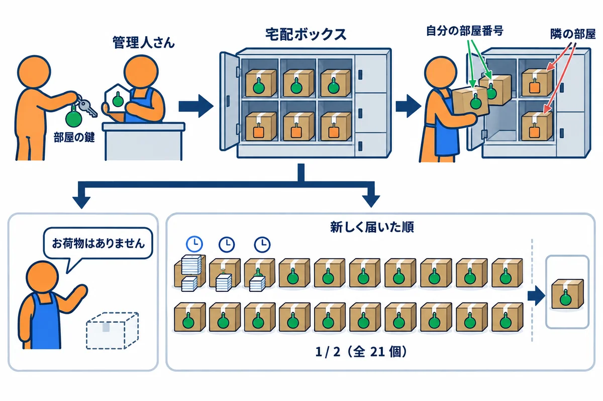
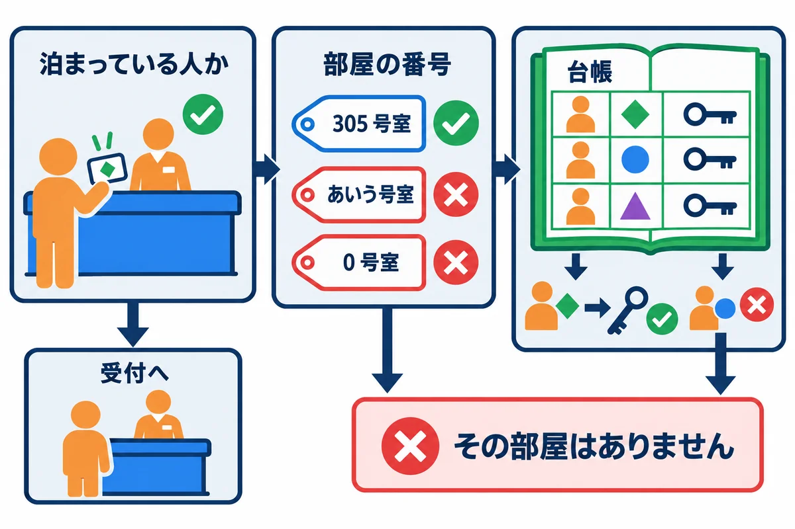
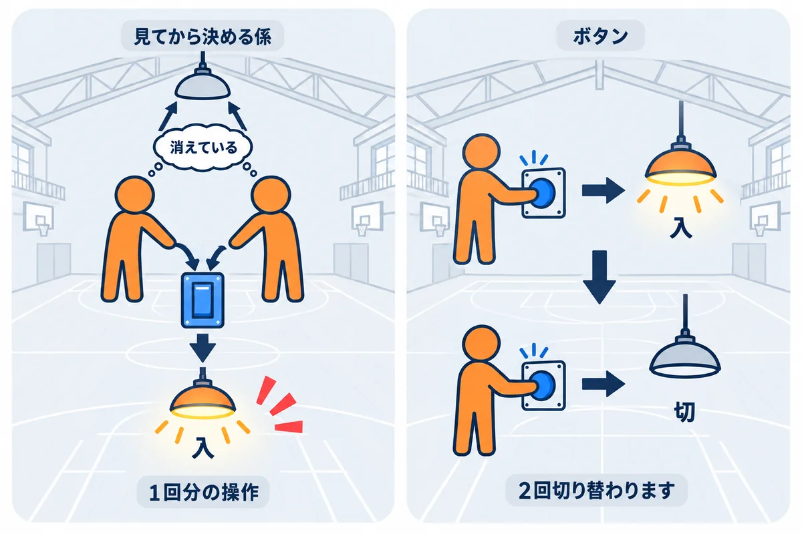

VOLUME 10 / RUST BACKEND MASTERY
RustNote — CRUD・検索・UI 完全実装
一覧・作成・詳細・編集・完了・削除・検索・ページ送り・お知らせ・使いやすさを、1画面ずつ動かして確かめる
色の付いた枠のコードの、右上の「コピー」ボタンを押してください。コピーしたら、PDF を見ていた画面に戻ります（ブラウザーで PDF を見ていた時は「戻る」、VS Code で見ていた時は VS Code の窓に切り替えます）。
第9巻で、RustNote の要件・画面・データの決まり・フォルダの構成を設計しました。この巻では、その設計がノートの画面の1つずつで、どうコードになっているかを読み、動かして確かめます。
ノートの画面は、作る（Create）・読む（Read）・直す（Update）・消す（Delete）の4つの操作でできています。頭文字をとって CRUD（クラッド）と呼びます。どのアプリにもある基本の形ですが、作り方を1つまちがえると、次のような事故が起きます。
% を入れたら、全部のノートが出てくるこの巻では、RustNote の完成したソース（Rust/rustnote/）をお手本にして、画面ごとに「どんな事故を、どのコードで防いでいるか」を、テストを書いて確かめていきます。
この巻を終えると、次のことができるようになります。
view! で作れる/notes/{id}）を型に変え、見つからない・他人のノートを、同じ 404 にできるversion）で、別のタブの更新を上書きしないようにし、完了の切り替えを1つの SQL で行える| 単元 | テーマ | ひとことで言うと |
|---|---|---|
| UNIT 01 | 一覧・空のとき・持ち主の条件 | 自分のノートだけを、決まった順番で並べる |
| UNIT 02 | 作成のフォーム・入力の検査・PRG | 失敗は 400 で出し直し、成功は 303 で移る |
| UNIT 03 | 詳細・URL の ID・見つからないとき | 無いノートも他人のノートも、同じ 404 にする |
| UNIT 04 | 編集・入力済みのフォーム・競合 | 別のタブの更新を、黙って上書きしない |
| UNIT 05 | 完了の切り替え・1文の SQL | 読んでから書く形にせず、DB に1回で切り替えさせる |
| UNIT 06 | 削除・確かめ・消し方の選び方 | GET では消さない。消す前に確かめる |
| UNIT 07 | 検索・LIKE のエスケープ | % や _ を、ただの文字として探す |
| UNIT 08 | ページ送り・OFFSET と cursor | 深いページでも、重ならず抜けずに送る |
| UNIT 09 | お知らせ（フラッシュ）・エラーのまとめ | 移った先で一度だけ出し、エラーは同じ画面で見せる |
| UNIT 10 | 狭い画面・アクセシビリティ・総合の試験 | スマートフォンとキーボードでも使えるかを確かめる |
SELECT・WHERE・ORDER BY・LIMIT（第7巻 UNIT 02）と、持ち主の条件を付けた SQL（第7巻 UNIT 03）。tests/ に足して cargo test --test 名前）で書きます。注意: この巻で使う Topcoat の機能は、第6巻でくわしく扱っています（
#[page]・href!は第6巻 UNIT 03、URL の部品は UNIT 04、view!・#[component]は UNIT 05、フォームと PRG は UNIT 06）。本文の中でも、そのつど短く説明します。
画面のコードは、ブラウザで開いて「動いた」で終わりにしがちです。各単元では、次の順番で進めてください。
src/routes/ と src/repository/notes.rs の、その画面の部分を読みます。この巻のコードは、すべて次の環境で実際にコンパイル・実行し、実行結果とエラーメッセージは実際の出力をそのまま載せています（パソコンのユーザー名などを含む部分は ... に置き換えています）。
| 項目 | 版・内容 |
|---|---|
| OS | Windows 11（ARM64）。コマンドは PowerShell を主に、WSL / macOS / Linux は補足で示します |
| Rust | 1.99 以上（本書シリーズの基準。Topcoat 0.11 が 1.99 以上を求めます）。動作確認は rustc 1.99.1 / cargo 1.99.1（aarch64-pc-windows-msvc） |
| RustNote | 教材の Rust/rustnote/（rustnote 0.1.0）。この巻では src/ を変えずに、tests/ と examples/ に確かめ用のファイルを足す |
| topcoat | 0.11.0（#[page]・#[component]・view!・href!） |
| libsql | 0.10.0（ローカルの DB ファイル） |
第9巻と同じように、教材の Rust/rustnote/ を作業用のフォルダにコピーして使います。
# 教材の rustnote フォルダを、中身ごと（-Recurse）作業用のフォルダへコピーする
Copy-Item -Recurse "教材のフォルダ\Rust\rustnote" .\rustnote
cd rustnote
# このフォルダで使われる Rust の版を確かめる（1.99.1 になる）
rustup show active-toolchain
この巻のテストは、RustNote の tests/common/mod.rs にある道具（test_app・sign_up・create_note・body_text など）を使います。テストごとに一時フォルダに新しい DB を作り、ポートを開かずに、ルーターへ直接リクエストを渡して動かします（第9巻 UNIT 01）。
GET /notes）が、ログインの確かめ → URL のクエリの読み取り → DB の検索 → HTML の組み立て、の順で作られていることを説明できるuser_id = ?1）と、並び順（ORDER BY updated_at DESC, id DESC）と、ページの区切り（LIMIT・OFFSET）が入っている理由を言えるview! を読み、テストで確かめられる
マンションの、共同の宅配ボックスを考えます。ボックスには、住んでいる人全員の荷物が入っています。
RustNote の一覧の画面も、同じ順番で作ります。
| 宅配ボックス | RustNote の一覧（GET /notes） |
|---|---|
| 部屋の鍵を見て、その部屋の人かを確かめる | require_user(cx)（ログインの確かめ。第8巻 UNIT 01） |
| 自分の部屋番号の札が付いた荷物だけを出す | SQL の WHERE user_id = ?1（持ち主の条件） |
| 新しく届いた順、同じ時刻なら受付の番号の大きい順 | ORDER BY updated_at DESC, id DESC |
| 20 個ずつ並べる | LIMIT 20 OFFSET …（PER_PAGE = 20） |
| 「お荷物はありません」 | if page.notes.is_empty() の文 |
| 「1 / 2（全 21 個）」 | ページ送りの部品（pagination）と、件数の SQL（COUNT(*)） |
用語: CRUD（クラッド：Create（作る）・Read（読む）・Update（直す）・Delete（消す）の頭文字。データを扱う画面の基本の4つの操作）
用語: 空の状態（からのじょうたい。empty state：表示するデータが1件も無いときの画面。何も表示しないのではなく、次にすること（「最初の1件を書いてみましょう」）を伝える）
GET /notes のリクエストが届いてから、HTML を返すまでの流れです。
index の中です。require_user(cx) でログイン中のユーザーを確かめ、query_params で URL の ?q=（キーワード）と ?page=（ページ番号）を読み、NoteQuery::new で検査済みの型にします。search です。件数を数える SQL と、そのページの分を読む SQL の2つを送ります。どちらにも user_id = ?1 が入っています（問2で、片方だけ忘れたらどうなるかを確かめます）。notes_index です。読んだノートが 0 件か、そうでないかで、表示を分けます。並び順の決まりは、次の図のとおりです。
updated_at は、datetime('now') で入れた「秒まで」の時刻です。テストのように速く続けて作ると、3件とも同じ時刻になります。id DESC を足しています。id は1件ごとに違う数なので、同じ時刻のノートも、必ず決まった順番に並びます。▼ このコードがやること（先に日本語で）: 3つのテストで、一覧の画面（
GET /notes）の HTML を調べます。1つ目は、ノートが 0 件のときの文、3件作ったときの並び順とページ送りの文、bob から見た一覧です。2つ目は、3件目の更新の時刻だけを1日前にずらしたときの並び順です。3つ目は、タグを含むタイトルが、文字として表示されるかです。
//! 第10巻 UNIT 01: ノートの一覧（GET /notes）の、空のとき・並び順・持ち主ごとの表示を確かめる。
//! 実行: cargo test --test u01_list -- --nocapture --test-threads=1
mod common;
use common::{TestApp, body_text, test_app};
const PASSWORD: &str = "correct horse battery";
/// 一覧の HTML に、どのタイトルが、どの順番で出ているか
fn order<'a>(html: &str, titles: &[&'a str]) -> Vec<&'a str> {
let mut found: Vec<(usize, &str)> = titles
.iter()
.filter_map(|title| html.find(title).map(|at| (at, *title)))
.collect();
found.sort();
found.into_iter().map(|(_, title)| title).collect()
}
/// 一覧を開いて、HTML を返す
async fn list(app: &TestApp, cookie: &str) -> String {
body_text(app.get("/notes", Some(cookie)).await).await
}
#[tokio::test]
async fn empty_then_newest_first() {
let app = test_app().await;
let alice = app.sign_up("alice@example.com", PASSWORD).await;
let html = list(&app, &alice).await;
println!(
"[ノートが 0 件] 空の文が出る: {}",
html.contains("まだノートがありません")
);
for title in ["1件目", "2件目", "3件目"] {
app.create_note(&alice, title, "").await;
}
let html = list(&app, &alice).await;
println!(
"[3 件作った] 並び順: {:?}",
order(&html, &["1件目", "2件目", "3件目"])
);
println!(
"[3 件作った] ページ送り: {}",
html.contains("1 / 1 ページ（全3件）")
);
let bob = app.sign_up("bob@example.com", PASSWORD).await;
let html = list(&app, &bob).await;
println!(
"[bob の一覧] 空の文が出る: {} / alice のノートが出る: {}",
html.contains("まだノートがありません"),
html.contains("1件目")
);
println!(
"[bob の一覧] ページ送り: {}",
html.contains("1 / 1 ページ（全0件）")
);
}
#[tokio::test]
async fn ordered_by_updated_at_then_id() {
let app = test_app().await;
let alice = app.sign_up("alice@example.com", PASSWORD).await;
for title in ["1件目", "2件目", "3件目"] {
app.create_note(&alice, title, "").await;
}
// 3件目の「最後に更新した時刻」を、1日前にずらす
let conn = app.db.db.connect().await.expect("DB に接続できません");
conn.execute(
"UPDATE notes SET updated_at = datetime('now', '-1 day') WHERE title = '3件目'",
(),
)
.await
.expect("更新できません");
let html = list(&app, &alice).await;
println!(
"[3件目を 1 日前の更新にした] 並び順: {:?}",
order(&html, &["1件目", "2件目", "3件目"])
);
}
#[tokio::test]
async fn titles_are_escaped() {
let app = test_app().await;
let alice = app.sign_up("alice@example.com", PASSWORD).await;
app.create_note(&alice, "<b>太字</b> & <script>", "").await;
let html = list(&app, &alice).await;
println!("タグのまま入っている: {}", html.contains("<b>太字</b>"));
println!(
"文字に置き換わっている: {}",
html.contains("<b>太字</b> & <script>")
);
}
コピーした rustnote フォルダの tests/u01_list.rs として保存して実行します。
cargo test --test u01_list -- --nocapture --test-threads=1
▼ 実行結果
Finished `test` profile [unoptimized + debuginfo] target(s) in 1.46s
Running tests\u01_list.rs (target\debug\deps\u01_list-0d57f366070afeda.exe)
running 3 tests
test empty_then_newest_first ... POST /signup -> 303 See Other (583.2082ms)
GET /notes -> 200 OK (5.6154ms)
[ノートが 0 件] 空の文が出る: true
POST /notes -> 303 See Other (10.0323ms)
POST /notes -> 303 See Other (10.109ms)
POST /notes -> 303 See Other (9.5529ms)
GET /notes -> 200 OK (5.5839ms)
[3 件作った] 並び順: ["3件目", "2件目", "1件目"]
[3 件作った] ページ送り: true
POST /signup -> 303 See Other (574.0721ms)
GET /notes -> 200 OK (5.5192ms)
[bob の一覧] 空の文が出る: true / alice のノートが出る: false
[bob の一覧] ページ送り: true
ok
test ordered_by_updated_at_then_id ... POST /signup -> 303 See Other (532.8901ms)
POST /notes -> 303 See Other (9.5425ms)
POST /notes -> 303 See Other (8.5775ms)
POST /notes -> 303 See Other (9.3065ms)
GET /notes -> 200 OK (16.4698ms)
[3件目を 1 日前の更新にした] 並び順: ["2件目", "1件目", "3件目"]
ok
test titles_are_escaped ... POST /signup -> 303 See Other (591.5261ms)
POST /notes -> 303 See Other (6.9616ms)
GET /notes -> 200 OK (5.1461ms)
タグのまま入っている: false
文字に置き換わっている: true
ok
test result: ok. 3 passed; 0 failed; 0 ignored; 0 measured; 0 filtered out; finished in 2.45s
空の文が出る: true）。何も表示しない画面だと、利用者は「読み込みに失敗したのか」「本当に 0 件なのか」を区別できません。次にすることまで書いておくのが、空の状態の作り方です。1件目）は出ませんでした。ページ送りも 1 / 1 ページ（全0件） で、alice の 3 件は数えられていません。["3件目", "2件目", "1件目"] でした。3件は同じ秒に作られたので、updated_at は同じです。id DESC で、あとから作った（id の大きい）ノートが上に来ました。updated_at を1日前にずらすと、並び順は ["2件目", "1件目", "3件目"] になりました。updated_at が古い 3件目は、id が大きくても下に移ります。並び順の1つ目の決まりは updated_at、2つ目が id です。order は、テストのための小さな道具です。HTML の中で、それぞれのタイトルが何文字目に出てくるかを調べ、前から順に並べ直しています。<b>太字</b> & <script> を入れると、HTML の中には <b>太字</b> & <script> と書かれていました（タグのまま入っている: false）。< が <、> が >、& が & に置き換わっています。ブラウザには、<b>太字</b> という文字が、そのまま表示されます。view! の (note.title) のように、( ) で値を入れた所が、自動でエスケープ（HTML で特別な意味を持つ文字を、ただの文字の書き方に置き換えること）されるからです。利用者が <script> を書いても、プログラムとして動きません（src/views.rs の先頭のコメント）。用語: エスケープ（escape：特別な意味を持つ文字を、ただの文字として扱われる書き方に置き換えること。HTML では
<を<にする）
ORDER BY updated_at DESC だけでは、同じ時刻のノートの順番は決まりません。本当にそうなるのか、DB に直接 SQL を送って確かめます。
▼ このコードがやること（先に日本語で）: 一時フォルダの DB に、同じ秒のうちに3件のノートを入れます。
updated_atの値を表示してから、ORDER BY updated_at DESCだけの SQL と、, id DESCを足した SQL で、タイトルを並べて表示します。
▶ 書く所と動かし方: コピーした rustnote フォルダの examples フォルダに、u01_order.rs という名前の新しいファイルを作り、下のコードを貼り付けて保存します。rustnote のフォルダで cargo run -q --example u01_order を実行します。
//! 並び替えに updated_at だけを使うと、同じ秒に更新したノートの順番が決まらないことを確かめる。
//! 実行: cargo run -q --example u01_order
use libsql::Connection;
use rustnote::db::{self, Db};
/// SQL を実行して、タイトルを順に並べる
async fn titles(conn: &Connection, sql: &str) -> anyhow::Result<Vec<String>> {
let mut rows = conn.query(sql, ()).await?;
let mut titles = Vec::new();
while let Some(row) = rows.next().await? {
titles.push(row.get::<String>(0)?);
}
Ok(titles)
}
#[tokio::main]
async fn main() -> anyhow::Result<()> {
let dir = tempfile::tempdir()?;
let db = Db::open_local(dir.path().join("u01.db")).await?;
db::migrate(&db).await?;
let conn = db.connect().await?;
// 3件を、同じ秒のうちに続けて作る（updated_at は秒までしか持たない）
conn.execute_batch(
"INSERT INTO users (email, password_hash) VALUES ('alice@example.com', 'x');
INSERT INTO notes (user_id, title) VALUES (1, '1件目');
INSERT INTO notes (user_id, title) VALUES (1, '2件目');
INSERT INTO notes (user_id, title) VALUES (1, '3件目');",
)
.await?;
println!(
"updated_at: {:?}",
titles(&conn, "SELECT DISTINCT updated_at FROM notes").await?
);
let by_time = titles(
&conn,
"SELECT title FROM notes WHERE user_id = 1 ORDER BY updated_at DESC",
)
.await?;
println!("ORDER BY updated_at DESC → {by_time:?}");
let by_time_and_id = titles(
&conn,
"SELECT title FROM notes WHERE user_id = 1 ORDER BY updated_at DESC, id DESC",
)
.await?;
println!("ORDER BY updated_at DESC, id DESC → {by_time_and_id:?}");
Ok(())
}
▶ ここで初めて出てくるコード
DISTINCT（SQL）: SQL のSELECT DISTINCTは、同じ値の行を 1 つにまとめて（重なりを消して）返します。
cargo run -q --example u01_order
▼ 実行結果
updated_at: ["2026-10-30 13:35:47"]
ORDER BY updated_at DESC → ["3件目", "2件目", "1件目"]
ORDER BY updated_at DESC, id DESC → ["3件目", "2件目", "1件目"]
updated_at は、どれも同じ秒でした。そして、この実験では、id DESC を足しても足さなくても、同じ ["3件目", "2件目", "1件目"] になりました。id DESC は要らないのでしょうか。いいえ、要ります。SQL の決まりでは、ORDER BY の値が同じ行どうしの順番は決まっていません。この実験で同じ順になったのは、今の SQLite が、同じ値の行を、たまたま行の番号（id）の大きい順に返したからです。索引を足したり、DB を Turso に変えたり、SQLite の版が上がったりしたときに、同じ順になる保証はありません。id）を足して、順番を必ず1つに決めるのです。結果が同じでも、「たまたま」ではなく「決まり」で同じにしておきます。注意: 「試したら同じ順だったから大丈夫」と考えるのは危険です。テストは、今の DB の作りでの1回の結果しか確かめられません。SQL の決まりで保証されていないことは、コードで保証します。
notes_index の view! の中では、ノートを for note in page.notes.clone() で1行ずつ並べています。.clone()（複製）は無駄に見えるので、外してみた場合です。試すときは、練習用のコピーの src/routes/notes.rs を書き換え、確かめたら必ず元に戻してください。
for note in page.notes {
cargo build
Compiling rustnote v0.1.0 (...\rustnote)
error[E0382]: use of partially moved value
--> src\routes\notes.rs:104:26
|
89 | for note in page.notes {
| ---------- value partially moved due to this implicit call to `.into_iter()`
...
104 | pagination(page: page, query: query)
| ^^^^ value used here after partial move
|
note: the `for` loop is desugared into a call to `std::iter::IntoIterator::into_iter`, which takes ownership of the receiver `self`, which moves value
--> /rustc/58cf8f9c35b355199727627d07ae34a4e2846d67/library\core\src\iter\traits\collect.rs:312:17
= note: partial move occurs because value has type `std::vec::Vec<Note>`, which does not implement the `Copy` trait
help: consider iterating over a slice of the `std::vec::Vec<Note>`'s content to avoid moving into the `for` loop
|
89 | for note in &page.notes {
| +
For more information about this error, try `rustc --explain E0382`.
error: could not compile `rustnote` (lib) due to 1 previous error
for note in page.notes で、page の中の notes（Vec<Note>）が for の中へ移動しました（note: が、for は into_iter() を呼んで、値の持ち主を移す、と説明しています）。そのあと、104 行目の pagination(page: page, ...) で page を丸ごと渡そうとしたので、「notes はもう page の中に無い」と止められました（第3巻）。page.notes.clone() で、ノートの一覧を複製してから for に渡します。page の中の notes は残るので、ページ送りの部品にも page を丸ごと渡せます。エラー1の help: は、「&page.notes のように、借りて回してはどうか」と案内しています。案内どおりに書き換えた場合です。
for note in &page.notes {
Compiling rustnote v0.1.0 (...\rustnote)
error[E0507]: cannot move out of `note.title` which is behind a shared reference
...
Some errors have detailed explanations: E0505, E0507.
For more information about an error, try `rustc --explain E0505`.
error: could not compile `rustnote` (lib) due to 3 previous errors
（エラーの全文は長いので、最初の2行と最後の3行だけを載せています。間に、note.updated_at について同じ形の E0507 と、E0505 が続きます）
note.title からは、値を移動できません」というエラーが、note.title と note.updated_at で2つ、さらに E0505（借りている値を移動しようとした）が1つ出ました。Topcoat の view! は、(note.title) のように入れた値を持ち主ごと受け取って HTML にするので、借りただけの note からは渡せないのです。help: は、そのエラーを消すための1つの案です。プログラム全体の作り（ここでは、view! が値を受け取る形）までは見ていないので、案内どおりに直すと、別のエラーになることがあります。エラーを1つずつ読んで、なぜ移動が起きるのかを考えるのが近道です。clone() で複製しても、速さはほとんど変わりません。読みやすさを優先して、RustNote は clone() にしています。確かめたら、src/routes/notes.rs を元に戻します。一覧のページの関数 index です（src/routes/notes.rs から抜き出しています）。
#[page]
pub async fn index(cx: &Cx) -> Result<impl View> {
let user = require_user(cx).await?;
let params = query_params::<NotesParams>(cx)?;
let query = NoteQuery::new(params.q.as_deref(), params.page);
let flash = flash::take(cx);
Ok(view! {
flash_banner(flash: flash)
notes_index(owner: user.id, query: query, form: NoteFormState::default())
})
}
▶ ここで初めて出てくるコード
flash::take()（RustNote で作る物）: RustNote で、決めておいたお知らせ（フラッシュ）を取り出す関数。取り出すと消えるので、1 回だけ表示されます。第10巻で作ります。NoteFormState::default()（型とメソッド）: この巻で作る型NoteFormState（入力フォームの中身と、まちがいの知らせ）を、空の状態で作る書き方。最初にフォームを表示する時に使います。
require_user(cx) を呼びます。ログインしていなければ、ここで 303 になり、下の行は動きません。notes_index に渡すのは、owner: user.id です。一覧の部品は、持ち主を引数で受け取るので、「誰の一覧か」を、部品の中で勝手に決めることができません。ノートを1行ずつ並べるところです（notes_index の view! から抜き出しています）。
if page.notes.is_empty() {
<p class="empty">
if keyword.is_some() {
"条件に合うノートはありません。"
} else {
"まだノートがありません。最初の1件を書いてみましょう。"
}
</p>
} else {
<ul class="note-list">
#[key(note.id.get())]
for note in page.notes.clone() {
<li class=(class!("note-item", "done" if note.done))>
<a href=(href!(id::show, id::Id(note.id)))>(note.title)</a>
if note.done {
<span class="badge">"完了"</span>
}
<span class="updated">
"更新: "
(note.updated_at)
</span>
</li>
}
</ul>
}
view! の中には、Rust の if と for を、そのまま書けます。#[key(note.id.get())] は、1行ずつに「このノートの番号」という目印を付ける指定です。class!("note-item", "done" if note.done) は、完了したノートだけに done のクラスを足します（問1）。href!(id::show, id::Id(note.id)) で作ります。URL を文字列で "/notes/" + id と組み立てるのではなく、詳細のページの関数（id::show）と、その ID の型を指定するので、ページを消したり名前を変えたりすると、コンパイルエラーで気づけます（第9巻 UNIT 04）。DB を検索するところは、図の③で見た SQL です（src/repository/notes.rs から抜き出しています）。
// LIKE の中の \ を「次の文字をそのまま扱う」という意味にする（ESCAPE '\'）
let condition = "user_id = ?1 AND (title LIKE ?2 ESCAPE '\\' OR body LIKE ?2 ESCAPE '\\')";
// 1) 条件に合う件数（ページ数の計算に使う）
let count_sql = format!("SELECT COUNT(*) FROM notes WHERE {condition}");
// 2) このページに表示する分（新しく更新した順）
let list_sql = format!(
"SELECT {NOTE_COLUMNS} FROM notes WHERE {condition}
ORDER BY updated_at DESC, id DESC
LIMIT ?3 OFFSET ?4"
);
condition を、件数の SQL と一覧の SQL の両方で使い回しています。条件を1か所に書くので、片方だけ書き忘れる心配がありません（問2）。?2 に %（何にでも一致する）を入れます。キーワードの中の % や _ をただの文字として扱う escape_like は、UNIT 07 で扱います。問1: 3件のノートを作り、3件とも「最後に更新したのは1時間前」にしてから、1件目だけを完了にします（POST /notes/1/toggle）。一覧の並び順と、完了の印（class="note-item done" と「完了」のバッジ）は、どうなるでしょうか。予想してから、テストで確かめてください。
問2: もし、件数を数える SQL にだけ持ち主の条件を書き忘れたら、alice が 3 件、bob が 0 件のとき、bob の一覧のページ送りには何と表示されるでしょうか。DB に直接 SQL を送る小さなプログラムで確かめてください。
問3: RustNote の一覧は、ノートが 0 件のときと、検索で 0 件のときで、出す文を変えています。それぞれ、どんな文が出るかを確かめてください。また、文を分けている理由を説明してください。
問1の解答:
tests/u01_q1.rs です。
//! 問1の解答: 完了にしたノートは、一覧でどう表示され、どこに並ぶか。
//! 実行: cargo test --test u01_q1 -- --nocapture
mod common;
use common::{body_text, test_app};
#[tokio::test]
async fn toggled_note_moves_to_top_with_badge() {
let app = test_app().await;
let alice = app
.sign_up("alice@example.com", "correct horse battery")
.await;
let first = app.create_note(&alice, "1件目", "").await;
app.create_note(&alice, "2件目", "").await;
app.create_note(&alice, "3件目", "").await;
// 3件とも、最後に更新したのは1時間前だったことにする
let conn = app.db.db.connect().await.expect("DB に接続できません");
conn.execute(
"UPDATE notes SET updated_at = datetime('now', '-1 hour')",
(),
)
.await
.expect("更新できません");
// 1件目を完了にする（更新の時刻が今になる）
app.post_form(&format!("{first}/toggle"), "", Some(&alice))
.await;
let html = body_text(app.get("/notes", Some(&alice)).await).await;
let mut found: Vec<(usize, &str)> = ["1件目", "2件目", "3件目"]
.into_iter()
.filter_map(|title| html.find(title).map(|at| (at, title)))
.collect();
found.sort();
let order: Vec<&str> = found.into_iter().map(|(_, title)| title).collect();
println!("並び順: {order:?}");
println!(
"完了の印の付いた行: {}",
html.matches(r#"class="note-item done""#).count()
);
println!(
"「完了」のバッジ: {}",
html.matches(r#"<span class="badge">完了</span>"#).count()
);
}
cargo test --test u01_q1 -- --nocapture
Compiling rustnote v0.1.0 (...\rustnote)
Finished `test` profile [unoptimized + debuginfo] target(s) in 3.26s
Running tests\u01_q1.rs (target\debug\deps\u01_q1-bce08f7bd283041f.exe)
running 1 test
POST /signup -> 303 See Other (420.6426ms)
POST /notes -> 303 See Other (6.669ms)
POST /notes -> 303 See Other (6.1696ms)
POST /notes -> 303 See Other (5.6107ms)
POST /notes/1/toggle -> 303 See Other (10.7107ms)
GET /notes -> 200 OK (9.9974ms)
並び順: ["1件目", "3件目", "2件目"]
完了の印の付いた行: 1
「完了」のバッジ: 1
test toggled_note_moves_to_top_with_badge ... ok
test result: ok. 1 passed; 0 failed; 0 ignored; 0 measured; 0 filtered out; finished in 0.49s
toggle_done）の SQL は、done を反対にするのと一緒に、updated_at = datetime('now') で更新の時刻を今にするからです（src/repository/notes.rs）。残りの2件は、どちらも1時間前の同じ時刻なので、id DESC で 3件目、2件目の順です。ORDER BY done, updated_at DESC, id DESC のように、done（0 が未完了、1 が完了）を最初に並べます。問2の解答:
examples/u01_q2.rs です。
//! 問2の解答: 件数を数える SQL にだけ、持ち主の条件を書き忘れたら、bob の一覧はどうなるか。
//! 実行: cargo run -q --example u01_q2
use libsql::{Connection, params::IntoParams};
use rustnote::db::{self, Db};
/// 1つの数を返す SQL を実行する
async fn count(conn: &Connection, sql: &str, params: impl IntoParams) -> anyhow::Result<i64> {
let mut rows = conn.query(sql, params).await?;
let row = rows.next().await?.expect("行があるはずです");
Ok(row.get::<i64>(0)?)
}
#[tokio::main]
async fn main() -> anyhow::Result<()> {
let dir = tempfile::tempdir()?;
let db = Db::open_local(dir.path().join("u01.db")).await?;
db::migrate(&db).await?;
let conn = db.connect().await?;
conn.execute_batch(
"INSERT INTO users (email, password_hash)
VALUES ('alice@example.com', 'x'), ('bob@example.com', 'x');
INSERT INTO notes (user_id, title) VALUES (1, '1件目'), (1, '2件目'), (1, '3件目');",
)
.await?;
let bob: i64 = 2;
// 一覧に並べる SQL（RustNote と同じく、持ち主の条件がある）
let listed = count(
&conn,
"SELECT COUNT(*) FROM (SELECT id FROM notes WHERE user_id = ?1 LIMIT 20)",
[bob],
)
.await?;
// 間違い: 件数の SQL に、持ち主の条件を書き忘れた
let wrong = count(
&conn,
"SELECT COUNT(*) FROM notes WHERE title LIKE '%' OR body LIKE '%'",
(),
)
.await?;
// RustNote と同じ: 件数の SQL にも、持ち主の条件を入れる
let right = count(
&conn,
"SELECT COUNT(*) FROM notes WHERE user_id = ?1 AND (title LIKE '%' OR body LIKE '%')",
[bob],
)
.await?;
println!("bob の一覧に並ぶノート: {listed} 件");
println!("件数の SQL に持ち主の条件が無い: 1 / 1 ページ（全{wrong}件）");
println!("件数の SQL にも持ち主の条件がある: 1 / 1 ページ（全{right}件）");
Ok(())
}
cargo run -q --example u01_q2
bob の一覧に並ぶノート: 0 件
件数の SQL に持ち主の条件が無い: 1 / 1 ページ（全3件）
件数の SQL にも持ち主の条件がある: 1 / 1 ページ（全0件）
1 / 1 ページ（全3件） と出ます。画面には何も並んでいないのに「全3件」と出るので、利用者は混乱します。condition という1つの文字列にまとめ、2つの SQL で使い回しているので、この間違いが起きにくくなっています。問3の解答:
tests/u01_q3.rs です。
//! 問3の解答: ノートが 0 件のときと、検索で 0 件のときで、出る文が違うことを確かめる。
//! 実行: cargo test --test u01_q3 -- --nocapture
mod common;
use common::{body_text, test_app};
#[tokio::test]
async fn empty_messages_differ() {
let app = test_app().await;
let alice = app
.sign_up("alice@example.com", "correct horse battery")
.await;
app.create_note(&alice, "買い物", "牛乳").await;
for url in ["/notes", "/notes?q=宿題"] {
let html = body_text(app.get(url, Some(&alice)).await).await;
let empty = html
.split(r#"<p class="empty">"#)
.nth(1)
.and_then(|rest| rest.split("</p>").next())
.unwrap_or("（空の文は無し）");
println!("{url} → {empty}");
}
let bob = app
.sign_up("bob@example.com", "correct horse battery")
.await;
let html = body_text(app.get("/notes", Some(&bob)).await).await;
let empty = html
.split(r#"<p class="empty">"#)
.nth(1)
.and_then(|rest| rest.split("</p>").next())
.unwrap_or("（空の文は無し）");
println!("/notes（bob）→ {empty}");
}
cargo test --test u01_q3 -- --nocapture
Compiling rustnote v0.1.0 (...\rustnote)
Finished `test` profile [unoptimized + debuginfo] target(s) in 3.29s
Running tests\u01_q3.rs (target\debug\deps\u01_q3-ead5ae5e7277cf12.exe)
running 1 test
POST /signup -> 303 See Other (485.3685ms)
POST /notes -> 303 See Other (10.3552ms)
GET /notes -> 200 OK (7.401ms)
/notes → （空の文は無し）
GET /notes -> 200 OK (4.7077ms)
/notes?q=宿題 → 条件に合うノートはありません。
POST /signup -> 303 See Other (440.9546ms)
GET /notes -> 200 OK (4.159ms)
/notes（bob）→ まだノートがありません。最初の1件を書いてみましょう。
test empty_messages_differ ... ok
test result: ok. 1 passed; 0 failed; 0 ignored; 0 measured; 0 filtered out; finished in 0.98s
/notes には空の文が出ません。「宿題」で検索すると「条件に合うノートはありません。」、ノートを1件も持っていない bob には「まだノートがありません。最初の1件を書いてみましょう。」が出ました。view! の中の if keyword.is_some() が、この出し分けをしています（第9巻 UNIT 02 の画面の状態）。GET /notes）は、require_user で誰かを確かめ、URL のクエリを NoteQuery にし、持ち主の条件付きの2つの SQL（件数と、そのページの分）で読み、view! で HTML にする。持ち主の条件は1か所に書いて、2つの SQL で使い回す。ORDER BY updated_at DESC, id DESC。同じ時刻の行の順番は SQL では決まっていないので、試して同じでも、最後に重ならない id を足して決める。view! に ( ) で入れた値は自動でエスケープされ、利用者のタイトルはタグではなく文字として表示される。POST /notes）が、ログインの確かめ → 入力の検査 → 保存 → 303 で詳細へ、の順で動くことを説明できるname と NoteForm の項目名が合わないときの 400 と、String と &str を取り違えたときの E0308 を読める役所の窓口に、申請書を出す場面を考えます。
| 役所の窓口 | RustNote の作成（POST /notes） |
|---|---|
| 申請書を出す | フォームを送る（POST /notes） |
| 書き漏れがあれば、申請書を返して付箋を貼る | 400 で、入力を残したフォームと、項目ごとのエラーを出し直す |
| 付箋は全部まとめて貼る | NewNote::parse が、タイトルと本文の問題を両方集める |
| 受け付けたら、控えは別の窓口で | 303 と Location: /notes/1（ブラウザが、改めて GET で取りに行く） |
| スタンプは一度だけ | お知らせ（フラッシュ）のクッキー。表示したら消す |
| 控えを見直す | 再読み込み（GET をもう一度）。ノートは増えない |
| 申請書を出し直す | 同じ POST をもう一度送る。ノートは増える |
用語: PRG（ピーアールジー。Post/Redirect/Get：フォームの POST が成功したら、画面を直接返さずに、303 で別の URL へ移し、ブラウザに GET で開き直させる形。第9巻 UNIT 02）
用語: 入力の検査（バリデーション：送られてきた値が、決まり（タイトルは 1〜80 文字など）に合っているかを確かめること。合わなければ、保存せずに断る）
用語: 400 Bad Request（「送られてきた内容に問題がある」という返事。利用者が直せば通る失敗に使う）
POST /notes が届いてから、返事をするまでの流れです。
成功したときの、ブラウザとサーバーのやり取りです。
/notes/1 を GET します。アドレス欄も /notes/1 に変わります。だから⑤の再読み込みは「GET /notes/1 をもう一度」になり、ノートは増えません。検査は、タイトルと本文を両方とも調べてから、結果をまとめます。
▼ このコードがやること（先に日本語で）: 1つ目のテストでは、alice でログインしてノートを作り、①POST の返事（状態コード・移動先・お知らせのクッキー）、②移動先を GET したときの画面とクッキー、③もう一度 GET したとき（再読み込み）を、順に表示します。2つ目のテストでは、タイトルを空にして送り、返ってきた作成フォームの HTML を表示します。次に、タイトルを空白だけ・本文を 10,001 文字にして送り、エラーの文と入力が残っているかを表示します。どちらも、最後に
notes表の件数を数えます。
//! 第10巻 UNIT 02: 作成のフォーム（POST /notes）の、成功（303）と失敗（400）を確かめる。
//! 実行: cargo test --test u02_create -- --nocapture --test-threads=1
mod common;
use common::{TestApp, body_text, location, test_app};
use topcoat::router::{header, response::Response};
const PASSWORD: &str = "correct horse battery";
/// Set-Cookie の中から、お知らせ（flash=...）のクッキーを探す
fn flash_cookie(response: &Response) -> Option<String> {
response
.headers()
.get_all(header::SET_COOKIE)
.iter()
.filter_map(|value| value.to_str().ok())
.find(|value| value.starts_with("flash="))
.map(str::to_string)
}
/// notes 表に何件あるか
async fn count_notes(app: &TestApp) -> i64 {
let conn = app.db.db.connect().await.expect("DB に接続できません");
let mut rows = conn
.query("SELECT COUNT(*) FROM notes", ())
.await
.expect("数えられません");
let row = rows
.next()
.await
.expect("行を読めません")
.expect("行がない");
row.get(0).expect("COUNT(*)")
}
#[tokio::test]
async fn success_redirects_with_303() {
let app = test_app().await;
let alice = app.sign_up("alice@example.com", PASSWORD).await;
// 1. フォームを送る（POST）
let form = "title=%E8%B2%B7%E3%81%84%E7%89%A9%E3%83%A1%E3%83%A2&body=%E7%89%9B%E4%B9%B3";
let response = app.post_form("/notes", form, Some(&alice)).await;
let to = location(&response).to_string();
let flash = flash_cookie(&response).expect("お知らせのクッキーがない");
println!("1. POST /notes → {}", response.status());
println!(" Location: {to}");
println!(" Set-Cookie: {flash}");
// 2. ブラウザは Location へ移る（GET）。お知らせのクッキーも一緒に送る
let cookie = format!("{alice}; flash=note_created");
let response = app.get(&to, Some(&cookie)).await;
let removed = flash_cookie(&response).unwrap_or_default();
let html = body_text(response).await;
println!("2. GET {to}");
println!(
" お知らせ「ノートを作成しました」: {}",
html.contains("ノートを作成しました")
);
println!(
" タイトル「買い物メモ」: {}",
html.contains("<h1>買い物メモ</h1>")
);
println!(" Set-Cookie: {removed}");
// 3. 再読み込み（同じ URL をもう一度 GET。お知らせのクッキーはもう無い）
let html = body_text(app.get(&to, Some(&alice)).await).await;
println!("3. もう一度 GET {to}（再読み込み）");
println!(
" お知らせ「ノートを作成しました」: {}",
html.contains("ノートを作成しました")
);
println!("notes 表の件数: {}", count_notes(&app).await);
}
#[tokio::test]
async fn invalid_input_is_shown_again_with_400() {
let app = test_app().await;
let alice = app.sign_up("alice@example.com", PASSWORD).await;
// タイトルを空にして、本文だけ書いて送る
let response = app
.post_form("/notes", "title=&body=%E7%89%9B%E4%B9%B3", Some(&alice))
.await;
println!("[タイトルが空] POST /notes → {}", response.status());
println!(
" Location ヘッダー: {}",
response.headers().contains_key(header::LOCATION)
);
let html = body_text(response).await;
// 作成フォームの部分だけを抜き出して表示する
let start = html
.find(r#"<details class="new-note""#)
.expect("フォームがない");
let end = html[start..].find("</details>").expect("閉じタグがない") + start;
println!(
"{}",
html[start..end + "</details>".len()].replace("><", ">\n<")
);
println!("notes 表の件数: {}", count_notes(&app).await);
// タイトルは空白だけ、本文は 10,001 文字（両方とも不合格）
let long_body = "あ".repeat(10_001);
let form = format!("title=+++&body={}", "%E3%81%82".repeat(10_001));
let response = app.post_form("/notes", &form, Some(&alice)).await;
println!("[両方とも不合格] POST /notes → {}", response.status());
let html = body_text(response).await;
println!(
" 「タイトルを入力してください」: {}",
html.contains("タイトルを入力してください")
);
println!(
" 「本文は10000文字以内にしてください（現在10001文字）」: {}",
html.contains("本文は10000文字以内にしてください（現在10001文字）")
);
println!(
" 本文の入力欄に 10,001 文字が残っている: {}",
html.contains(&format!(">{long_body}</textarea>"))
);
println!("notes 表の件数: {}", count_notes(&app).await);
}
コピーした rustnote フォルダの tests/u02_create.rs として保存して実行します。
cargo test --test u02_create -- --nocapture --test-threads=1
▼ 実行結果（POST /notes -> … のような行は、RustNote のアクセスログです。Expires の日時は、実行した日によって変わります）
Finished `test` profile [unoptimized + debuginfo] target(s) in 3.21s
Running tests\u02_create.rs (target\debug\deps\u02_create-c932d3cf649ad3d9.exe)
running 2 tests
test invalid_input_is_shown_again_with_400 ... POST /signup -> 303 See Other (418.1849ms)
POST /notes -> 400 Bad Request (4.4522ms)
[タイトルが空] POST /notes → 400 Bad Request
Location ヘッダー: false
<details class="new-note" open="">
<summary>新しいノートを書く</summary>
<form method="post" action="/notes" class="note-form">
<label for="title">タイトル（80文字まで）</label>
<input id="title" name="title" value="" required="" maxlength="80">
<p class="field-error">タイトルを入力してください</p>
<label for="body">本文（10000文字まで）</label>
<textarea id="body" name="body" rows="6">牛乳</textarea>
<button type="submit">作成する</button>
</form>
</details>
notes 表の件数: 0
POST /notes -> 400 Bad Request (6.6684ms)
[両方とも不合格] POST /notes → 400 Bad Request
「タイトルを入力してください」: true
「本文は10000文字以内にしてください（現在10001文字）」: true
本文の入力欄に 10,001 文字が残っている: true
notes 表の件数: 0
ok
test success_redirects_with_303 ... POST /signup -> 303 See Other (629.3647ms)
POST /notes -> 303 See Other (7.0825ms)
1. POST /notes → 303 See Other
Location: /notes/1
Set-Cookie: flash=note_created; HttpOnly; SameSite=Lax; Path=/; Max-Age=300
GET /notes/1 -> 200 OK (4.7185ms)
2. GET /notes/1
お知らせ「ノートを作成しました」: true
タイトル「買い物メモ」: true
Set-Cookie: flash=; Path=/; Max-Age=0; Expires=Thu, 30 Oct 2025 13:36:19 GMT
GET /notes/1 -> 200 OK (3.4728ms)
3. もう一度 GET /notes/1（再読み込み）
お知らせ「ノートを作成しました」: false
notes 表の件数: 1
ok
test result: ok. 2 passed; 0 failed; 0 ignored; 0 measured; 0 filtered out; finished in 1.12s
success_redirects_with_303 の1では、303 See Other と Location: /notes/1 が返りました。画面の HTML はありません。ブラウザとサーバーのやり取りの図の②です。flash=note_created; HttpOnly; SameSite=Lax; Path=/; Max-Age=300 というクッキーが付きました。「移った先で『ノートを作成しました』を出してください」という予約です。Max-Age=300 は 300 秒（5 分）で、移るのに失敗しても、いつまでも残らないようにしています。/notes/1 を GET すると、お知らせとタイトル（<h1>買い物メモ</h1>）が出ました。同時に、flash=; Path=/; Max-Age=0; Expires=… で、お知らせのクッキーを消しています。Max-Age=0 と、1年前の日時の Expires は、どちらも「このクッキーは、もう期限が切れています」という意味です。false（出ない）でした。notes 表の件数は 1 のままです。invalid_input_is_shown_again_with_400 では、400 Bad Request が返り、Location ヘッダーはありません（移らない）。notes 表は 0 件で、何も保存していません。<details class="new-note" open="">: 作成フォームは、ふだんは閉じた「新しいノートを書く」の中にありますが、エラーがあるときは open で開いたまま返します。閉じていたら、利用者はエラーに気づけません。<p class="field-error">タイトルを入力してください</p>: エラーは、その項目のすぐ下に出ます。<textarea …>牛乳</textarea>: 本文の「牛乳」は、消さずに残っています。本文は10000文字以内にしてください（現在10001文字））が両方出ました。10,001 文字の本文も、入力欄に残っています。1万文字を書いた人に「長すぎます」と言って、書いたものを消してしまったら、もう使ってもらえません。PRG で防げることと、防げないことを確かめます。
▼ このコードがやること（先に日本語で）: ノートを1件作ってから、移動先の
/notes/1を3回 GET し（再読み込みを3回）、notes表の id を表示します。次に、同じフォームの POST をもう一度送り、もう一度 id を表示します。
▶ 書く所と動かし方: コピーした rustnote フォルダの tests フォルダに、u02_reload.rs という名前の新しいファイルを作り、下のコードを貼り付けて保存します。rustnote のフォルダで cargo test --test u02_reload -- --nocapture を実行します。
//! 第10巻 UNIT 02: 「移った先を読み直す」と「POST をもう一度送る」で、ノートが何件になるかを比べる。
//! 実行: cargo test --test u02_reload -- --nocapture
mod common;
use common::{TestApp, location, test_app};
const PASSWORD: &str = "correct horse battery";
const FORM: &str = "title=%E8%B2%B7%E3%81%84%E7%89%A9%E3%83%A1%E3%83%A2&body=";
/// notes 表の id を、小さい順に読む
async fn note_ids(app: &TestApp) -> Vec<i64> {
let conn = app.db.db.connect().await.expect("DB に接続できません");
let mut rows = conn
.query("SELECT id FROM notes ORDER BY id", ())
.await
.expect("読めません");
let mut ids = Vec::new();
while let Some(row) = rows.next().await.expect("行を読めません") {
ids.push(row.get(0).expect("id"));
}
ids
}
#[tokio::test]
async fn reload_after_redirect_does_not_duplicate() {
let app = test_app().await;
let alice = app.sign_up("alice@example.com", PASSWORD).await;
let response = app.post_form("/notes", FORM, Some(&alice)).await;
let to = location(&response).to_string();
println!("POST /notes → {}（Location: {to}）", response.status());
for n in 1..=3 {
let response = app.get(&to, Some(&alice)).await;
println!("再読み込み {n} 回目: GET {to} → {}", response.status());
}
println!("ノートの id: {:?}", note_ids(&app).await);
// もし POST の結果の画面にとどまっていたら、再読み込みは「POST をもう一度」になる
let response = app.post_form("/notes", FORM, Some(&alice)).await;
println!(
"同じ POST をもう一度送る → {}（Location: {}）",
response.status(),
location(&response)
);
println!("ノートの id: {:?}", note_ids(&app).await);
}
cargo test --test u02_reload -- --nocapture
▼ 実行結果
Finished `test` profile [unoptimized + debuginfo] target(s) in 3.15s
Running tests\u02_reload.rs (target\debug\deps\u02_reload-ff61c2c393f9c231.exe)
running 1 test
POST /signup -> 303 See Other (446.5839ms)
POST /notes -> 303 See Other (15.8617ms)
POST /notes → 303 See Other（Location: /notes/1）
GET /notes/1 -> 200 OK (12.7988ms)
再読み込み 1 回目: GET /notes/1 → 200 OK
GET /notes/1 -> 200 OK (9.4475ms)
再読み込み 2 回目: GET /notes/1 → 200 OK
GET /notes/1 -> 200 OK (7.83ms)
再読み込み 3 回目: GET /notes/1 → 200 OK
ノートの id: [1]
POST /notes -> 303 See Other (10.3436ms)
同じ POST をもう一度送る → 303 See Other（Location: /notes/2）
ノートの id: [1, 2]
test reload_after_redirect_does_not_duplicate ... ok
test result: ok. 1 passed; 0 failed; 0 ignored; 0 measured; 0 filtered out; finished in 0.54s
[1] のままです。くり返されたのは GET だけだからです。/notes/2 ができ、id は [1, 2] になりました。RustNote は「同じ内容のノートを、少し前にも作った」かどうかを調べていません。注意: 303 と 302・307 の違い。303 は「次は GET で取りに来て」と決まっている番号です。307 は「同じメソッド（POST）のまま、送り直して」という意味なので、PRG には使いません。302 は、多くのブラウザが GET に変えますが、決まりの上では言い切れないので、POST のあとは 303 を使うのが確実です。
NoteForm の title と body は String で、NewNote::parse は &str を受け取ります。& を付けずに渡した場合です（examples/e02_string.rs）。
// フォームの値（String）を、そのまま NewNote::parse に渡してしまった
use rustnote::domain::NewNote;
struct NoteForm {
title: String,
body: String,
}
fn main() {
let input = NoteForm {
title: "買い物メモ".to_string(),
body: "牛乳".to_string(),
};
let note = NewNote::parse(input.title, input.body);
println!("{note:?}");
}
cargo build --example e02_string
Compiling rustnote v0.1.0 (...\rustnote)
error[E0308]: arguments to this function are incorrect
--> examples\e02_string.rs:14:16
|
14 | let note = NewNote::parse(input.title, input.body);
| ^^^^^^^^^^^^^^ ----------- ---------- expected `&str`, found `String`
| |
| expected `&str`, found `String`
|
note: associated function defined here
--> src\domain.rs:331:12
|
331 | pub fn parse(title: &str, body: &str) -> Result<NewNote, NoteInputErrors> {
| ^^^^^
help: consider borrowing here
|
14 | let note = NewNote::parse(&input.title, input.body);
| +
help: consider borrowing here
|
14 | let note = NewNote::parse(input.title, &input.body);
| +
For more information about this error, try `rustc --explain E0308`.
error: could not compile `rustnote` (example "e02_string") due to 1 previous error
expected &str, found String（&str が来るはずなのに、String が来た）が付いています。note: が、parse(title: &str, body: &str) の定義を指しています。help: のとおり、&input.title と &input.body のように & を付けて、借りて渡します（第3巻 UNIT 04）。help: は2つに分かれていますが、両方に & が要ります。RustNote の create も、NewNote::parse(&input.title, &input.body) と書いています。parse が String を受け取る形だったら、input.title の持ち主が parse に移ってしまい、あとで NoteFormState::from_input(&input.title, …) で入力を出し直すことができなくなります。検査する関数が &str を受け取るのは、入力を手元に残したまま調べられるようにするためです。HTML の入力欄の name を、うっかり subject にしてしまった場合です。コンパイルは通り、画面も表示されます。送ったときに初めて分かります。
//! 第10巻 UNIT 02 のエラー2: フォームの name が、NoteForm の項目名と合っていないとき。
//! 実行: cargo test --test u02_err_name -- --nocapture
mod common;
use common::{body_text, test_app};
#[tokio::test]
async fn wrong_field_name() {
let app = test_app().await;
let alice = app
.sign_up("alice@example.com", "correct horse battery")
.await;
// HTML の入力欄を name="subject" にしてしまった（NoteForm の項目は title）
let cases = [
(
"name が subject",
"subject=%E8%B2%B7%E3%81%84%E7%89%A9&body=",
),
("本文の欄が無い", "title=%E8%B2%B7%E3%81%84%E7%89%A9"),
(
"余分な欄がある",
"title=%E8%B2%B7%E3%81%84%E7%89%A9&body=&color=red",
),
];
for (label, form) in cases {
let response = app.post_form("/notes", form, Some(&alice)).await;
let status = response.status();
let html = body_text(response).await;
println!(
"[{label}] {status} / 「送信された内容を読み取れませんでした」: {}",
html.contains("送信された内容を読み取れませんでした")
);
}
}
cargo test --test u02_err_name -- --nocapture
Finished `test` profile [unoptimized + debuginfo] target(s) in 3.25s
Running tests\u02_err_name.rs (target\debug\deps\u02_err_name-d48f1d2996b9f549.exe)
running 1 test
POST /signup -> 303 See Other (396.8765ms)
POST /notes -> 400 Bad Request (2.2781ms)
[name が subject] 400 Bad Request / 「送信された内容を読み取れませんでした」: true
POST /notes -> 400 Bad Request (1.4834ms)
[本文の欄が無い] 400 Bad Request / 「送信された内容を読み取れませんでした」: true
POST /notes -> 303 See Other (5.1911ms)
[余分な欄がある] 303 See Other / 「送信された内容を読み取れませんでした」: false
test wrong_field_name ... ok
test result: ok. 1 passed; 0 failed; 0 ignored; 0 measured; 0 filtered out; finished in 0.43s
name が subject のときと、本文の欄そのものが無いときは、400 Bad Request と「送信された内容を読み取れませんでした」になりました。Topcoat の Form<NoteForm> が、送られてきた値を NoteForm に変えようとして、title（または body）が見つからなかったからです。この 400 は、create の中のコードが動く前に返るので、項目ごとのエラーも、入力の出し直しもありません。サーバーのログにも、アクセスログの1行のほかは何も残りません。color=red を足しても 303 で作成できました。NoteForm に無い項目は、読まずに捨てられます。name="…" と、NoteForm の項目名をそろえます。RustNote の note_form は name="title" と name="body" です。作成の関数 create です（src/routes/notes.rs から抜き出しています）。
#[page(POST)]
pub async fn create(cx: &Cx, Form(input): Form<NoteForm>) -> Result<impl View> {
let user = require_user(cx).await?;
let errors = match NewNote::parse(&input.title, &input.body) {
Ok(new_note) => {
let note = app_state(cx)
.notes
.insert(user.id, &new_note)
.await
.map_err(AppError::from)?;
flash::set(cx, Flash::NoteCreated);
// PRG: 作成できたら 303 で詳細ページ（GET）へ
return Err(see_other(href!(id::show, id::Id(note.id)).resolve(cx)).into());
}
Err(errors) => errors,
};
// 入力に問題があった: 400 で一覧と入力済みのフォームを再表示する
let form = NoteFormState::from_input(&input.title, &input.body).with_errors(&errors);
Ok(view! {
(StatusCode::BAD_REQUEST)
notes_index(owner: user.id, query: NoteQuery::new(None, None), form: form)
})
}
#[page(POST)] で、/notes への POST をこの関数が受け取ります（同じ URL の GET は index）。Form(input): Form<NoteForm> が、送られてきたフォームを NoteForm に変えます。ここで失敗するのが、エラー2の 400 です。return Err(see_other(…).into()) と、エラーの形で返しています。Topcoat の see_other は router::error にある「エラーの形の返事」で、Err で返すと、画面を作るのをやめて、303 の返事になります（第6巻 UNIT 06）。href!(id::show, id::Id(note.id)) は、詳細ページの URL（/notes/1）を、型を確かめながら作ります。(StatusCode::BAD_REQUEST) で状態コードを 400 にしてから、一覧の画面（notes_index）を、入力済みのフォームと一緒に作り直します。一覧の部分も一緒に出すので、利用者はもとの画面のまま、エラーを直せます。検査の関数 NewNote::parse です（src/domain.rs から抜き出しています）。
impl NewNote {
/// タイトルと本文をまとめて検査する。
/// 両方の問題を一度に画面へ出せるよう、最初の失敗で止めずに全部集める。
pub fn parse(title: &str, body: &str) -> Result<NewNote, NoteInputErrors> {
match (NoteTitle::parse(title), NoteBody::parse(body)) {
(Ok(title), Ok(body)) => Ok(NewNote { title, body }),
(title, body) => Err(NoteInputErrors {
title: title.err(),
body: body.err(),
}),
}
}
}
▶ ここで初めて出てくるコード
.err()（エラー処理）:Resultから、エラーの方だけをOptionで取り出すメソッド。Err(e)はSome(e)に、Ok(…)はNoneになります（.ok()の逆）。NoteInputErrors（RustNote で作る物）: ノートの入力のエラー（題名・本文それぞれの、まちがいの文）をまとめた struct。全体のコードは第13巻に載っています。
(title, body) で場合を分けます。4つの結果の図のうち、両方 Ok のときだけ NewNote を作ります。title.err()（Err なら Some(エラー)、Ok なら None）で、見つかった問題だけを NoteInputErrors に入れます。? で最初のエラーで止めてしまうと、タイトルを直して出し直したあとで、初めて本文のエラーを言われることになります。NoteTitle・NoteBody という型になります。notes.insert は NewNote しか受け取らないので、検査していない値を保存する道は、コンパイラーが閉じています（第4巻 UNIT 01）。入力を残すのは、NoteFormState です（src/views.rs から抜き出しています）。
impl NoteFormState {
/// 入力された値をそのまま入れた状態（エラーで再表示するとき、入力を消さないため）
pub fn from_input(title: &str, body: &str) -> NoteFormState {
NoteFormState {
title: title.to_string(),
body: body.to_string(),
..NoteFormState::default()
}
}
/// 検査で見つかった問題を、項目ごとの文章にして入れる
pub fn with_errors(mut self, errors: &NoteInputErrors) -> NoteFormState {
self.title_error = errors.title.map(|e| e.to_string());
self.body_error = errors.body.map(|e| e.to_string());
self
}
}
from_input には、検査する前の、送られてきたままの値を入れます。前後の空白を取る前の値なので、利用者が書いたとおりに戻ります。with_errors は、TitleError などを to_string() で文章（「タイトルを入力してください」）に変えます。文章は、domain.rs の #[error("…")] に書いてあります。問1: タイトルを " 買い物 "（前後に空白）にして作ると、保存されるタイトルはどうなるでしょうか。81 文字のタイトルを送ったときの、状態コードとエラーの文、入力欄に残る値も確かめてください。
問2: 本文に "1行目\r\n2行目\r\n" を入れて作り、notes 表に保存された本文と、その文字数を表示してください。ブラウザのフォームは、改行を \r\n（2文字）で送ってきます。
問3: タイトルに <b>"大事"</b> を入れたとき、(a) 本文が長すぎて 400 で出し直したときのタイトルの入力欄と、(b) 作成できたときの詳細ページの見出しが、それぞれ HTML の中でどう書かれているかを表示してください。本物の <b> タグとして、太字になってしまうでしょうか。
問1の解答:
tests/u02_q1.rs です。
//! 問1の解答: タイトルの前後の空白と、81 文字のタイトルを送ったときを確かめる。
//! 実行: cargo test --test u02_q1 -- --nocapture
mod common;
use common::{TestApp, body_text, encode, test_app};
/// notes 表のタイトルを、id の順に読む
async fn titles(app: &TestApp) -> Vec<String> {
let conn = app.db.db.connect().await.expect("DB に接続できません");
let mut rows = conn
.query("SELECT title FROM notes ORDER BY id", ())
.await
.expect("読めません");
let mut titles = Vec::new();
while let Some(row) = rows.next().await.expect("行を読めません") {
titles.push(row.get(0).expect("title"));
}
titles
}
#[tokio::test]
async fn title_is_trimmed_and_limited() {
let app = test_app().await;
let alice = app
.sign_up("alice@example.com", "correct horse battery")
.await;
let form = format!("title={}&body=", encode(" 買い物 "));
let response = app.post_form("/notes", &form, Some(&alice)).await;
println!("[前後に空白] {}", response.status());
println!(" 保存されたタイトル: {:?}", titles(&app).await);
let long_title = "あ".repeat(81);
let form = format!("title={}&body=", encode(&long_title));
let response = app.post_form("/notes", &form, Some(&alice)).await;
let status = response.status();
let html = body_text(response).await;
println!("[81 文字] {status}");
println!(
" 「タイトルは80文字以内にしてください（現在81文字）」: {}",
html.contains("タイトルは80文字以内にしてください（現在81文字）")
);
println!(
" 入力欄に 81 文字が残っている: {}",
html.contains(&format!(r#"value="{long_title}""#))
);
println!(" 保存されたタイトル: {:?}", titles(&app).await);
}
cargo test --test u02_q1 -- --nocapture
Finished `test` profile [unoptimized + debuginfo] target(s) in 3.18s
Running tests\u02_q1.rs (target\debug\deps\u02_q1-23282a983bbe2a35.exe)
running 1 test
POST /signup -> 303 See Other (425.47ms)
POST /notes -> 303 See Other (9.635ms)
[前後に空白] 303 See Other
保存されたタイトル: ["買い物"]
POST /notes -> 400 Bad Request (7.8748ms)
[81 文字] 400 Bad Request
「タイトルは80文字以内にしてください（現在81文字）」: true
入力欄に 81 文字が残っている: true
保存されたタイトル: ["買い物"]
test title_is_trimmed_and_limited ... ok
test result: ok. 1 passed; 0 failed; 0 ignored; 0 measured; 0 filtered out; finished in 0.47s
"買い物" として保存されました。NoteTitle::parse が trim() で前後の空白を取ってから、文字数を数えて保存するからです。maxlength="80" も付いているので、ブラウザは、80 を超えて打ち込めないようにします（HTML の決まりでは UTF-16 の単位で数えるので、絵文字などでは、サーバーの数え方とずれます。第11巻 UNIT 01）。それでもサーバーで検査するのは、ブラウザの決まりは、テストのように直接 POST すれば、いくらでも外せるからです。ブラウザの検査は使いやすさのため、サーバーの検査は守りのためです。問2の解答:
tests/u02_q2.rs です。
//! 問2の解答: 本文の改行（ブラウザは \r\n で送る）が、どう保存されるかを確かめる。
//! 実行: cargo test --test u02_q2 -- --nocapture
mod common;
use common::{encode, test_app};
#[tokio::test]
async fn newlines_are_normalized() {
let app = test_app().await;
let alice = app
.sign_up("alice@example.com", "correct horse battery")
.await;
let sent = "1行目\r\n2行目\r\n";
let form = format!("title={}&body={}", encode("改行"), encode(sent));
println!("送ったフォーム: {form}");
app.create_note(&alice, "改行", sent).await;
let conn = app.db.db.connect().await.expect("DB に接続できません");
let mut rows = conn
.query("SELECT body, length(body) FROM notes", ())
.await
.expect("読めません");
let row = rows
.next()
.await
.expect("行を読めません")
.expect("行がない");
let body: String = row.get(0).expect("body");
let length: i64 = row.get(1).expect("length");
println!("送った本文: {sent:?}（{} 文字）", sent.chars().count());
println!("保存された本文: {body:?}（SQLite の length: {length}）");
}
cargo test --test u02_q2 -- --nocapture
Finished `test` profile [unoptimized + debuginfo] target(s) in 3.15s
Running tests\u02_q2.rs (target\debug\deps\u02_q2-2cfd71d17b7bceae.exe)
running 1 test
POST /signup -> 303 See Other (411.072ms)
送ったフォーム: title=%E6%94%B9%E8%A1%8C&body=1%E8%A1%8C%E7%9B%AE%0D%0A2%E8%A1%8C%E7%9B%AE%0D%0A
POST /notes -> 303 See Other (6.6879ms)
送った本文: "1行目\r\n2行目\r\n"（10 文字）
保存された本文: "1行目\n2行目\n"（SQLite の length: 8）
test newlines_are_normalized ... ok
test result: ok. 1 passed; 0 failed; 0 ignored; 0 measured; 0 filtered out; finished in 0.44s
\r と \n を1文字ずつ数える）でしたが、保存された本文は "1行目\n2行目\n" の 8 文字でした。NoteBody::parse が、\r\n を \n にそろえてから保存するからです。フォームの中の %0D%0A が、\r\n です。問3の解答:
tests/u02_q3.rs です。
//! 問3の解答: タイトルに HTML のタグや引用符を入れたとき、画面にどう出るかを確かめる。
//! 実行: cargo test --test u02_q3 -- --nocapture
mod common;
use common::{body_text, encode, test_app};
/// HTML の中から、start で始まり end で終わる最初の部分を抜き出す
fn between<'a>(html: &'a str, start: &str, end: &str) -> &'a str {
let from = html.find(start).expect("始まりが見つかりません");
let to = html[from..].find(end).expect("終わりが見つかりません") + from;
&html[from..to + end.len()]
}
#[tokio::test]
async fn title_is_escaped() {
let app = test_app().await;
let alice = app
.sign_up("alice@example.com", "correct horse battery")
.await;
let title = r#"<b>"大事"</b>"#;
// 失敗して出し直すとき: 本文を長すぎるようにして、400 にする
let form = format!(
"title={}&body={}",
encode(title),
encode(&"あ".repeat(10_001))
);
let response = app.post_form("/notes", &form, Some(&alice)).await;
let status = response.status();
let html = body_text(response).await;
println!("[400 で出し直す] {status}");
println!(
" {}",
between(&html, r#"<input id="title""#, r#"maxlength="80">"#)
);
println!(
" \" がそのまま入っている（value から抜け出せる）: {}",
html.contains(r#"value="<b>"大事""#)
);
// 作成できたとき: 詳細ページの見出し
let to = app.create_note(&alice, title, "").await;
let html = body_text(app.get(&to, Some(&alice)).await).await;
println!("[詳細ページ] {}", between(&html, "<h1>", "</h1>"));
println!(
" 本物の <b> タグになっている: {}",
html.contains("<h1><b>")
);
}
cargo test --test u02_q3 -- --nocapture
Finished `test` profile [unoptimized + debuginfo] target(s) in 3.19s
Running tests\u02_q3.rs (target\debug\deps\u02_q3-6907ab08fcaab11f.exe)
running 1 test
POST /signup -> 303 See Other (434.0817ms)
POST /notes -> 400 Bad Request (10.6401ms)
[400 で出し直す] 400 Bad Request
<input id="title" name="title" value="<b>"大事"</b>" required="" maxlength="80">
" がそのまま入っている（value から抜け出せる）: false
POST /notes -> 303 See Other (7.5609ms)
GET /notes/1 -> 200 OK (4.2772ms)
[詳細ページ] <h1><b>"大事"</b></h1>
本物の <b> タグになっている: false
test title_is_escaped ... ok
test result: ok. 1 passed; 0 failed; 0 ignored; 0 measured; 0 filtered out; finished in 0.49s
<b> タグにはなりませんでした。Topcoat の view! は、値を入れる場所に合わせて、危ない文字を書き換えます（エスケープ）。value="…" の中では、" が " になりました。" がそのままだと、そこで value が終わってしまい、うしろに好きな属性を書かれてしまうからです。value="…" の中の < と > は、タグの始まりにはならないので、そのままです。< と > が < と > になりました。ここでは < がタグの始まりになるからです。" は、ここでは何も起こさないので、そのままです。<b>"大事"</b> という文字として表示されます。もし、ここに <script> を書かれて、それがそのまま HTML に入ると、ほかの人の画面で好きなプログラムを動かされてしまいます（XSS）。RustNote では、ノートは持ち主しか見られませんが、それでも、利用者の入力は必ずエスケープして画面に出します。エスケープの仕組みは、第6巻 UNIT 05 でくわしく扱います。NewNote::parse で入力の検査 → 合格なら保存して 303、不合格なら保存せずに 400 で同じ画面を出し直す。name と NoteForm の項目名がずれると、コードが動く前に 400 になるので、本物と同じ形の POST をテストに残す。GET /notes/{id}）が、ログインの確かめ → URL の ID を NoteId に変える → 持ち主の条件付きの SQL で探す、の3つの関門を順に通ることを説明できるabc・0・大きすぎる数）が、どれも同じ 404 になることを、テストで確かめられるmodule_param! が作る Id 型と、href!(edit::edit_page, Id(id)) の書き方、NoteId をそのまま渡したときの E0277 を読める
ホテルの部屋の鍵を考えます。
| ホテルのフロント | RustNote の詳細（GET /notes/{id}） |
|---|---|
| 泊まっている人か | require_user（ログインしていなければ 303 でログイン画面へ） |
| 部屋の番号として正しいか | module_param! が {id} を NoteId に変える（数字でない・0 以下なら 404） |
| 「この人の」305 号室を台帳で探す | WHERE id = ?1 AND user_id = ?2（持ち主の条件付きの SQL） |
| ほかの人の部屋でも「ありません」 | 他人のノートも 404（403 にしない） |
用語: パスの引数（URL の
/notes/{id}の{id}のように、URL の一部を値として受け取るもの。Topcoat ではmodule_param!で型を決める。第6巻 UNIT 04）
用語: 404 Not Found（「その URL のものはありません」という返事。RustNote では、無いノートと他人のノートの両方に使う）
用語: 403 Forbidden（「あるけれど、あなたには見せられません」という返事。「ある」ことは伝わってしまう）
GET /notes/{id} が、詳細の画面にたどり着くまでの3つの関門です。
他人のノートを 403 にしたときと、404 にしたときに、bob に伝わることの違いです。alice のノートが3件（id は 1・2・3）あるとします。
詳細の画面は、src/routes/notes/id.rs です。関門の部分だけを抜き出します。
// URL の {id} を NoteId に変換する。`Id` という型ができ、path_param::<Id>(cx) で読める。
// 変換に失敗したら NotFoundError（404）になる。
module_param!(pub id: NoteId, error = not_found);
/// 自分のノートを探す。無い・他人のノートなら AppError::NotFound（404）
pub async fn find_own_note(cx: &Cx, owner: UserId, id: NoteId) -> Result<Note, AppError> {
app_state(cx)
.notes
.find(owner, id)
.await?
.ok_or(AppError::NotFound)
}
#[page]
pub async fn show(cx: &Cx) -> Result<impl View> {
let user = require_user(cx).await?;
let id = *path_param::<Id>(cx)?;
let note = find_own_note(cx, user.id, id).await?;
// …（画面を組み立てる。例3-2）
}
notes.find の SQL は、src/repository/notes.rs にあります。
let sql = format!("SELECT {NOTE_COLUMNS} FROM notes WHERE id = ?1 AND user_id = ?2");
▼ このコードがやること（先に日本語で）: alice と bob を登録し、alice のノートを1件作ります。次に、alice・bob・ログインしていない人（guest）が、いろいろな URL を開いたときの状態コードを、表にして表示します。最後に、bob から見た「他人のノート（
/notes/1）」と「無いノート（/notes/999）」の答えを、状態コード・本文の長さ・本文がまったく同じか、で比べます。
▶ 書く所と動かし方: コピーした rustnote フォルダの tests フォルダに、u03_detail.rs という名前の新しいファイルを作り、下のコードを貼り付けて保存します。rustnote のフォルダで cargo test --test u03_detail -- --nocapture --test-threads=1 を実行します。
//! 第10巻 UNIT 03: 詳細の画面（GET /notes/{id}）が、自分のノートだけを 200 で見せ、
//! 無いノート・他人のノート・おかしな ID を、どれも 404 にするかを確かめる。
//! 実行: cargo test --test u03_detail -- --nocapture --test-threads=1
mod common;
use common::{body_text, test_app};
const PASSWORD: &str = "correct horse battery";
#[tokio::test]
async fn detail_answers_by_owner_and_id() {
let app = test_app().await;
let alice = app.sign_up("alice@example.com", PASSWORD).await;
let bob = app.sign_up("bob@example.com", PASSWORD).await;
let url = app.create_note(&alice, "牛乳を買う", "1本\n低脂肪").await;
println!("alice のノート: {url}");
let cases = [
("alice", Some(alice.as_str()), "/notes/1"),
("bob", Some(bob.as_str()), "/notes/1"),
("bob", Some(bob.as_str()), "/notes/999"),
("alice", Some(alice.as_str()), "/notes/999"),
("alice", Some(alice.as_str()), "/notes/abc"),
("alice", Some(alice.as_str()), "/notes/0"),
("alice", Some(alice.as_str()), "/notes/-1"),
("alice", Some(alice.as_str()), "/notes/9223372036854775808"),
("guest", None, "/notes/1"),
];
println!("--- 表 ---");
for (who, cookie, path) in cases {
let response = app.get(path, cookie).await;
let status = response.status();
let to = response
.headers()
.get("location")
.map(|v| format!(" → {}", v.to_str().unwrap()))
.unwrap_or_default();
println!("{who:<10} GET {path:<28} {status}{to}");
}
// bob から見て、「他人のノート」と「無いノート」の答えを比べる
let other = app.get("/notes/1", Some(&bob)).await;
let missing = app.get("/notes/999", Some(&bob)).await;
let (s1, s2) = (other.status(), missing.status());
let (b1, b2) = (body_text(other).await, body_text(missing).await);
println!("--- bob から見た2つの 404 ---");
println!("状態コード: {s1} / {s2}");
println!("本文の長さ: {} / {} バイト", b1.len(), b2.len());
println!("本文がまったく同じ: {}", b1 == b2);
}
cargo test --test u03_detail -- --nocapture --test-threads=1
▼ 実行結果（GET /notes/1 -> … のような行は、RustNote のアクセスログです）
Finished `test` profile [unoptimized + debuginfo] target(s) in 0.69s
Running tests\u03_detail.rs (target\debug\deps\u03_detail-a30d15660f9271a6.exe)
running 1 test
test detail_answers_by_owner_and_id ... POST /signup -> 303 See Other (436.758ms)
POST /signup -> 303 See Other (391.2964ms)
POST /notes -> 303 See Other (6.3269ms)
alice のノート: /notes/1
--- 表 ---
GET /notes/1 -> 200 OK (6.2485ms)
alice GET /notes/1 200 OK
GET /notes/1 -> 404 Not Found (3.3472ms)
bob GET /notes/1 404 Not Found
GET /notes/999 -> 404 Not Found (2.8712ms)
bob GET /notes/999 404 Not Found
GET /notes/999 -> 404 Not Found (2.8065ms)
alice GET /notes/999 404 Not Found
GET /notes/abc -> 404 Not Found (1.3674ms)
alice GET /notes/abc 404 Not Found
GET /notes/0 -> 404 Not Found (1.3121ms)
alice GET /notes/0 404 Not Found
GET /notes/-1 -> 404 Not Found (2.5427ms)
alice GET /notes/-1 404 Not Found
GET /notes/9223372036854775808 -> 404 Not Found (1.4297ms)
alice GET /notes/9223372036854775808 404 Not Found
GET /notes/1 -> 303 See Other (45.5µs)
guest GET /notes/1 303 See Other → /login
GET /notes/1 -> 404 Not Found (2.5757ms)
GET /notes/999 -> 404 Not Found (2.5216ms)
--- bob から見た2つの 404 ---
状態コード: 404 Not Found / 404 Not Found
本文の長さ: 690 / 690 バイト
本文がまったく同じ: true
ok
test result: ok. 1 passed; 0 failed; 0 ignored; 0 measured; 0 filtered out; finished in 0.88s
200 OK は1行だけです。bob の /notes/1（alice のノート）も、誰の /notes/999（無いノート）も、404 Not Found でした。abc・0・-1・9223372036854775808（i64 に入らない大きな数）も 404 です。NoteId の FromStr（src/domain.rs）が、数字でなければ NotANumber、0 以下なら NotPositive を返し、module_param! の error = not_found が、それを 404 にします。DB には問い合わせていません。303 See Other → /login でした。①の require_user が、②や③より先に動くからです。本文がまったく同じ: true でした。bob には、/notes/1 に alice のノートがあるのか、/notes/999 のように無いのか、区別がつきません。▼ このコードがやること（先に日本語で）: タイトルに
<b>牛乳</b>を買う、本文に改行と&を入れたノートを作り、詳細の画面の HTML から、ノートの部分（<article>）と、次の操作への入り口（編集のリンク・完了と削除のフォーム・一覧へ戻るリンク）を抜き出して表示します。
▶ 書く所と動かし方: コピーした rustnote フォルダの tests フォルダに、u03_page.rs という名前の新しいファイルを作り、下のコードを貼り付けて保存します。rustnote のフォルダで cargo test --test u03_page -- --nocapture を実行します。
//! 第10巻 UNIT 03: 詳細の画面の HTML から、ノートの部分（<article>）と、
//! 次の操作への入り口（編集・完了・削除・一覧へ）を抜き出して表示する。
//! 実行: cargo test --test u03_page -- --nocapture
mod common;
use common::{body_text, test_app};
/// HTML から、start で始まり end で終わる最初の部分を取り出す
fn between<'a>(html: &'a str, start: &str, end: &str) -> &'a str {
let from = html.find(start).expect("始まりが見つかりません");
let to = html[from..].find(end).expect("終わりが見つかりません") + from + end.len();
&html[from..to]
}
#[tokio::test]
async fn detail_page_parts() {
let app = test_app().await;
let alice = app
.sign_up("alice@example.com", "correct horse battery")
.await;
let url = app
.create_note(&alice, "<b>牛乳</b>を買う", "1本\n低脂肪 & 冷やす")
.await;
let html = body_text(app.get(&url, Some(&alice)).await).await;
println!("--- ノートの部分 ---");
println!("{}", between(&html, "<article", "</article>"));
println!("--- 次の操作への入り口 ---");
let actions = between(&html, "<div class=\"note-actions\">", "</div>");
for part in actions.split("><") {
if part.starts_with("a ") || part.starts_with("form ") {
println!("<{part}>");
}
}
let back = between(&html, "<p><a href=\"/notes\"", "</p>");
println!("{back}");
}
cargo test --test u03_page -- --nocapture
--- ノートの部分 ---
<article class="note"><h1><b>牛乳</b>を買う</h1><p class="meta">作成: 2026-10-30 13:43:31 ／ 更新: 2026-10-30 13:43:31</p><div class="note-body">1本
低脂肪 & 冷やす</div></article>
--- 次の操作への入り口 ---
<a class="button" href="/notes/1/edit">編集</a>
<form method="post" action="/notes/1/toggle">
<form method="post" action="/notes/1/delete">
<p><a href="/notes">← 一覧に戻る</a></p>
（cargo の行とアクセスログの行は省いています）
<b> は <b> に、本文の & は & に置き換わりました。view! の (note.title) は、値を文字として入れるので、HTML のタグとしては働きません（第6巻 UNIT 05）。assets/style.css の .note-body { white-space: pre-wrap; } が、改行をそのまま見せています。<br> に置き換える必要はありません。/notes/1/edit・/notes/1/toggle・/notes/1/delete）は、どれも href! で作っています。手で format!("/notes/{}/edit", id) と書くと、URL の形を変えたときに、直し忘れが起きます。href! なら、行き先のページ（edit::edit_page）が無くなったり、引数の型が違ったりすると、コンパイルが止まります（エラー3）。<form method="post"> で、リンク（GET）ではありません。GET はリンクを開いただけで動いてしまうので、DB を変える操作には使いません（UNIT 05・06）。notes.find の SQL を、WHERE id = ?1 だけにした場合です（練習用のコピーの src/repository/notes.rs を書き換え、確かめたら元に戻します）。
let sql = format!("SELECT {NOTE_COLUMNS} FROM notes WHERE id = ?1");
例3-1のテストを、そのまま動かします（表と比べの行だけを抜き出しています）。
alice のノート: /notes/1
alice GET /notes/1 200 OK
bob GET /notes/1 200 OK
bob GET /notes/999 404 Not Found
alice GET /notes/999 404 Not Found
alice GET /notes/abc 404 Not Found
alice GET /notes/0 404 Not Found
alice GET /notes/-1 404 Not Found
alice GET /notes/9223372036854775808 404 Not Found
guest GET /notes/1 303 See Other → /login
状態コード: 200 OK / 404 Not Found
本文の長さ: 1066 / 690 バイト
本文がまったく同じ: false
/notes/1 が 200 OK になり、alice のノートの画面（1066 バイト）が見えています。?2 を消しても、libsql::params![id.get(), owner.get()] は2つの値を渡したままです。libsql は、使われない値があっても、エラーにしませんでした。型の検査も通ります。だから、この間違いは、他人として開いてみるテストでしか見つかりません。WHERE に書きます。「id で探してから、Rust で note.user_id == owner を比べる」形にすると、比べるのを1か所でも忘れたら、同じ事故になります（第8巻 UNIT 01・07）。「他人のノートなら『権限がありません』と言うほうが親切だ」と考えて、find_own_note を、見つからなかったときに、もう一度 id だけで探し、あれば 403 を返すようにした場合です（練習用のコピーの src/error.rs に Forbidden（403）を足し、src/routes/notes/id.rs を書き換えています）。
pub async fn find_own_note(cx: &Cx, owner: UserId, id: NoteId) -> Result<Note, AppError> {
if let Some(note) = app_state(cx).notes.find(owner, id).await? {
return Ok(note);
}
// わざと間違えた版: ほかの人のノートなら 403、本当に無いときだけ 404
let conn = app_state(cx).db.connect().await.map_err(AppError::internal)?;
let mut rows = conn
.query("SELECT 1 FROM notes WHERE id = ?1", libsql::params![id.get()])
.await
.map_err(AppError::internal)?;
if rows.next().await.map_err(AppError::internal)?.is_some() {
Err(AppError::Forbidden)
} else {
Err(AppError::NotFound)
}
}
▶ ここで初めて出てくるコード
Forbidden（エラー処理）:AppError::Forbiddenは、この本のアプリのエラーの種類の 1 つで、「その操作は許されていない」（403）を表します。
alice のノートを3件作り、bob が /notes/1 から /notes/5 を順に開くテスト（tests/u03_count.rs）です。
//! 第10巻 UNIT 03: bob が ID を 1 から順に試して、alice のノートの数を知ろうとする。
//! 実行: cargo test --test u03_count -- --nocapture
mod common;
use common::test_app;
const PASSWORD: &str = "correct horse battery";
#[tokio::test]
async fn counting_other_notes() {
let app = test_app().await;
let alice = app.sign_up("alice@example.com", PASSWORD).await;
let bob = app.sign_up("bob@example.com", PASSWORD).await;
for title in ["1件目", "2件目", "3件目"] {
app.create_note(&alice, title, "").await;
}
println!("alice のノートは 3 件（id は 1・2・3）");
for id in 1..=5 {
let path = format!("/notes/{id}");
let status = app.get(&path, Some(&bob)).await.status();
println!("bob GET {path} → {status}");
}
}
まず、RustNote のコード（404 の版）です。
alice のノートは 3 件（id は 1・2・3）
bob GET /notes/1 → 404 Not Found
bob GET /notes/2 → 404 Not Found
bob GET /notes/3 → 404 Not Found
bob GET /notes/4 → 404 Not Found
bob GET /notes/5 → 404 Not Found
次に、403 にした版です。
alice のノートは 3 件（id は 1・2・3）
bob GET /notes/1 → 403 Forbidden
bob GET /notes/2 → 403 Forbidden
bob GET /notes/3 → 403 Forbidden
bob GET /notes/4 → 404 Not Found
bob GET /notes/5 → 404 Not Found
1・2・3 が 403 Forbidden、4・5 が 404 Not Found でした。bob は、ノートの中身は見られませんが、「id が 1〜3 のノートが、誰かのものとしてある」「4 から先は、まだ無い」ことを知りました。編集のリンクを href!(edit::edit_page, id) と書いた場合です（Id(id) の Id(…) を忘れた）。
Compiling rustnote v0.1.0 (...\rustnote)
error[E0277]: the trait bound `NoteId: HrefParam` is not satisfied
--> src\routes\notes\id.rs:63:37
|
63 | <a class="button" href=(href!(edit::edit_page, id))>"編集"</a>
| ^^^^^^^^^^^^^^^^^^^^^^^^^^
| |
| unsatisfied trait bound
| required by a bound introduced by this call
|
help: the trait `HrefParam` is not implemented for `NoteId`
--> src\domain.rs:69:1
|
69 | pub struct NoteId(i64);
| ^^^^^^^^^^^^^^^^^
help: the following other types implement trait `HrefParam`
--> src\routes\notes\id.rs:27:1
|
27 | module_param!(pub id: NoteId, error = not_found);
| ^^^^^^^^^^^^^^^^^^^^ `id::Id`
...
For more information about this error, try `rustc --explain E0277`.
error: could not compile `rustnote` (lib) due to 2 previous errors
（同じ形のエラーが、view! の所にもう1つ出ます。間は省いています）
NoteId は HrefParam を実装していません」というエラーです。href! に渡せる値は、HrefParam という印の付いた型だけです。help: が答えです。「HrefParam を実装しているほかの型」として、27 行目の module_param!(pub id: NoteId, …) が作った id::Id を挙げています。module_param! は、NoteId を包む Id という型を作り、{id} の場所に入る値は、この Id で渡す決まりにしています。href!(edit::edit_page, Id(id)) と、Id(…) で包みます。こうしておくと、別の URL の部品（たとえば、将来ユーザーの ID を URL に入れる {user_id}）と取り違えたときにも、コンパイルが止まります。src/routes/notes/id.rs の show です。find_own_note は、編集の画面（src/routes/notes/id/edit.rs）でも、表示・保存・競合のときの読み直しの3か所で使っています（UNIT 04）。find_own_note を通らず、UPDATE … WHERE id = ?1 AND user_id = ?2・DELETE … WHERE id = ?1 AND user_id = ?2 で、1つの SQL の中に持ち主の条件を入れています（問3・UNIT 05・06）。src/error.rs の先頭の表に「NotFound … 存在しないノート、他人のノート（あること自体を隠す）」と書いてあります。決まりを1か所に書いておくと、新しい画面を足すときにも迷いません。問1: ログインしていない人が /notes/abc（おかしな ID）と /notes/999（無いノート）を開くと、何が返るでしょうか。404 にならないのは、なぜでしょうか。
問2: alice が、同じノートを /notes/1・/notes/01・/notes/+1・/notes/%31・/notes/1.0・/notes/%201（%20 は空白）で開くと、それぞれ何が返るでしょうか。予想してから、確かめてください。
問3: 完了の切り替え（POST /notes/1/toggle）と削除（POST /notes/1/delete）は、find_own_note を通りません。bob がこの2つを alice のノートに送ると、どうなるでしょうか。alice のノートは無事でしょうか。
//! 第10巻 UNIT 03 練習問題。
//! 実行: cargo test --test u03_q -- --nocapture --test-threads=1
mod common;
use common::{body_text, test_app};
const PASSWORD: &str = "correct horse battery";
/// 問1: ログインしていない人が、おかしな ID を開く
#[tokio::test]
async fn q1_guest_with_a_bad_id() {
let app = test_app().await;
for path in ["/notes/abc", "/notes/999"] {
let response = app.get(path, None).await;
let to = response
.headers()
.get("location")
.unwrap()
.to_str()
.unwrap()
.to_string();
println!("問1 guest GET {path} → {} → {to}", response.status());
}
}
/// 問2: 同じノートを、いろいろな書き方の ID で開く
#[tokio::test]
async fn q2_other_spellings_of_one() {
let app = test_app().await;
let alice = app.sign_up("alice@example.com", PASSWORD).await;
app.create_note(&alice, "牛乳を買う", "").await;
for path in [
"/notes/1",
"/notes/01",
"/notes/+1",
"/notes/%31",
"/notes/1.0",
"/notes/%201",
] {
let response = app.get(path, Some(&alice)).await;
let status = response.status();
let html = body_text(response).await;
let edit = html
.split("href=\"")
.find(|s| s.contains("/edit\""))
.map(|s| s.split('"').next().unwrap().to_string())
.unwrap_or_else(|| "-".to_string());
println!("問2 GET {path:<12} → {status}（編集の入り口: {edit}）");
}
}
/// 問3: find_own_note を通らない操作（完了・削除）を、bob が alice のノートに送る
#[tokio::test]
async fn q3_bob_posts_to_alice_note() {
let app = test_app().await;
let alice = app.sign_up("alice@example.com", PASSWORD).await;
let bob = app.sign_up("bob@example.com", PASSWORD).await;
app.create_note(&alice, "牛乳を買う", "").await;
for path in ["/notes/1/toggle", "/notes/1/delete"] {
let status = app.post_form(path, "", Some(&bob)).await.status();
println!("問3 bob POST {path} → {status}");
}
let response = app.get("/notes/1", Some(&alice)).await;
let status = response.status();
let html = body_text(response).await;
println!(
"問3 alice GET /notes/1 → {status}（完了の印: {}）",
html.contains("<span class=\"badge\">完了</span>")
);
}
cargo test --test u03_q -- --nocapture --test-threads=1
問1 guest GET /notes/abc → 303 See Other → /login
問1 guest GET /notes/999 → 303 See Other → /login
問2 GET /notes/1 → 200 OK（編集の入り口: /notes/1/edit）
問2 GET /notes/01 → 200 OK（編集の入り口: /notes/1/edit）
問2 GET /notes/+1 → 200 OK（編集の入り口: /notes/1/edit）
問2 GET /notes/%31 → 200 OK（編集の入り口: /notes/1/edit）
問2 GET /notes/1.0 → 404 Not Found（編集の入り口: -）
問2 GET /notes/%201 → 404 Not Found（編集の入り口: -）
問3 bob POST /notes/1/toggle → 404 Not Found
問3 bob POST /notes/1/delete → 404 Not Found
問3 alice GET /notes/1 → 200 OK（完了の印: false）
（問題の答えの行だけを抜き出しています）
問1の解答:
303 See Other → /login です。①の require_user が、②の ID の変換より先に動くので、ID がおかしいかどうかを調べる前に、ログイン画面へ送られます。問2の解答:
/notes/01・/notes/+1・/notes/%31 も、/notes/1 と同じノートが 200 OK で開きました。NoteId の FromStr は、Rust の i64 の parse を使っていて、parse は先頭の 0 や + を受け付けるからです。%31 は URL の中での 1 の書き方で、Topcoat が 1 に戻してから渡しています。1.0（小数）と %201（先頭に空白がある " 1"）は 404 です。parse は、小数点や空白を受け付けません。/notes/1/edit でした。href! は NoteId の Display（write!(f, "{}", self.0)）で URL を作るので、いつも同じ形にそろいます。同じノートに URL が何通りもあるのは、困ることではありませんが、気になるなら、FromStr で「数字だけ・先頭が 0 でない」を確かめる決まりを足します。問3の解答:
404 Not Found でした。そのあと alice が開くと 200 OK で、完了の印も付いていません（false）。alice のノートは、変わらずに残っています。toggle_done と delete の SQL が、どちらも WHERE id = ?1 AND user_id = ?2 になっているからです。bob の ID では、変える行も消す行も、0 行です。0 行のとき、リポジトリは RepoError::NotFound を返し、それが AppError::NotFound（404）になります。module_param! と NoteId の FromStr。404）→ ③持ち主の条件付きの SQL（404）の順に通る。200 になるのは、自分のノートのときだけ。href! で作り、{id} には module_param! が作った Id(…) で渡す。NoteId をそのまま渡すと E0277 で止まる。GET /notes/{id}/edit）が、今の値を入れた入力欄と、version の hidden を出すことと、保存（POST）で version が 1 増えることを確かめられるversion でフォームを出し直す流れを説明できるUPDATE … AND version = ?5 の条件を外すと、先に保存した内容が黙って消える（失われた更新）ことを、実際に確かめて説明できるversion を忘れたときの 400 と、Option<i64> の場所に i64 を入れたときの E0308 を読めるみんなで使う、ホワイトボードの予定表を考えます。
| ホワイトボード | RustNote の編集 |
|---|---|
| 写真を撮る（隅に版の番号） | 編集のフォームを開く（hidden の version） |
| 番号が同じなら書き直し、番号を進める | UPDATE … WHERE … AND version = ?5 と version = version + 1 |
| 番号が進んでいたら、手を止めて確かめる | 0 行の更新 → VersionMismatch → 409 で、最新の版の番号と題を見せて出し直す |
| ほかの人に触らせない鍵 | 悲観的ロック。Web の画面では使わない |
用語: 楽観的ロック（「同時に直す人は、めったにいない」と考えて、鍵はかけずに、保存のときに版の番号（
version）が変わっていないかだけを確かめる方法。第7巻 UNIT 05）
用語: 失われた更新（lost update：2人が同じデータを直したとき、あとから保存した人の内容が、先に保存した人の内容を、黙って上書きしてしまうこと）
用語: 409 Conflict（「今のデータの状態と、ぶつかっています」という返事。RustNote では、ほかの画面で先に保存されたときに使う）
2つのタブで、同じノートを直したときの流れです。
保存の SQL と、1行も更新されなかったときの見分け方です（src/repository/notes.rs の update）。
編集のフォームは、作成と同じ部品（src/views.rs の note_form）を使います。違いは、version があるときに hidden の入力欄を出すことです（抜き出しています）。
<form method="post" action=(action) class="note-form">
if let Some(notice) = form.notice {
<p class="form-notice">(notice)</p>
}
if let Some(version) = form.version {
<input type="hidden" name="version" value=(version)>
}
// …（タイトルの input・本文の textarea・ボタン）
</form>
送られてきた値は、src/routes/notes/id/edit.rs の EditForm に入ります。
#[derive(Deserialize)]
pub struct EditForm {
title: String,
body: String,
/// フォームを開いたときの version
version: i64,
}
▼ このコードがやること（先に日本語で）: alice がノートを1件作り、DB の行を表示します。次に、編集のフォームの HTML から、ブラウザが送り返す値（hidden の
version・タイトル・本文）を読み取って表示します。1秒待ってから、タイトルだけを変えて、読み取ったversionごと保存（POST）し、返事と、保存したあとの DB の行を表示します。
▶ 書く所と動かし方: コピーした rustnote フォルダの tests フォルダに、u04_edit.rs という名前の新しいファイルを作り、下のコードを貼り付けて保存します。rustnote のフォルダで cargo test --test u04_edit -- --nocapture を実行します。
//! 第10巻 UNIT 04: 編集のフォームを開き、ブラウザと同じように、hidden の version ごと送り返して保存する。
//! 実行: cargo test --test u04_edit -- --nocapture
mod common;
use common::{TestApp, body_text, encode, location, test_app};
/// 編集フォームの HTML から、送り返す値（version・title・body）を読む。
/// version の hidden が無ければ None（ブラウザも、無い項目は送らない）
fn form_values(html: &str) -> (Option<String>, String, String) {
let attr = |tag: &str, name: &str| -> Option<String> {
let key = format!("{name}=\"");
let start = tag.find(&key)? + key.len();
let end = tag[start..].find('"')? + start;
Some(tag[start..end].to_string())
};
let version = html
.split("<input")
.find(|t| t.contains("name=\"version\""))
.and_then(|t| attr(t, "value"));
let title = html
.split("<input")
.find(|t| t.contains("name=\"title\""))
.and_then(|t| attr(t, "value"))
.unwrap_or_default();
let body = html
.split("<textarea")
.nth(1)
.and_then(|t| t.split_once('>'))
.map(|(_, rest)| rest.split("</textarea>").next().unwrap_or("").to_string())
.unwrap_or_default();
(version, title, body)
}
/// フォームの送信の本文を作る（version が None なら、その項目を入れない）
fn edit_form(version: Option<&str>, title: &str, body: &str) -> String {
let mut form = format!("title={}&body={}", encode(title), encode(body));
if let Some(version) = version {
form = format!("version={version}&{form}");
}
form
}
/// notes 表の1件目の、タイトル・本文・version・更新日時
async fn note_row(app: &TestApp) -> String {
let conn = app.db.db.connect().await.expect("DB に接続できません");
let mut rows = conn
.query(
"SELECT title, body, version, updated_at FROM notes WHERE id = 1",
(),
)
.await
.expect("読めません");
let row = rows
.next()
.await
.expect("行を読めません")
.expect("行が無い");
format!(
"title={:?} body={:?} version={} updated_at={}",
row.get::<String>(0).unwrap(),
row.get::<String>(1).unwrap(),
row.get::<i64>(2).unwrap(),
row.get::<String>(3).unwrap()
)
}
#[tokio::test]
async fn edit_and_save() {
let app = test_app().await;
let alice = app
.sign_up("alice@example.com", "correct horse battery")
.await;
app.create_note(&alice, "牛乳を買う", "1本").await;
println!("1. 作った直後の DB: {}", note_row(&app).await);
let html = body_text(app.get("/notes/1/edit", Some(&alice)).await).await;
let (version, title, body) = form_values(&html);
println!("2. 編集フォームの値: version={version:?} title={title:?} body={body:?}");
// updated_at は秒の単位なので、1秒あけてから保存する
tokio::time::sleep(std::time::Duration::from_millis(1100)).await;
let form = edit_form(version.as_deref(), "牛乳を2本買う", &body);
let response = app.post_form("/notes/1/edit", &form, Some(&alice)).await;
let status = response.status();
let to = response
.headers()
.get("location")
.map(|_| location(&response).to_string())
.unwrap_or_else(|| "（なし）".to_string());
let text = body_text(response).await;
println!("3. 保存の POST: {status}（Location: {to}）");
if !status.is_redirection() {
// エラーの画面の、見出しと文だけを表示する
let section = text
.split("<section class=\"error-page\">")
.nth(1)
.and_then(|t| t.split("</section>").next())
.unwrap_or(text.as_str());
println!(" 画面: {section}");
}
println!("4. 保存したあとの DB: {}", note_row(&app).await);
}
cargo test --test u04_edit -- --nocapture
Finished `test` profile [unoptimized + debuginfo] target(s) in 0.66s
Running tests\u04_edit.rs (target\debug\deps\u04_edit-de707e459482dd3a.exe)
running 1 test
POST /signup -> 303 See Other (443.2502ms)
POST /notes -> 303 See Other (12.957ms)
1. 作った直後の DB: title="牛乳を買う" body="1本" version=1 updated_at=2026-10-30 13:52:55
GET /notes/1/edit -> 200 OK (7.8587ms)
2. 編集フォームの値: version=Some("1") title="牛乳を買う" body="1本"
POST /notes/1/edit -> 303 See Other (30.5831ms)
3. 保存の POST: 303 See Other（Location: /notes/1）
4. 保存したあとの DB: title="牛乳を2本買う" body="1本" version=2 updated_at=2026-10-30 13:52:57
test edit_and_save ... ok
test result: ok. 1 passed; 0 failed; 0 ignored; 0 measured; 0 filtered out; finished in 1.72s
version=Some("1")・title="牛乳を買う"・body="1本" でした。編集の画面（edit_page）は、find_own_note で読んだノートを NoteFormState::from_input に入れ、version: Some(note.version) を足しています。入力欄に今の値が入っているので、直したい所だけを変えられます。version は hidden（画面に見えない入力欄）なので、利用者は気づきません。でも、ブラウザは、ほかの入力欄と同じように、この値も送り返します。「どの版を見て直したか」を、フォームが覚えて運んでいるのです。303 See Other で、Location: /notes/1（詳細）でした。作成と同じ PRG です（UNIT 02）。牛乳を2本買う に、version が 1 から 2 に、updated_at が1秒あとの時刻に変わりました。UPDATE の version = version + 1 と updated_at = datetime('now') です。datetime('now') は秒までなので、テストでは1秒待ってから保存しています。1本 のままです。HTML のフォームは、変えていない項目も、全部送ります。▼ このコードがやること（先に日本語で）: 同じノートの編集のフォームを、2回開きます（タブ A とタブ B）。タブ A が先にタイトルを
牛乳を2本買うにして保存し、次にタブ B が、古いversionのまま牛乳と卵を買うにして保存します。タブ B の返事の、状態コード・お知らせの文・出し直したフォームのversionとタイトルを表示します。最後に、タブ B が出し直したフォームで、もう一度保存します。それぞれのあとで、DB の行を表示します。
▶ 書く所と動かし方: コピーした rustnote フォルダの tests フォルダに、u04_conflict.rs という名前の新しいファイルを作り、下のコードを貼り付けて保存します。rustnote のフォルダで cargo test --test u04_conflict -- --nocapture を実行します。
//! 第10巻 UNIT 04: 2つのタブで同じノートの編集フォームを開き、順に保存する（楽観的ロック）。
//! 実行: cargo test --test u04_conflict -- --nocapture
mod common;
use common::{TestApp, body_text, encode, test_app};
/// 編集フォームの HTML から、送り返す値（version・title・body）を読む。
/// version の hidden が無ければ None（ブラウザも、無い項目は送らない）
fn form_values(html: &str) -> (Option<String>, String, String) {
let attr = |tag: &str, name: &str| -> Option<String> {
let key = format!("{name}=\"");
let start = tag.find(&key)? + key.len();
let end = tag[start..].find('"')? + start;
Some(tag[start..end].to_string())
};
let version = html
.split("<input")
.find(|t| t.contains("name=\"version\""))
.and_then(|t| attr(t, "value"));
let title = html
.split("<input")
.find(|t| t.contains("name=\"title\""))
.and_then(|t| attr(t, "value"))
.unwrap_or_default();
let body = html
.split("<textarea")
.nth(1)
.and_then(|t| t.split_once('>'))
.map(|(_, rest)| rest.split("</textarea>").next().unwrap_or("").to_string())
.unwrap_or_default();
(version, title, body)
}
/// フォームの送信の本文を作る（version が None なら、その項目を入れない）
fn edit_form(version: Option<&str>, title: &str, body: &str) -> String {
let mut form = format!("title={}&body={}", encode(title), encode(body));
if let Some(version) = version {
form = format!("version={version}&{form}");
}
form
}
/// notes 表の1件目の、タイトル・本文・version・更新日時
async fn note_row(app: &TestApp) -> String {
let conn = app.db.db.connect().await.expect("DB に接続できません");
let mut rows = conn
.query(
"SELECT title, body, version, updated_at FROM notes WHERE id = 1",
(),
)
.await
.expect("読めません");
let row = rows
.next()
.await
.expect("行を読めません")
.expect("行が無い");
format!(
"title={:?} body={:?} version={} updated_at={}",
row.get::<String>(0).unwrap(),
row.get::<String>(1).unwrap(),
row.get::<i64>(2).unwrap(),
row.get::<String>(3).unwrap()
)
}
/// HTML から、class="form-notice" のお知らせの文を取り出す
fn notice(html: &str) -> Option<&str> {
let start = html.find("<p class=\"form-notice\">")? + "<p class=\"form-notice\">".len();
let end = html[start..].find("</p>")? + start;
Some(&html[start..end])
}
#[tokio::test]
async fn two_tabs() {
let app = test_app().await;
let alice = app
.sign_up("alice@example.com", "correct horse battery")
.await;
app.create_note(&alice, "牛乳を買う", "1本").await;
// タブ A とタブ B で、同じ編集フォームを開く
let tab_a = body_text(app.get("/notes/1/edit", Some(&alice)).await).await;
let tab_b = body_text(app.get("/notes/1/edit", Some(&alice)).await).await;
let (va, _, body_a) = form_values(&tab_a);
let (vb, _, body_b) = form_values(&tab_b);
println!("1. タブ A の version={va:?}、タブ B の version={vb:?}");
// タブ A が先に保存する
let form = edit_form(va.as_deref(), "牛乳を2本買う", &body_a);
let status = app
.post_form("/notes/1/edit", &form, Some(&alice))
.await
.status();
println!("2. タブ A の保存: {status}");
println!(" DB: {}", note_row(&app).await);
// タブ B が、古い version のまま保存する
let form = edit_form(vb.as_deref(), "牛乳と卵を買う", &body_b);
let response = app.post_form("/notes/1/edit", &form, Some(&alice)).await;
let status = response.status();
let html = body_text(response).await;
let (v_new, title_kept, _) = form_values(&html);
println!("3. タブ B の保存: {status}");
if status != topcoat::router::StatusCode::CONFLICT {
println!(" DB: {}", note_row(&app).await);
println!("（409 にならなかったので、ここで終わり）");
return;
}
println!(" お知らせ: {}", notice(&html).unwrap_or("（なし）"));
println!(" 出し直したフォーム: version={v_new:?} title={title_kept:?}");
println!(" DB: {}", note_row(&app).await);
// タブ B が、出し直したフォームで、もう一度保存する
let form = edit_form(v_new.as_deref(), &title_kept, &body_b);
let status = app
.post_form("/notes/1/edit", &form, Some(&alice))
.await
.status();
println!("4. タブ B の2回目の保存: {status}");
println!(" DB: {}", note_row(&app).await);
}
cargo test --test u04_conflict -- --nocapture
Finished `test` profile [unoptimized + debuginfo] target(s) in 0.71s
Running tests\u04_conflict.rs (target\debug\deps\u04_conflict-bde64e3ea3b6ed00.exe)
running 1 test
POST /signup -> 303 See Other (408.4008ms)
POST /notes -> 303 See Other (4.6362ms)
GET /notes/1/edit -> 200 OK (3.4296ms)
GET /notes/1/edit -> 200 OK (3.3032ms)
1. タブ A の version=Some("1")、タブ B の version=Some("1")
POST /notes/1/edit -> 303 See Other (6.7144ms)
2. タブ A の保存: 303 See Other
DB: title="牛乳を2本買う" body="1本" version=2 updated_at=2026-10-30 13:52:59
POST /notes/1/edit -> 409 Conflict (5.9838ms)
3. タブ B の保存: 409 Conflict
お知らせ: ほかの画面で先に更新されました。読み込み直してください。保存されている最新のタイトルは「牛乳を2本買う」です。この内容で上書きする場合は、もう一度「保存する」を押してください。
出し直したフォーム: version=Some("2") title="牛乳と卵を買う"
DB: title="牛乳を2本買う" body="1本" version=2 updated_at=2026-10-30 13:52:59
POST /notes/1/edit -> 303 See Other (7.2331ms)
4. タブ B の2回目の保存: 303 See Other
DB: title="牛乳と卵を買う" body="1本" version=3 updated_at=2026-10-30 13:52:59
test two_tabs ... ok
test result: ok. 1 passed; 0 failed; 0 ignored; 0 measured; 0 filtered out; finished in 0.47s
409 Conflict で、DB は 牛乳を2本買う・version=2 のままでした。タブ A の内容は消えていません。AND version = ?5 に、タブ B は 1 を渡しました。DB の version は 2 なので、条件に合う行は無く、更新は 0 行です。リポジトリは、id と持ち主だけで探し直し、ノートはあるので VersionMismatch を返しました（図の2つ目）。AppError::Conflict の文（「ほかの画面で先に更新されました。読み込み直してください」）に、最新のタイトル（牛乳を2本買う）と、「もう一度『保存する』を押すと上書きする」ことを足した文です。title="牛乳と卵を買う"（タブ B が書いた内容）と、version=Some("2")（最新の版）でした。入力を捨てて最新の内容に置き換えると、タブ B で書いた内容が消えてしまうからです。303 で、DB は 牛乳と卵を買う・version=3 になりました。今度は、タブ B が「最新は 牛乳を2本買う だ」と知ったうえで、上書きを選んでいます。黙って消えるのと、確かめてから上書きするのとは、違います。src/repository/notes.rs の update の SQL を、WHERE id = ?3 AND user_id = ?4 にした場合です（練習用のコピーで書き換え、確かめたら元に戻します）。例4-2のテストを、そのまま動かします。
Finished `test` profile [unoptimized + debuginfo] target(s) in 7.96s
Running tests\u04_conflict.rs (target\debug\deps\u04_conflict-bde64e3ea3b6ed00.exe)
running 1 test
POST /signup -> 303 See Other (503.1721ms)
POST /notes -> 303 See Other (7.2834ms)
GET /notes/1/edit -> 200 OK (4.5631ms)
GET /notes/1/edit -> 200 OK (6.1256ms)
1. タブ A の version=Some("1")、タブ B の version=Some("1")
POST /notes/1/edit -> 303 See Other (8.8616ms)
2. タブ A の保存: 303 See Other
DB: title="牛乳を2本買う" body="1本" version=2 updated_at=2026-10-30 13:53:12
POST /notes/1/edit -> 303 See Other (8.568ms)
3. タブ B の保存: 303 See Other
DB: title="牛乳と卵を買う" body="1本" version=3 updated_at=2026-10-30 13:53:12
（409 にならなかったので、ここで終わり）
test two_tabs ... ok
test result: ok. 1 passed; 0 failed; 0 ignored; 0 measured; 0 filtered out; finished in 0.58s
303 で、DB は 牛乳と卵を買う・version=3 になりました。タブ A が保存した 牛乳を2本買う は、誰にも知らされずに消えました。タブ A の人は「保存しました」を見たので、自分の内容が残っていると思っています。version = version + 1 は残っているので、version も進み続けます。params! は5つの値を渡したままですが、使わない ?5 があっても、libsql はエラーにしませんでした（UNIT 03 のエラー1と同じです）。WHERE に版の条件があるときだけ働きます。「同じノートを2つの画面で順に保存する」テストを残しておくと、この条件を消したときに気づけます。note_form から、if let Some(version) = form.version { … } の3行を消した場合です。例4-1のテストを動かします（フォームから読み取れた値だけを送ります）。
Finished `test` profile [unoptimized + debuginfo] target(s) in 8.64s
Running tests\u04_edit.rs (target\debug\deps\u04_edit-de707e459482dd3a.exe)
running 1 test
POST /signup -> 303 See Other (449.5027ms)
POST /notes -> 303 See Other (6.1036ms)
1. 作った直後の DB: title="牛乳を買う" body="1本" version=1 updated_at=2026-10-30 13:53:22
GET /notes/1/edit -> 200 OK (3.0533ms)
2. 編集フォームの値: version=None title="牛乳を買う" body="1本"
POST /notes/1/edit -> 400 Bad Request (11.3186ms)
3. 保存の POST: 400 Bad Request（Location: （なし））
画面: <h1>400 Bad Request</h1><p>送信された内容を読み取れませんでした</p><p><a href="/">トップページへ戻る</a></p>
4. 保存したあとの DB: title="牛乳を買う" body="1本" version=1 updated_at=2026-10-30 13:53:22
test edit_and_save ... ok
test result: ok. 1 passed; 0 failed; 0 ignored; 0 measured; 0 filtered out; finished in 1.62s
version=None になり、送った POST は 400 Bad Request「送信された内容を読み取れませんでした」でした。DB は変わっていません。EditForm の version: i64 は、必ず要る項目です。フォームに version が無いので、Topcoat の Form が、送られてきた値を EditForm に変えられませんでした（UNIT 02 のエラー2と同じ形です）。Option<i64> にしていたら: 400 にはならず、version の無い保存を、そのまま受け付ける作りになりがちです。そうすると、版を確かめずに上書きする道ができてしまいます。RustNote は、version を必ず要る項目にしているので、hidden を消したら、まず保存が止まって気づけます。Option<i64> の場所に i64 を入れた（E0308）409 のときに、フォームの version を最新にする行を、form.version = latest.version; と書いた場合です。
Compiling rustnote v0.1.0 (...\rustnote)
error[E0308]: mismatched types
--> src\routes\notes\id\edit.rs:90:36
|
90 | form.version = latest.version;
| ------------ ^^^^^^^^^^^^^^ expected `Option<i64>`, found `i64`
| |
| expected due to the type of this binding
|
= note: expected enum `std::option::Option<i64>`
found type `i64`
help: try wrapping the expression in `Some`
|
90 | form.version = Some(latest.version);
| +++++ +
Option<i64> を期待しましたが、i64 でした」です。NoteFormState の version は Option<i64> です。作成のフォームには version が無い（None）ので、Option にしています。help: のとおり Some(latest.version) と包みます。src/routes/notes/id/edit.rs の edit_page（GET）と update（POST）です。ファイルの先頭のコメントに、成功（303）・入力の問題（400）・version が古い（409）・他人や無い（404）の表があります。update は、入力の検査より先に find_own_note を呼んで、他人のノートを 404 にします（問3）。src/repository/notes.rs の update です。version を使った楽観的ロックの SQL そのものは、第7巻 UNIT 05 でも確かめています。version の列は、migrations/0002_notes.sql で version INTEGER NOT NULL DEFAULT 1 として作っています。問1: 保存したあと、ブラウザの「戻る」で、保存の前の編集のフォームに戻り、別の内容でもう一度保存すると、どうなるでしょうか。
問2: タブ A は本文だけを 低脂肪を2本 に直して保存し、タブ B はタイトルだけを 牛乳を買う（急ぎ） に直して保存します。タブ B は 409 になりますが、お知らせを読んだうえで、そのままもう一度保存します。DB の本文は、どうなるでしょうか。
問3: bob が、alice のノートの編集（POST /notes/1/edit）に、空のタイトルを送ると、400 と 404 のどちらになるでしょうか。
//! 第10巻 UNIT 04 練習問題。
//! 実行: cargo test --test u04_q -- --nocapture --test-threads=1
mod common;
use common::{TestApp, body_text, encode, test_app};
const PASSWORD: &str = "correct horse battery";
/// 編集フォームの HTML から、送り返す値（version・title・body）を読む。
/// version の hidden が無ければ None（ブラウザも、無い項目は送らない）
fn form_values(html: &str) -> (Option<String>, String, String) {
let attr = |tag: &str, name: &str| -> Option<String> {
let key = format!("{name}=\"");
let start = tag.find(&key)? + key.len();
let end = tag[start..].find('"')? + start;
Some(tag[start..end].to_string())
};
let version = html
.split("<input")
.find(|t| t.contains("name=\"version\""))
.and_then(|t| attr(t, "value"));
let title = html
.split("<input")
.find(|t| t.contains("name=\"title\""))
.and_then(|t| attr(t, "value"))
.unwrap_or_default();
let body = html
.split("<textarea")
.nth(1)
.and_then(|t| t.split_once('>'))
.map(|(_, rest)| rest.split("</textarea>").next().unwrap_or("").to_string())
.unwrap_or_default();
(version, title, body)
}
/// フォームの送信の本文を作る（version が None なら、その項目を入れない）
fn edit_form(version: Option<&str>, title: &str, body: &str) -> String {
let mut form = format!("title={}&body={}", encode(title), encode(body));
if let Some(version) = version {
form = format!("version={version}&{form}");
}
form
}
/// notes 表の1件目の、タイトル・本文・version・更新日時
async fn note_row(app: &TestApp) -> String {
let conn = app.db.db.connect().await.expect("DB に接続できません");
let mut rows = conn
.query(
"SELECT title, body, version, updated_at FROM notes WHERE id = 1",
(),
)
.await
.expect("読めません");
let row = rows
.next()
.await
.expect("行を読めません")
.expect("行が無い");
format!(
"title={:?} body={:?} version={} updated_at={}",
row.get::<String>(0).unwrap(),
row.get::<String>(1).unwrap(),
row.get::<i64>(2).unwrap(),
row.get::<String>(3).unwrap()
)
}
/// HTML から、class="form-notice" のお知らせの文を取り出す
fn notice(html: &str) -> Option<&str> {
let start = html.find("<p class=\"form-notice\">")? + "<p class=\"form-notice\">".len();
let end = html[start..].find("</p>")? + start;
Some(&html[start..end])
}
/// 問1: 保存したあと、ブラウザの「戻る」で古いフォームに戻り、もう一度保存する
#[tokio::test]
async fn q1_back_button() {
let app = test_app().await;
let alice = app.sign_up("alice@example.com", PASSWORD).await;
app.create_note(&alice, "牛乳を買う", "1本").await;
let html = body_text(app.get("/notes/1/edit", Some(&alice)).await).await;
let (version, _, body) = form_values(&html);
for title in ["牛乳を2本買う", "牛乳を3本買う"] {
let form = edit_form(version.as_deref(), title, &body);
let status = app
.post_form("/notes/1/edit", &form, Some(&alice))
.await
.status();
println!(
"問1 version={} で「{title}」を保存 → {status}",
version.as_deref().unwrap_or("-")
);
}
println!("問1 DB: {}", note_row(&app).await);
}
/// 問2: タブ A は本文だけ、タブ B はタイトルだけを直す
#[tokio::test]
async fn q2_body_only_change() {
let app = test_app().await;
let alice = app.sign_up("alice@example.com", PASSWORD).await;
app.create_note(&alice, "牛乳を買う", "1本").await;
let tab_a = body_text(app.get("/notes/1/edit", Some(&alice)).await).await;
let tab_b = body_text(app.get("/notes/1/edit", Some(&alice)).await).await;
let (va, title_a, _) = form_values(&tab_a);
let (vb, _, body_b) = form_values(&tab_b);
let form = edit_form(va.as_deref(), &title_a, "低脂肪を2本");
let status = app
.post_form("/notes/1/edit", &form, Some(&alice))
.await
.status();
println!("問2 タブ A（本文だけ直す）→ {status}");
let form = edit_form(vb.as_deref(), "牛乳を買う（急ぎ）", &body_b);
let response = app.post_form("/notes/1/edit", &form, Some(&alice)).await;
let status = response.status();
let html = body_text(response).await;
let (v_new, title_kept, body_kept) = form_values(&html);
println!("問2 タブ B（タイトルだけ直す）→ {status}");
println!("問2 お知らせ: {}", notice(&html).unwrap_or("（なし）"));
let form = edit_form(v_new.as_deref(), &title_kept, &body_kept);
let status = app
.post_form("/notes/1/edit", &form, Some(&alice))
.await
.status();
println!("問2 タブ B がそのまま、もう一度保存 → {status}");
println!("問2 DB: {}", note_row(&app).await);
}
/// 問3: 自分のものでないノートに、正しくない入力を送る
#[tokio::test]
async fn q3_not_found_before_validation() {
let app = test_app().await;
let alice = app.sign_up("alice@example.com", PASSWORD).await;
let bob = app.sign_up("bob@example.com", PASSWORD).await;
app.create_note(&alice, "牛乳を買う", "").await;
let cases = [
("alice", alice.as_str(), "/notes/1/edit", ""),
("bob", bob.as_str(), "/notes/1/edit", ""),
("bob", bob.as_str(), "/notes/1/edit", "卵を買う"),
("alice", alice.as_str(), "/notes/999/edit", ""),
];
for (who, cookie, path, title) in cases {
let form = edit_form(Some("1"), title, "");
let status = app.post_form(path, &form, Some(cookie)).await.status();
println!("問3 {who:<5} POST {path:<16} title={title:?} → {status}");
}
}
cargo test --test u04_q -- --nocapture --test-threads=1
問1 version=1 で「牛乳を2本買う」を保存 → 303 See Other
問1 version=1 で「牛乳を3本買う」を保存 → 409 Conflict
問1 DB: title="牛乳を2本買う" body="1本" version=2 updated_at=2026-10-30 13:53:01
問2 タブ A（本文だけ直す）→ 303 See Other
問2 タブ B（タイトルだけ直す）→ 409 Conflict
問2 お知らせ: ほかの画面で先に更新されました。読み込み直してください。保存されている最新のタイトルは「牛乳を買う」です。この内容で上書きする場合は、もう一度「保存する」を押してください。
問2 タブ B がそのまま、もう一度保存 → 303 See Other
問2 DB: title="牛乳を買う（急ぎ）" body="1本" version=3 updated_at=2026-10-30 13:53:01
問3 alice POST /notes/1/edit title="" → 400 Bad Request
問3 bob POST /notes/1/edit title="" → 404 Not Found
問3 bob POST /notes/1/edit title="卵を買う" → 404 Not Found
問3 alice POST /notes/999/edit title="" → 404 Not Found
（問題の答えの行だけを抜き出しています）
問1の解答:
303、2回目は 409 Conflict でした。「戻る」で開いたフォームの hidden は、保存の前の version=1 のままだからです。DB は1回目の 牛乳を2本買う・version=2 のままです。問2の解答:
1本 に戻り、タブ A が保存した 低脂肪を2本 は消えました。タイトルは 牛乳を買う（急ぎ）、version=3 です。1本 のままなので、そのまま保存すると、A の本文を上書きします。問3の解答:
404 Not Found でした。正しいタイトル（卵を買う）でも 404、alice が無いノート（/notes/999）に空のタイトルを送っても 404 です。alice が自分のノートに空のタイトルを送ったときだけ、400 Bad Request になります。update が、入力の検査より先に find_own_note を呼んでいるからです。見せないノートの編集の画面は、どんな入力のときにも出しません。「自分のノートでなければ、何をしても 404」と、決まりが1つで済みます。version を出し、保存の SQL は version が合ったときだけ1行を更新して、version を 1 進める。version の保存は 0 行の更新になり、VersionMismatch → 409 で、入力を残し、最新の version とタイトルを見せて出し直す。もう一度保存すると、知ったうえでの上書きになる。AND version = ?5 を外すと、エラーなく先の保存が消える（失われた更新）。version は必ず要る項目（i64）にして、hidden を忘れたら 400 で止まるようにする。409 のお知らせがタイトルだけなので、本文だけの変更に気づけないのは、RustNote に残る改善点。POST /notes/{id}/toggle）が、1つの UPDATE の中で done を反転し、version と updated_at も進めて、303 で詳細へ戻ることを確かめられるdone = 1 - done と、CHECK (done IN (0, 1)) が、どう守り合っているかを言える。done + 1 や !done と書いたときの 500 を、ログから読める
体育館の照明を、2人の係が同時に操作する場面を考えます。
| 体育館の照明 | RustNote の完了の切り替え |
|---|---|
| 見てから「入」にする係 | SELECT done で読み、Rust で !done にして、UPDATE … SET done = ? で書く（エラー1） |
| 押すたびに切り替わるボタン | UPDATE notes SET done = 1 - done …（1つの SQL の中で読んで、書く） |
| スイッチに「入」と「切」しかない | CHECK (done IN (0, 1))（0 と 1 以外は DB が受け付けない） |
用語: 競合状態（race condition：2つの処理が同時に進むとき、どちらが先に進むかによって、結果が変わってしまうこと）
用語: 1文の SQL（ここでは、「読む」と「書く」を、1つの
UPDATEの中で済ませること。SQLite は、1つの文を途中で止めずに、まとめて行う）
用語: CHECK 制約（表の列に「この値しか入れてはいけない」と決めておく決まり。破る値を入れようとすると、DB がエラーにする。第7巻 UNIT 01）
同じノートに、切り替えが2つ同時に届いたときの流れです（はじめは done=0）。
切り替えの SQL が、1回でやっていることです（src/repository/notes.rs の toggle_done）。
切り替えの画面は、src/routes/notes/id/toggle.rs です。画面を返さず、成功したら必ず 303 で詳細へ戻すので、返す型は Result<()> です。
// 成功すると必ず 303 なので、画面として返す中身は無い（`()`）
#[page(POST)]
pub async fn toggle(cx: &Cx) -> Result<()> {
let user = require_user(cx).await?;
let id = *path_param::<Id>(cx)?;
// 見つからなければ RepoError::NotFound → AppError::NotFound（404）
app_state(cx)
.notes
.toggle_done(user.id, id)
.await
.map_err(AppError::from)?;
flash::set(cx, Flash::NoteToggled);
Err(see_other(href!(super::show, Id(id)).resolve(cx)).into())
}
▶ ここで初めて出てくるコード
NoteToggled（RustNote で作る物）:Flashの値の 1 つで、「完了・未完了を切りかえました」のお知らせ。
▼ このコードがやること（先に日本語で）: alice がノートを1件作り、
doneとversionを表示します。切り替えの POST を2回送り、それぞれの返事（状態コード・移動先・お知らせのクッキー）を表示します。ブラウザと同じように、お知らせのクッキーも付けて移動先（詳細）を開き、完了の印・ボタンの文字・お知らせがあるかと、DB のdoneとversionを表示します。
▶ 書く所と動かし方: コピーした rustnote フォルダの tests フォルダに、u05_toggle.rs という名前の新しいファイルを作り、下のコードを貼り付けて保存します。rustnote のフォルダで cargo test --test u05_toggle -- --nocapture を実行します。
//! 第10巻 UNIT 05: 完了の切り替え（POST /notes/{id}/toggle）を2回送り、画面と DB を確かめる。
//! 実行: cargo test --test u05_toggle -- --nocapture
mod common;
use common::{TestApp, body_text, location, test_app};
/// notes 表の1件目の done と version
async fn done_and_version(app: &TestApp) -> String {
let conn = app.db.db.connect().await.expect("DB に接続できません");
let mut rows = conn
.query("SELECT done, version FROM notes WHERE id = 1", ())
.await
.expect("読めません");
let row = rows
.next()
.await
.expect("行を読めません")
.expect("行が無い");
format!(
"done={} version={}",
row.get::<i64>(0).unwrap(),
row.get::<i64>(1).unwrap()
)
}
#[tokio::test]
async fn toggle_twice() {
let app = test_app().await;
let alice = app
.sign_up("alice@example.com", "correct horse battery")
.await;
app.create_note(&alice, "牛乳を買う", "").await;
println!("作った直後の DB: {}", done_and_version(&app).await);
for n in 1..=2 {
let response = app.post_form("/notes/1/toggle", "", Some(&alice)).await;
let status = response.status();
if !status.is_redirection() {
// 失敗したとき（500 など）は、移動先が無い
println!("{n} 回目の POST: {status}");
println!(" DB: {}", done_and_version(&app).await);
continue;
}
let to = location(&response).to_string();
let cookie = response
.headers()
.get_all("set-cookie")
.iter()
.map(|v| v.to_str().unwrap().split(';').next().unwrap().to_string())
.collect::<Vec<_>>()
.join(", ");
println!("{n} 回目の POST: {status}（Location: {to}・{cookie}）");
// ブラウザと同じように、受け取ったお知らせのクッキーも付けて、移動先を開く
let cookies = format!("{alice}; {cookie}");
let html = body_text(app.get(&to, Some(&cookies)).await).await;
let badge = html.contains("<span class=\"badge\">完了</span>");
let button = if html.contains("未完了に戻す") {
"未完了に戻す"
} else {
"完了にする"
};
let flash = html.contains("完了の状態を切り替えました");
println!(" 詳細の画面: 完了の印={badge}・ボタン「{button}」・お知らせ={flash}");
println!(" DB: {}", done_and_version(&app).await);
}
}
cargo test --test u05_toggle -- --nocapture
Finished `test` profile [unoptimized + debuginfo] target(s) in 0.80s
Running tests\u05_toggle.rs (target\debug\deps\u05_toggle-874ea50a04b4562f.exe)
running 1 test
POST /signup -> 303 See Other (497.6648ms)
POST /notes -> 303 See Other (9.542ms)
作った直後の DB: done=0 version=1
POST /notes/1/toggle -> 303 See Other (9.1872ms)
1 回目の POST: 303 See Other（Location: /notes/1・flash=note_toggled）
GET /notes/1 -> 200 OK (6.4145ms)
詳細の画面: 完了の印=true・ボタン「未完了に戻す」・お知らせ=true
DB: done=1 version=2
POST /notes/1/toggle -> 303 See Other (9.9279ms)
2 回目の POST: 303 See Other（Location: /notes/1・flash=note_toggled）
GET /notes/1 -> 200 OK (4.8673ms)
詳細の画面: 完了の印=false・ボタン「完了にする」・お知らせ=true
DB: done=0 version=3
test toggle_twice ... ok
test result: ok. 1 passed; 0 failed; 0 ignored; 0 measured; 0 filtered out; finished in 0.58s
done=1 version=2、2回目のあと done=0 version=3 でした。1 - done は、0 なら 1、1 なら 0 です。version = version + 1 も同じ文の中にあるので、切り替えのたびに 1 進みます。if note.done { "未完了に戻す" } else { "完了にする" } で、DB の値から作っています（UNIT 03 の例3-2）。toggle_done の SQL の最後の RETURNING {NOTE_COLUMNS} は、「更新したあとの行を、そのまま返して」という指定です。変わったあとの値を知るために、もう一度 SELECT する必要がありません。RepoError::NotFound を返し、画面は 404 になります（UNIT 03 の問3）。flash=note_toggled）は「完了の状態を切り替えました」です。「完了にしました」と書かないのは、この POST が、完了にするのか、戻すのかを、送る側が決めていないからです（問2）。ボタンを素早く2回押した（ダブルクリックした）ときや、2つのタブで同時に押したときを、tokio::join!（2つの処理を同時に進める。第5巻 UNIT 01）で再現します。
▼ このコードがやること（先に日本語で）: 未完了のノートを1件作り、そのノートへの切り替えの POST を、
tokio::join!で2つ同時に送ります。両方の返事が来たら、DB のdoneとversionを読みます。これを、毎回新しいノートで 20 回くり返し、最後がdone=0（2回切り替わって元に戻った）だった回数と、done=1（1回分が消えた）だった回数を数えます。最初の3回は、返事と DB の値も表示します。
▶ 書く所と動かし方: コピーした rustnote フォルダの tests フォルダに、u05_race.rs という名前の新しいファイルを作り、下のコードを貼り付けて保存します。rustnote のフォルダで cargo test --test u05_race -- --nocapture を実行します。
//! 第10巻 UNIT 05: 同じノートへ「完了の切り替え」を2つ同時に送る、を 20 回くり返し、最後の done を数える。
//! 実行: cargo test --test u05_race -- --nocapture
mod common;
use common::test_app;
#[tokio::test]
async fn two_toggles_at_once() {
let app = test_app().await;
let alice = app
.sign_up("alice@example.com", "correct horse battery")
.await;
let conn = app.db.db.connect().await.expect("DB に接続できません");
let (mut back_to_0, mut stuck_at_1) = (0, 0);
for round in 1..=20 {
// 毎回、未完了（done=0）のノートを1件作ってから始める
let url = app.create_note(&alice, &format!("{round}件目"), "").await;
let toggle = format!("{url}/toggle");
let (a, b) = tokio::join!(
app.post_form(&toggle, "", Some(&alice)),
app.post_form(&toggle, "", Some(&alice)),
);
let id: i64 = url.trim_start_matches("/notes/").parse().unwrap();
let mut rows = conn
.query("SELECT done, version FROM notes WHERE id = ?1", [id])
.await
.expect("読めません");
let row = rows.next().await.unwrap().unwrap();
let (done, version): (i64, i64) = (row.get(0).unwrap(), row.get(1).unwrap());
if round <= 3 {
println!(
"{round} 回目: 返事 {} と {} → done={done} version={version}",
a.status().as_u16(),
b.status().as_u16()
);
}
if done == 0 {
back_to_0 += 1;
} else {
stuck_at_1 += 1;
}
}
println!("20 回のうち、2回押して元に戻った（done=0）: {back_to_0} 回");
println!("20 回のうち、1回分が消えた（done=1）: {stuck_at_1} 回");
}
cargo test --test u05_race -- --nocapture
1 回目: 返事 303 と 303 → done=0 version=3
2 回目: 返事 303 と 303 → done=0 version=3
3 回目: 返事 303 と 303 → done=0 version=3
20 回のうち、2回押して元に戻った（done=0）: 20 回
20 回のうち、1回分が消えた（done=1）: 0 回
（返事と数の行だけを抜き出しています）
done=0、version=3 でした。2つの切り替えが、2回とも働いています。UPDATE が同時に届いても、片方が終わってから、もう片方が動きます。そして、それぞれの UPDATE は、動いたときの今の done を見て反転します。だから、どちらが先でも、2回分の切り替えになります。toggle_done を、「find で今のノートを読み、!current.done を SET done = ?1 で書く」形にした場合です。読むと書くの間に、DB が遠いとき（Turso など）の待ち時間の代わりとして、50 ミリ秒の sleep を入れています（練習用のコピーの src/repository/notes.rs を書き換え、確かめたら元に戻します）。
let conn = self.db.connect().await?;
// わざと間違えた版: 今の done を読み、Rust で反転してから、書き込む
let current = self.find(owner, id).await?.ok_or(RepoError::NotFound)?;
// DB が遠い（Turso など）ときの、読むと書くの間の待ち時間の代わり
tokio::time::sleep(std::time::Duration::from_millis(50)).await;
let sql = format!(
"UPDATE notes
SET done = ?1, version = version + 1, updated_at = datetime('now')
WHERE id = ?2 AND user_id = ?3
RETURNING {NOTE_COLUMNS}"
);
let mut rows = conn
.query(&sql, libsql::params![!current.done, id.get(), owner.get()])
.await?;
例5-2のテストを、そのまま動かします。
1 回目: 返事 303 と 303 → done=1 version=3
2 回目: 返事 303 と 303 → done=1 version=3
3 回目: 返事 303 と 303 → done=1 version=3
20 回のうち、2回押して元に戻った（done=0）: 0 回
20 回のうち、1回分が消えた（done=1）: 20 回
done=1 でした。2回押したのに、1回分の切り替えが消えています。返事は2つとも 303、お知らせも2つとも「切り替えました」なので、利用者にもテストの状態コードにも、何も知らされません。version = version + 1 は SQL の中で計算しているので、2回とも進みました。done だけが、Rust で計算した値（どちらも、読んだときの 0 を反転した 1）で上書きされたのです。同じ1つの UPDATE の中でも、DB の中で計算した値と、前に読んで Rust で計算した値とで、結果が分かれました。SET done = 1 - done と、DB の中で反転させます。どうしても Rust で計算したいときは、UNIT 04 の楽観的ロックのように、WHERE … AND version = ? を付けて、読んだあとに変わっていたら 0 行になるようにします。SET done = 1 - done を SET done = done + 1 と書いた場合です。例5-1のテストを動かします。
作った直後の DB: done=0 version=1
POST /notes/1/toggle -> 303 See Other (13.079ms)
1 回目の POST: 303 See Other（Location: /notes/1・flash=note_toggled）
GET /notes/1 -> 200 OK (5.078ms)
詳細の画面: 完了の印=true・ボタン「未完了に戻す」・お知らせ=true
DB: done=1 version=2
[error] サーバーの中でエラーが起きました <- DB の操作に失敗しました <- SQLite failure: `CHECK constraint failed: done IN (0, 1)`
POST /notes/1/toggle -> 500 Internal Server Error (3.2547ms)
2 回目の POST: 500 Internal Server Error
DB: done=1 version=2
（切り替えの行とログの行だけを抜き出しています）
<- を右へたどると、CHECK constraint failed: done IN (0, 1) です。1 + 1 = 2 を入れようとして、表の決まり（migrations/0002_notes.sql の CHECK (done IN (0, 1))）に止められました。done=1 version=2 のままで、2 という、ありえない値は入っていません。もし CHECK 制約が無かったら、2回目は成功して done=2 になります。row_to_note は row.get::<i64>(4)? != 0 で bool に変えるので、2 は「完了」と読まれ、次の切り替えでも 3 になって、いつまでも未完了に戻せないノートができてしまいます。bool）と、DB の CHECK 制約の両方に書いておくと、SQL を書き間違えても、おかしな値は保存されません。Rust の書き方につられて、SET done = !done と書いた場合です。
作った直後の DB: done=0 version=1
[error] サーバーの中でエラーが起きました <- DB の操作に失敗しました <- SQLite failure: `unrecognized token: "!"`
POST /notes/1/toggle -> 500 Internal Server Error (2.139ms)
1 回目の POST: 500 Internal Server Error
DB: done=0 version=1
[error] サーバーの中でエラーが起きました <- DB の操作に失敗しました <- SQLite failure: `unrecognized token: "!"`
POST /notes/1/toggle -> 500 Internal Server Error (1.584ms)
2 回目の POST: 500 Internal Server Error
DB: done=0 version=1
SQLite failure: unrecognized token: "!"（「! という記号は知りません」）です。SQL には、! という否定の書き方がありません（SQL の否定は NOT です）。format!）の中に書いているので、コンパイラーは中身を調べません。間違いが分かるのは、その SQL を実際に動かしたときです。だから、SQL ごとに、一度は動かすテストを用意しておきます（第11巻 UNIT 02 のリポジトリのテスト）。src/routes/notes/id/toggle.rs の toggle と、src/repository/notes.rs の toggle_done です。SQL は1つで、find_own_note を通りません（UNIT 03 の問3）。done の列は migrations/0002_notes.sql で、done INTEGER NOT NULL DEFAULT 0 CHECK (done IN (0, 1)) です。SQLite には真偽値の型が無いので、0 と 1 の整数で持ち、Rust の row_to_note で bool に変えています。<form method="post"> の中の <button> です（GET のリンクではありません。UNIT 03 の例3-2）。問1: 編集のフォームを開いたあとで、別のタブで完了を切り替えました。それから、開いておいた編集のフォームで保存すると、どうなるでしょうか。タイトルも本文も、誰も変えていないのに、そうなるのはなぜでしょうか。
問2: 「反転する」SQL（SET done = 1 - done）と、「値を決めて入れる」SQL（SET done = 1）を、それぞれ2回ずつ実行すると、done はどうなるでしょうか。ダブルクリックに強いのは、どちらでしょうか。
問3: 1件目・2件目・3件目の順に作ったノートの一覧で、いちばん古い1件目の完了を切り替えると、一覧の順番はどうなるでしょうか。
//! 第10巻 UNIT 05 練習問題。
//! 実行: cargo test --test u05_q -- --nocapture --test-threads=1
mod common;
use common::{body_text, encode, test_app};
const PASSWORD: &str = "correct horse battery";
/// 問1: 編集のフォームを開いたあとで完了を切り替え、それから編集を保存する
#[tokio::test]
async fn q1_edit_after_toggle() {
let app = test_app().await;
let alice = app.sign_up("alice@example.com", PASSWORD).await;
app.create_note(&alice, "牛乳を買う", "").await;
let html = body_text(app.get("/notes/1/edit", Some(&alice)).await).await;
let version = html
.split("name=\"version\" value=\"")
.nth(1)
.and_then(|t| t.split('"').next())
.unwrap()
.to_string();
println!("問1 編集のフォームを開く（version={version}）");
let status = app
.post_form("/notes/1/toggle", "", Some(&alice))
.await
.status();
println!("問1 完了を切り替える → {status}");
let form = format!("version={version}&title={}&body=", encode("牛乳を2本買う"));
let status = app
.post_form("/notes/1/edit", &form, Some(&alice))
.await
.status();
println!("問1 開いておいたフォームで保存 → {status}");
}
/// 問2: 「反転する」SQL と「値を決めて入れる」SQL を、それぞれ2回ずつ実行する
#[tokio::test]
async fn q2_toggle_or_set() {
let app = test_app().await;
let alice = app.sign_up("alice@example.com", PASSWORD).await;
app.create_note(&alice, "反転する", "").await;
app.create_note(&alice, "値を決める", "").await;
let conn = app.db.db.connect().await.unwrap();
for (id, sql) in [
(1, "UPDATE notes SET done = 1 - done WHERE id = ?1"),
(2, "UPDATE notes SET done = 1 WHERE id = ?1"),
] {
let mut seen = Vec::new();
for _ in 0..2 {
conn.execute(sql, [id]).await.unwrap();
let mut rows = conn
.query("SELECT done FROM notes WHERE id = ?1", [id])
.await
.unwrap();
seen.push(rows.next().await.unwrap().unwrap().get::<i64>(0).unwrap());
}
println!(
"問2 {sql}\n問2 → 1回目のあと done={}、2回目のあと done={}",
seen[0], seen[1]
);
}
}
/// 問3: 3件のうち、いちばん古いノートの完了を切り替えると、一覧の順番はどうなるか
#[tokio::test]
async fn q3_list_order_after_toggle() {
let app = test_app().await;
let alice = app.sign_up("alice@example.com", PASSWORD).await;
for title in ["1件目", "2件目", "3件目"] {
app.create_note(&alice, title, "").await;
}
// 一覧の1行（<li class="note-item …">）ごとに、タイトルと、完了の印があるかを読む
let titles = |html: &str| -> Vec<String> {
html.split("<li class=\"note-item")
.skip(1)
.map(|item| {
let item = item.split("</li>").next().unwrap();
let title = item
.split("<a href=\"/notes/")
.nth(1)
.and_then(|t| t.split_once('>'))
.map(|(_, rest)| rest.split('<').next().unwrap())
.unwrap();
if item.contains("class=\"badge\"") {
format!("{title}（完了）")
} else {
title.to_string()
}
})
.collect()
};
let html = body_text(app.get("/notes", Some(&alice)).await).await;
println!("問3 切り替える前の一覧: {:?}", titles(&html));
tokio::time::sleep(std::time::Duration::from_millis(1100)).await;
app.post_form("/notes/1/toggle", "", Some(&alice)).await;
let html = body_text(app.get("/notes", Some(&alice)).await).await;
println!("問3 1件目を切り替えたあと: {:?}", titles(&html));
}
cargo test --test u05_q -- --nocapture --test-threads=1
問1 編集のフォームを開く（version=1）
問1 完了を切り替える → 303 See Other
問1 開いておいたフォームで保存 → 409 Conflict
問2 UPDATE notes SET done = 1 - done WHERE id = ?1
問2 → 1回目のあと done=1、2回目のあと done=0
問2 UPDATE notes SET done = 1 WHERE id = ?1
問2 → 1回目のあと done=1、2回目のあと done=1
問3 切り替える前の一覧: ["3件目", "2件目", "1件目"]
問3 1件目を切り替えたあと: ["1件目（完了）", "3件目", "2件目"]
（問題の答えの行だけを抜き出しています）
問1の解答:
409 Conflict でした。切り替えの SQL が version = version + 1 で版を進めたので、開いておいたフォームの version=1 は古くなったからです。version が「ノートのどこかが変わった」印だからです。「完了の印も含めて、最新を見てから保存してください」という、安全なほうの決め方です。もし切り替えで version を進めなければ、この保存は通り、困ることもありません。どちらにするかは、設計の選び方です。問2の解答:
1、2回目のあと 0 でした。値を決めて入れる SQL は、1回目も2回目も 1 です。done=1 か done=0 を送る作りにすれば、ダブルクリックしても、利用者が思ったとおりの状態になります。/toggle）で済ませるために、反転する形にしています。その代わり、お知らせを「完了の状態を切り替えました」として、「完了にしました」と言い切らないようにしています。問3の解答:
["3件目", "2件目", "1件目"]（新しい順）で、1件目を切り替えると ["1件目（完了）", "3件目", "2件目"] になりました。updated_at が今になり、一覧は updated_at DESC, id DESC（UNIT 01）で並ぶので、いちばん上に移りました。「最近さわったノートが上」という並びなので、完了にしたノートも上に来ます。完了したノートを下に集めたいなら、ORDER BY done, updated_at DESC, id DESC のように、並びの決まりを変えます。UPDATE notes SET done = 1 - done, version = version + 1, updated_at = datetime('now') WHERE id = ?1 AND user_id = ?2 RETURNING … の1文で、反転・版・日時・持ち主の確かめを一度に行い、変わったあとの行を受け取る。CHECK (done IN (0, 1)) が、done + 1 のような書き間違いから DB を守る。SQL の文字列はコンパイラーが調べないので、!done のような間違いは、動かして初めて 500 で分かる。反転より、値を決めて入れるほうが、ダブルクリックに強い（冪等）。POST /notes/{id}/delete）が、DELETE … WHERE id = ?1 AND user_id = ?2 の1文で消し、消した行の数が 0 なら 404、消せたら 303 で一覧へ移ることを確かめられる会社の書類の捨て方を考えます。
| 書類の捨て方 | RustNote の削除 |
|---|---|
| 廊下には置かない | 削除は POST だけ。GET のリンクでは 405 |
| ほかの部署からの頼みは断る | ほかのサイトからの POST は、Topcoat の OriginPolicy が 403 |
| 自分の部署の書類だけ | DELETE … AND user_id = ?2。他人のノートは 0 行 → 404 |
| シュレッダー（すぐ消える） | RustNote の今の作り（物理削除）。確かめの画面も、元に戻す仕組みも無い |
| 「廃棄予定」の箱 | 論理削除（deleted_at の列）やごみ箱。RustNote には無い（改善点） |
用語: 物理削除（DB の行を
DELETEで本当に消すこと。元には戻せない）
用語: 論理削除（行は消さずに、
deleted_at（消した日時）のような印を付けて、消したものとして扱うこと。ソフトデリートとも言う）
用語: 405 Method Not Allowed（「その URL は、そのメソッド（GET や POST）では受け付けません」という返事。受け付けるメソッドを
allowヘッダーで知らせる）
削除の POST が、ノートを消すまでに通る守りです。
消し方の選び方です。
削除は src/routes/notes/id/delete.rs です。
#[page(POST)]
pub async fn delete(cx: &Cx) -> Result<()> {
let user = require_user(cx).await?;
let id = *path_param::<Id>(cx)?;
app_state(cx)
.notes
.delete(user.id, id)
.await
.map_err(AppError::from)?;
flash::set(cx, Flash::NoteDeleted);
Err(see_other(href!(crate::routes::notes::index).resolve(cx)).into())
}
▶ ここで初めて出てくるコード
NoteDeleted（RustNote で作る物）:Flashの値の 1 つで、「ノートを消しました」のお知らせ。
リポジトリの delete（src/repository/notes.rs）は、execute が返す「変わった行の数」を見ます。
let deleted = conn
.execute(
"DELETE FROM notes WHERE id = ?1 AND user_id = ?2",
libsql::params![id.get(), owner.get()],
)
.await?;
if deleted == 0 {
return Err(RepoError::NotFound);
}
Ok(())
▼ このコードがやること（先に日本語で）: alice がノートを2件作り、
notes表の id を表示します。1件目を削除の POST で消し、返事（状態コード・移動先・お知らせのクッキー）と、消したあとの id を表示します。移動先の一覧を開いて、お知らせと、2つのタイトルがあるかを表示し、最後に、消したノートの詳細を開くのと、もう一度消すのを試します。
▶ 書く所と動かし方: コピーした rustnote フォルダの tests フォルダに、u06_delete.rs という名前の新しいファイルを作り、下のコードを貼り付けて保存します。rustnote のフォルダで cargo test --test u06_delete -- --nocapture を実行します。
//! 第10巻 UNIT 06: ノートを削除し、一覧・詳細・もう一度の削除が、どうなるかを確かめる。
//! 実行: cargo test --test u06_delete -- --nocapture
mod common;
use common::{TestApp, body_text, location, test_app};
/// notes 表の id を、小さい順に読む
async fn note_ids(app: &TestApp) -> Vec<i64> {
let conn = app.db.db.connect().await.expect("DB に接続できません");
let mut rows = conn
.query("SELECT id FROM notes ORDER BY id", ())
.await
.expect("読めません");
let mut ids = Vec::new();
while let Some(row) = rows.next().await.expect("行を読めません") {
ids.push(row.get(0).expect("id"));
}
ids
}
#[tokio::test]
async fn delete_a_note() {
let app = test_app().await;
let alice = app
.sign_up("alice@example.com", "correct horse battery")
.await;
app.create_note(&alice, "牛乳を買う", "").await;
app.create_note(&alice, "卵を買う", "").await;
println!("1. 削除の前の id: {:?}", note_ids(&app).await);
let response = app.post_form("/notes/1/delete", "", Some(&alice)).await;
let status = response.status();
if !status.is_redirection() {
let allow = response
.headers()
.get("allow")
.map(|v| format!("（allow: {}）", v.to_str().unwrap()))
.unwrap_or_default();
println!("2. POST /notes/1/delete → {status}{allow}");
println!(" id: {:?}", note_ids(&app).await);
return;
}
let to = location(&response).to_string();
let flash = response
.headers()
.get_all("set-cookie")
.iter()
.map(|v| v.to_str().unwrap().split(';').next().unwrap().to_string())
.find(|c| c.starts_with("flash="))
.unwrap_or_default();
println!("2. POST /notes/1/delete → {status}（Location: {to}・{flash}）");
println!(" 削除のあとの id: {:?}", note_ids(&app).await);
let html = body_text(app.get(&to, Some(&format!("{alice}; {flash}"))).await).await;
println!(
"3. 一覧: お知らせ「ノートを削除しました」={}・「牛乳を買う」={}・「卵を買う」={}",
html.contains("ノートを削除しました"),
html.contains("牛乳を買う"),
html.contains("卵を買う")
);
let status = app.get("/notes/1", Some(&alice)).await.status();
println!("4. GET /notes/1 → {status}");
let status = app
.post_form("/notes/1/delete", "", Some(&alice))
.await
.status();
println!("5. もう一度 POST /notes/1/delete → {status}");
}
cargo test --test u06_delete -- --nocapture
Finished `test` profile [unoptimized + debuginfo] target(s) in 1.17s
Running tests\u06_delete.rs (target\debug\deps\u06_delete-3b5156e880dce559.exe)
running 1 test
POST /signup -> 303 See Other (444.1683ms)
POST /notes -> 303 See Other (10.2683ms)
POST /notes -> 303 See Other (8.7761ms)
1. 削除の前の id: [1, 2]
POST /notes/1/delete -> 303 See Other (7.6138ms)
2. POST /notes/1/delete → 303 See Other（Location: /notes・flash=note_deleted）
削除のあとの id: [2]
GET /notes -> 200 OK (5.7574ms)
3. 一覧: お知らせ「ノートを削除しました」=true・「牛乳を買う」=false・「卵を買う」=true
GET /notes/1 -> 404 Not Found (4.9156ms)
4. GET /notes/1 → 404 Not Found
POST /notes/1/delete -> 404 Not Found (4.6181ms)
5. もう一度 POST /notes/1/delete → 404 Not Found
test delete_a_note ... ok
test result: ok. 1 passed; 0 failed; 0 ignored; 0 measured; 0 filtered out; finished in 0.51s
303 See Other で、移動先は詳細ではなく 一覧（/notes）でした。消したノートの詳細へ移しても、404 になるだけだからです。お知らせのクッキーは flash=note_deleted で、3の一覧に「ノートを削除しました」が出て、牛乳を買う が消え、卵を買う は残りました。[1, 2] から [2] になりました。行そのものが無くなる、物理削除です。404 Not Found、5のもう一度の削除も 404 でした。2回目の DELETE は、条件に合う行が無いので、消した行の数が 0 になり、リポジトリが RepoError::NotFound を返したからです。「削除」は取り返しのつかない操作なので、利用者が自分のボタンを押したとき以外には、動いてはいけません。6つのやり方で試します。ほかのサイトから来たリクエストは、ブラウザが付ける Origin や Sec-Fetch-Site のヘッダーを、テストで付けて再現します（第8巻 UNIT 01）。
▼ このコードがやること（先に日本語で）: alice と bob を登録します。6つのやり方（RustNote の中のリンク・ほかのサイトのリンク・
Originがほかのサイトのフォーム・Sec-Fetch-Site: cross-siteのフォーム・bob のボタン・alice のボタン）ごとに、alice のノートを1件作り、そのノートの削除の URL へリクエストを送ります。返事の状態コード（405 ならallowヘッダーも）と、ノートが残っているかを表示します。
▶ 書く所と動かし方: コピーした rustnote フォルダの tests フォルダに、u06_guard.rs という名前の新しいファイルを作り、下のコードを貼り付けて保存します。rustnote のフォルダで cargo test --test u06_guard -- --nocapture を実行します。
//! 第10巻 UNIT 06: 「削除」を、ボタン以外のやり方で引き起こせないかを確かめる。
//! やり方ごとに alice のノートを1件ずつ作り、そのノートを消そうとする。
//! 実行: cargo test --test u06_guard -- --nocapture
mod common;
use common::test_app;
use topcoat::router::{Body, Method, header, request::Request};
/// 1つのやり方: (説明, メソッド, クッキー, 付けるヘッダー)
type Case<'a> = (&'a str, Method, &'a str, &'a [(&'a str, &'a str)]);
#[tokio::test]
async fn ways_to_trigger_delete() {
let app = test_app().await;
let alice = app
.sign_up("alice@example.com", "correct horse battery")
.await;
let bob = app
.sign_up("bob@example.com", "correct horse battery")
.await;
let cross_site_link = [
("sec-fetch-site", "cross-site"),
("sec-fetch-mode", "navigate"),
];
let cases: [Case; 6] = [
("RustNote の中のリンクを開く", Method::GET, &alice, &[]),
(
"ほかのサイトのリンクを開く",
Method::GET,
&alice,
&cross_site_link,
),
(
"ほかのサイトのフォーム（Origin）",
Method::POST,
&alice,
&[("origin", "https://evil.example")],
),
(
"ほかのサイトのフォーム（Sec-Fetch-Site）",
Method::POST,
&alice,
&[("sec-fetch-site", "cross-site")],
),
("bob のボタン", Method::POST, &bob, &[]),
("alice のボタン", Method::POST, &alice, &[]),
];
for (n, (what, method, cookie, extra)) in cases.into_iter().enumerate() {
let url = app.create_note(&alice, &format!("{}件目", n + 1), "").await;
let mut builder = Request::builder()
.method(method.clone())
.uri(format!("{url}/delete"))
.header(header::COOKIE, cookie);
if method == Method::POST {
builder = builder.header(header::CONTENT_TYPE, "application/x-www-form-urlencoded");
}
for (name, value) in extra {
builder = builder.header(*name, *value);
}
let response = app
.router
.handle(builder.body(Body::empty()).unwrap())
.await;
let allow = response
.headers()
.get("allow")
.map(|v| format!("（allow: {}）", v.to_str().unwrap()))
.unwrap_or_default();
let exists = app.get(&url, Some(&alice)).await.status().is_success();
println!(
"{}. {what}: {method} {url}/delete → {}{allow}／ノートは{}",
n + 1,
response.status(),
if exists {
"残っている"
} else {
"消えた"
}
);
}
}
cargo test --test u06_guard -- --nocapture
1. RustNote の中のリンクを開く: GET /notes/1/delete → 405 Method Not Allowed（allow: POST）／ノートは残っている
2. ほかのサイトのリンクを開く: GET /notes/2/delete → 405 Method Not Allowed（allow: POST）／ノートは残っている
3. ほかのサイトのフォーム（Origin）: POST /notes/3/delete → 403 Forbidden／ノートは残っている
4. ほかのサイトのフォーム（Sec-Fetch-Site）: POST /notes/4/delete → 403 Forbidden／ノートは残っている
5. bob のボタン: POST /notes/5/delete → 404 Not Found／ノートは残っている
6. alice のボタン: POST /notes/6/delete → 303 See Other／ノートは消えた
（結果の行だけを抜き出しています）
405 Method Not Allowed（allow: POST）です。#[page(POST)] のページは、POST しか受け付けません。リンクを開いただけ・ブラウザが先読みしただけ・検索サイトの巡回が来ただけ、では消えません。403 Forbidden です。Topcoat の OriginPolicy が、ルーターの入口で止めました。alice のクッキーが付いていても、止まります（第8巻 UNIT 01・06）。404 です。SQL の AND user_id = ?2 で、消せる行が 0 行だったからです（UNIT 03 の問3）。「フォームを書くより、リンクのほうが簡単だ」と考えて、削除のページを #[page]（GET）にし、詳細の画面の削除のボタンを <a class="button danger" href=…>"削除"</a> のリンクにした場合です（練習用のコピーの src/routes/notes/id/delete.rs と src/routes/notes/id.rs を書き換え、確かめたら元に戻します）。例6-2のテストを動かします。
1. RustNote の中のリンクを開く: GET /notes/1/delete → 303 See Other／ノートは消えた
2. ほかのサイトのリンクを開く: GET /notes/2/delete → 303 See Other／ノートは消えた
3. ほかのサイトのフォーム（Origin）: POST /notes/3/delete → 403 Forbidden／ノートは残っている
4. ほかのサイトのフォーム（Sec-Fetch-Site）: POST /notes/4/delete → 403 Forbidden／ノートは残っている
5. bob のボタン: POST /notes/5/delete → 405 Method Not Allowed（allow: GET, HEAD）／ノートは残っている
6. alice のボタン: POST /notes/6/delete → 405 Method Not Allowed（allow: GET, HEAD）／ノートは残っている
SameSite=Lax のクッキーを送ります。OriginPolicy は、GET を止めません。GET は「読むだけ」の約束だからです。405（allow: GET, HEAD）で、消せなくなりました。/notes/1/delete を開いてね」というリンクを送られて、開いただけで消えます。ブラウザの先読みや、リンクを確かめる道具が開いても消えます。DB を変える操作は、必ず POST（などの GET 以外）にします。リポジトリの delete から if deleted == 0 { return Err(RepoError::NotFound); } を消した場合です。例6-2のテストを動かします。
1. RustNote の中のリンクを開く: GET /notes/1/delete → 405 Method Not Allowed（allow: POST）／ノートは残っている
2. ほかのサイトのリンクを開く: GET /notes/2/delete → 405 Method Not Allowed（allow: POST）／ノートは残っている
3. ほかのサイトのフォーム（Origin）: POST /notes/3/delete → 403 Forbidden／ノートは残っている
4. ほかのサイトのフォーム（Sec-Fetch-Site）: POST /notes/4/delete → 403 Forbidden／ノートは残っている
5. bob のボタン: POST /notes/5/delete → 303 See Other／ノートは残っている
6. alice のボタン: POST /notes/6/delete → 303 See Other／ノートは消えた
303 See Other になりました。ノートは残っています（SQL の持ち主の条件は残っているので、0 行の削除です）。それでも、delete が Ok(()) を返すので、画面は一覧へ移り、コードのとおり「ノートを削除しました」のお知らせまで予約されます。RETURNING を見ていたのと同じく、「何行変わったか」を確かめて、0 行なら 404 にします。「削除なら、HTTP の DELETE メソッドが正しい」と考えて、#[page(POST)] を #[page(DELETE)] にした場合です。コンパイルは通ります。例6-1のテストを動かします。
1. 削除の前の id: [1, 2]
2. POST /notes/1/delete → 405 Method Not Allowed（allow: DELETE）
id: [1, 2]
405 Method Not Allowed（allow: DELETE）になり、消せなくなりました。<form> の method に書けるのは、get と post だけです（dialog という特別なものを除く）。method="delete" と書いても、ブラウザは GET として送ります。DELETE を送れるのは、JavaScript の fetch などです。JavaScript を使わずに、フォームだけで動く RustNote では、削除は POST にして、URL の最後を /delete にして区別します。src/routes/notes/id/delete.rs と、リポジトリの delete です。詳細の画面の「削除」は、<form method="post"> の中の <button class="danger"> です（UNIT 03 の例3-2）。赤い「危険」のボタンの見た目は、第9巻 UNIT 09 の色の決まりです。GET /notes/{id}/delete で「本当に削除しますか」の画面を出し、そこに POST のボタンを置く、という作り方があります。元に戻せるようにするなら、論理削除かごみ箱です。どちらも、RustNote に残る改善点です（RustNote のコードは変えていません）。REFERENCES users(id) ON DELETE CASCADE で、そのユーザーのノートとセッションも一緒に消えます（問1）。問1: alice がノートを3件、bob が1件持っているときに、DB の users 表から alice の行を消すと、notes 表と sessions 表は、どうなるでしょうか。alice のクッキーは、どうなるでしょうか。
問2: RustNote を論理削除（deleted_at の列）に変えるとします。src/repository/notes.rs の SQL のうち、直さなければならないのはどれでしょうか。
問3: 確かめの画面（「本当に削除しますか」）と、元に戻す仕組み（削除のあとに「元に戻す」のボタン）は、どちらも押し間違いへの守りです。それぞれ、どんな場面に向いているでしょうか。
問1の解答:
//! 第10巻 UNIT 06 練習問題1: ユーザーを消すと、そのユーザーのノートとセッションは、どうなるか。
//! 実行: cargo test --test u06_q -- --nocapture
mod common;
use common::{TestApp, test_app};
/// 表ごとの行の数を、"notes=3 sessions=2" の形にする
async fn counts(app: &TestApp) -> String {
let conn = app.db.db.connect().await.unwrap();
let mut parts = Vec::new();
for sql in [
"SELECT COUNT(*) FROM users",
"SELECT COUNT(*) FROM notes",
"SELECT COUNT(*) FROM notes WHERE user_id = 2",
"SELECT COUNT(*) FROM sessions",
] {
let mut rows = conn.query(sql, ()).await.unwrap();
let n: i64 = rows.next().await.unwrap().unwrap().get(0).unwrap();
parts.push(n.to_string());
}
format!(
"users={} notes={}（うち bob の分 {}） sessions={}",
parts[0], parts[1], parts[2], parts[3]
)
}
#[tokio::test]
async fn q1_delete_a_user() {
let app = test_app().await;
let alice = app
.sign_up("alice@example.com", "correct horse battery")
.await;
let bob = app
.sign_up("bob@example.com", "correct horse battery")
.await;
for title in ["1件目", "2件目", "3件目"] {
app.create_note(&alice, title, "").await;
}
app.create_note(&bob, "bob の1件目", "").await;
println!("問1 消す前: {}", counts(&app).await);
let conn = app.db.db.connect().await.unwrap();
let deleted = conn
.execute("DELETE FROM users WHERE email = 'alice@example.com'", ())
.await
.unwrap();
println!("問1 DELETE FROM users … → {deleted} 行");
println!("問1 alice を消したあと: {}", counts(&app).await);
let status = app.get("/notes", Some(&alice)).await.status();
println!("問1 alice のクッキーで GET /notes → {status}");
}
cargo test --test u06_q -- --nocapture
問1 消す前: users=2 notes=4（うち bob の分 1） sessions=2
問1 DELETE FROM users … → 1 行
問1 alice を消したあと: users=1 notes=1（うち bob の分 1） sessions=1
問1 alice のクッキーで GET /notes → 303 See Other
users の行を1つ消しただけで、notes は 4 件から 1 件に、sessions は 2 件から 1 件になりました。残ったのは、bob のノート1件と、bob のセッション1件です。notes と sessions の user_id に付けた ON DELETE CASCADE（「親の行が消えたら、子の行も消す」）が働いたからです（第7巻 UNIT 01・03）。303 See Other（ログイン画面へ）でした。セッションの行が消えたので、クッキーのトークンに合う記録が、もうありません。DELETE FROM users 1文で、そのユーザーのデータが全部消えます。問2の解答:
### Select-String -Path src\repository\notes.rs -Pattern "FROM notes|UPDATE notes|INSERT INTO notes"
src\repository\notes.rs:62: "INSERT INTO notes (user_id, title, body) VALUES (?1, ?2, ?3) RETURNING {NOTE_COLUMNS}"
src\repository\notes.rs:79: let sql = format!("SELECT {NOTE_COLUMNS} FROM notes WHERE id = ?1 AND user_id = ?2");
src\repository\notes.rs:100: let count_sql = format!("SELECT COUNT(*) FROM notes WHERE {condition}");
src\repository\notes.rs:111: "SELECT {NOTE_COLUMNS} FROM notes WHERE {condition}
src\repository\notes.rs:144: "UPDATE notes
src\repository\notes.rs:175: "UPDATE notes
src\repository\notes.rs:193: "DELETE FROM notes WHERE id = ?1 AND user_id = ?2",
notes を読む SQL は、find（79 行目）・件数（100 行目）・一覧（111 行目）の3つです。この3つ全部の WHERE に AND deleted_at IS NULL を足さなければなりません。1つでも忘れると、消したはずのノートが、詳細に出たり、件数にだけ数えられたりします（UNIT 01 の、件数の SQL にだけ持ち主の条件を忘れた事故と同じ形です）。delete（193 行目）は UPDATE notes SET deleted_at = datetime('now') WHERE … に、編集と切り替えの UPDATE（144・175 行目）にも AND deleted_at IS NULL が要ります。消したノートを直せてしまわないようにです。condition という1つの文字列を使い回しているので、そこに1回足せば両方に効きます。条件を1か所にまとめておくと、こういう変更が楽になります。問3の解答:
#[page(POST)] と DELETE … WHERE id = ?1 AND user_id = ?2 の1文で、消した行の数が 0 なら 404、消せたら 303 で一覧へ移り、お知らせを出す。ON DELETE CASCADE でノートとセッションも消える。GET /notes?q=…）が、キーワードを整え（前後の空白を取る・空なら検索しない・100 文字まで）、LIKE ?2 ESCAPE '\' でタイトルと本文から探すことを、テストで確かめられる%・_・\ が LIKE で特別な意味を持つことと、escape_like と ESCAPE '\' の2つがそろって初めて、ただの文字として探せることを説明できる' で 500 になり、SQL の断片で他人のノートが見えることを、実際に確かめて説明できる?page=abc が 400 になる理由を言える図書館の、本の題名の検索を考えます。
| 図書館の検索 | RustNote の検索 |
|---|---|
| 「＊」「？」の記号 | LIKE の %（何文字でも）と _（どれか1文字） |
| 「ただの文字です」の印を付ける係 | escape_like（% → \%、_ → \_、\ → \\） |
| 印の読み方を知っている機械 | LIKE ?2 ESCAPE '\'（\ を印として読む） |
| 欄に書かれた命令は、文字として扱う | キーワードは ?2 に値として渡す（SQL の文として読まれない） |
用語: LIKE（SQL で、文字の並びが「形」に合うかを調べる書き方。
%は 0 文字以上の何か、_は 1 文字の何か。第7巻 UNIT 02）
用語: ESCAPE（LIKE の形の中で、「次の1文字は記号ではなく、ただの文字」という印に使う文字を決める指定。RustNote は
\）
用語: SQL インジェクション（入力に書かれた SQL の断片が、SQL の文の一部として動いてしまう弱さ。値をパラメーター（
?1など）で渡せば起きない。第7巻 UNIT 07）
検索のキーワードが、SQL に届くまでの流れです。
検索には、3種類の「エスケープ」が関わっています。
% や _ や \ を含むタイトルを探すキーワードを整えるのは src/domain.rs の NoteQuery::new、探すのは src/repository/notes.rs の search です（抜き出しています）。
// NoteQuery::new: 空白だけのキーワードは無いのと同じに扱う
let keyword = keyword
.map(str::trim)
.filter(|k| !k.is_empty())
.map(|k| k.chars().take(MAX_KEYWORD_CHARS).collect());
// search: キーワードが無いときは「%」（何にでも一致する）で検索する
let pattern = match &query.keyword {
Some(keyword) => format!("%{}%", escape_like(keyword)),
None => "%".to_string(),
};
// LIKE の中の \ を「次の文字をそのまま扱う」という意味にする（ESCAPE '\'）
let condition = "user_id = ?1 AND (title LIKE ?2 ESCAPE '\\' OR body LIKE ?2 ESCAPE '\\')";
/// LIKE で特別な意味を持つ文字（% と _ と \）を、ただの文字として扱わせる
fn escape_like(keyword: &str) -> String {
let mut escaped = String::with_capacity(keyword.len());
for c in keyword.chars() {
if matches!(c, '\\' | '%' | '_') {
escaped.push('\\');
}
escaped.push(c);
}
escaped
}
▼ このコードがやること（先に日本語で）: alice が、
%・_・\を含むタイトルや、本文に「牛乳」があるノートなど、6件を作ります。8つのキーワード（100%・file_name・\・牛乳・%・_・前後に空白のある牛乳・空白だけ）で一覧を検索し、見つかったタイトル・検索の入力欄に残った値・ページの行（全何件か）を表示します。
▶ 書く所と動かし方: コピーした rustnote フォルダの tests フォルダに、u07_search.rs という名前の新しいファイルを作り、下のコードを貼り付けて保存します。rustnote のフォルダで cargo test --test u07_search -- --nocapture を実行します。
//! 第10巻 UNIT 07: 一覧の検索（GET /notes?q=…）で、% や _ や \ を、ただの文字として探せるかを確かめる。
//! 実行: cargo test --test u07_search -- --nocapture
mod common;
use common::{body_text, encode, test_app};
/// 一覧の HTML から、ノートのタイトルを、上から順に読む
fn titles(html: &str) -> Vec<String> {
html.split("<li class=\"note-item")
.skip(1)
.filter_map(|item| item.split("<a href=\"/notes/").nth(1))
.filter_map(|t| t.split_once('>'))
.map(|(_, rest)| rest.split('<').next().unwrap().to_string())
.collect()
}
/// 検索の入力欄に入っている値（value 属性）。無ければ "（なし）"
fn search_value(html: &str) -> String {
html.split("<input")
.find(|t| t.contains("name=\"q\""))
.and_then(|t| t.split("value=\"").nth(1))
.map(|t| t.split('"').next().unwrap().to_string())
.unwrap_or_else(|| "（なし）".to_string())
}
/// 「1 / 1 ページ（全3件）」のような、ページの行
fn page_line(html: &str) -> String {
html.split("<nav class=\"pagination\">")
.nth(1)
.and_then(|t| t.split("<span>").nth(1))
.and_then(|t| t.split("</span>").next())
.unwrap_or("（なし）")
.to_string()
}
#[tokio::test]
async fn search_special_characters() {
let app = test_app().await;
let alice = app
.sign_up("alice@example.com", "correct horse battery")
.await;
for (title, body) in [
("セール 100% オフ", ""),
("100 円の牛乳", ""),
("file_name の決め方", ""),
("file-name を決める", ""),
(r"C:\tmp の掃除", ""),
("買い物メモ", "牛乳と卵"),
] {
app.create_note(&alice, title, body).await;
}
for q in [
"100%",
"file_name",
r"\",
"牛乳",
"%",
"_",
" 牛乳 ",
" ",
] {
let url = format!("/notes?q={}", encode(q));
let html = body_text(app.get(&url, Some(&alice)).await).await;
println!("q={q:?}");
println!(" 見つかった: {:?}", titles(&html));
println!(
" 入力欄の値: {:?}・{}",
search_value(&html),
page_line(&html)
);
}
}
▶ ここで初めて出てくるコード
r"…"（文字列）:r"…"は「生の文字列」で、中の\を特別な意味にしません。r"C:\Users\you"や、正規表現のr"\d+"のように\の多い文字を、そのまま書けます。中に"を入れたい時はr#"…"#を使います。
cargo test --test u07_search -- --nocapture
q="100%"
見つかった: ["セール 100% オフ"]
入力欄の値: "100%"・1 / 1 ページ（全1件）
q="file_name"
見つかった: ["file_name の決め方"]
入力欄の値: "file_name"・1 / 1 ページ（全1件）
q="\\"
見つかった: ["C:\\tmp の掃除"]
入力欄の値: "\\"・1 / 1 ページ（全1件）
q="牛乳"
見つかった: ["買い物メモ", "100 円の牛乳"]
入力欄の値: "牛乳"・1 / 1 ページ（全2件）
q="%"
見つかった: ["セール 100% オフ"]
入力欄の値: "%"・1 / 1 ページ（全1件）
q="_"
見つかった: ["file_name の決め方"]
入力欄の値: "_"・1 / 1 ページ（全1件）
q=" 牛乳 "
見つかった: ["買い物メモ", "100 円の牛乳"]
入力欄の値: "牛乳"・1 / 1 ページ（全2件）
q=" "
見つかった: ["買い物メモ", "C:\\tmp の掃除", "file-name を決める", "file_name の決め方", "100 円の牛乳", "セール 100% オフ"]
入力欄の値: "（なし）"・1 / 1 ページ（全6件）
（キーワードごとの結果の行だけを抜き出しています。{:?} で表示しているので、\ は \\ と2つに見えます）
100% は セール 100% オフ だけで、100 円の牛乳 は出ませんでした。file_name も file_name の決め方 だけで、file-name を決める は出ません。\ は C:\tmp の掃除 だけです。% だけ、_ だけで探しても、その記号を含む1件だけでした。もし記号として働いていたら、% は「何でも」なので、全部のノートが出るはずです（エラー1）。牛乳 は、タイトルの 100 円の牛乳 と、本文に「牛乳と卵」がある 買い物メモ の2件です。SQL が title LIKE ?2 … OR body LIKE ?2 … と、両方を探しているからです。並びは、一覧と同じ新しい順です。牛乳 は、前後の空白を取った 牛乳 で探され、入力欄の値も 牛乳 になりました。空白だけのキーワードは「無い」と同じで、6件全部が出て、入力欄は空（value 属性が無い）です。value=(keyword.as_deref()) です。何で探した結果なのかが画面で分かり、少し直して探し直すこともできます。None のときは、value 属性そのものが出ません。100% や \ も、view! が属性の値として安全に入れています（図の HTML の段）。escape_like と ESCAPE '\' が、それぞれ何をしているのかを、SQL を直接動かして確かめます。
▼ このコードがやること（先に日本語で）: 5件のノートを作り、
notes表に、7つの「形」と「ESCAPE があるか・無いか」の組み合わせでSELECT title … WHERE title LIKE ?1を動かして、合ったタイトルを表示します。
▶ 書く所と動かし方: コピーした rustnote フォルダの tests フォルダに、u07_like.rs という名前の新しいファイルを作り、下のコードを貼り付けて保存します。rustnote のフォルダで cargo test --test u07_like -- --nocapture を実行します。
//! 第10巻 UNIT 07: SQLite の LIKE が、% と _ と ESCAPE をどう扱うかを、SQL を直接動かして確かめる。
//! 実行: cargo test --test u07_like -- --nocapture
mod common;
use common::test_app;
#[tokio::test]
async fn like_patterns() {
let app = test_app().await;
let alice = app
.sign_up("alice@example.com", "correct horse battery")
.await;
for title in [
"セール 100% オフ",
"100 円の牛乳",
"file_name の決め方",
"file-name を決める",
r"C:\tmp の掃除",
] {
app.create_note(&alice, title, "").await;
}
let conn = app.db.db.connect().await.unwrap();
let plain = "SELECT title FROM notes WHERE title LIKE ?1 ORDER BY id";
let escaped = r"SELECT title FROM notes WHERE title LIKE ?1 ESCAPE '\' ORDER BY id";
let cases = [
("%100%%", plain),
(r"%100\%%", plain),
(r"%100\%%", escaped),
("%file_name%", plain),
(r"%file\_name%", escaped),
(r"%\%", plain),
(r"%\\%", escaped),
];
for (pattern, sql) in cases {
let mut rows = conn.query(sql, [pattern]).await.unwrap();
let mut found = Vec::new();
while let Some(row) = rows.next().await.unwrap() {
found.push(row.get::<String>(0).unwrap());
}
let escape = if sql.contains("ESCAPE") {
"ESCAPE あり"
} else {
"ESCAPE なし"
};
println!("{pattern:<14} {escape} → {found:?}");
}
}
cargo test --test u07_like -- --nocapture
%100%% ESCAPE なし → ["セール 100% オフ", "100 円の牛乳"]
%100\%% ESCAPE なし → []
%100\%% ESCAPE あり → ["セール 100% オフ"]
%file_name% ESCAPE なし → ["file_name の決め方", "file-name を決める"]
%file\_name% ESCAPE あり → ["file_name の決め方"]
%\% ESCAPE なし → ["C:\\tmp の掃除"]
%\\% ESCAPE あり → ["C:\\tmp の掃除"]
%100%%（印なし）は、100 円の牛乳 にも合いました。%100%% は「何でも・100・何でも・何でも」なので、「100」を含めば何でも合います。%100\%% は、ESCAPE が無いと 0 件、ESCAPE があると セール 100% オフ だけでした。ESCAPE が無いと、\ は印ではなく、ただの \ という文字なので、「100\」を含むタイトルを探してしまいます。%file_name%（印なし）は、file-name を決める にも合いました。_ は「どれか1文字」なので、- も合います。%file\_name% に ESCAPE を付けると、_ だけになります。\ そのものを探すときは、ESCAPE が無ければ %\%、ESCAPE があれば %\\%（印の \ と、ただの \）です。escape_like が \ も2つにしているのは、このためです。search で、format!("%{}%", escape_like(keyword)) を format!("%{keyword}%") にした場合です（練習用のコピーで書き換え、確かめたら元に戻します）。例7-1のテストを動かします。
warning: function `escape_like` is never used
q="100%"
見つかった: ["100 円の牛乳", "セール 100% オフ"]
入力欄の値: "100%"・1 / 1 ページ（全2件）
q="file_name"
見つかった: ["file-name を決める", "file_name の決め方"]
入力欄の値: "file_name"・1 / 1 ページ（全2件）
q="\\"
見つかった: []
入力欄の値: "\\"・1 / 1 ページ（全0件）
q="牛乳"
見つかった: ["買い物メモ", "100 円の牛乳"]
入力欄の値: "牛乳"・1 / 1 ページ（全2件）
q="%"
見つかった: ["買い物メモ", "C:\\tmp の掃除", "file-name を決める", "file_name の決め方", "100 円の牛乳", "セール 100% オフ"]
入力欄の値: "%"・1 / 1 ページ（全6件）
q="_"
見つかった: ["買い物メモ", "C:\\tmp の掃除", "file-name を決める", "file_name の決め方", "100 円の牛乳", "セール 100% オフ"]
入力欄の値: "_"・1 / 1 ページ（全6件）
q=" 牛乳 "
見つかった: ["買い物メモ", "100 円の牛乳"]
入力欄の値: "牛乳"・1 / 1 ページ（全2件）
q=" "
見つかった: ["買い物メモ", "C:\\tmp の掃除", "file-name を決める", "file_name の決め方", "100 円の牛乳", "セール 100% オフ"]
入力欄の値: "（なし）"・1 / 1 ページ（全6件）
100% で 100 円の牛乳 まで、file_name で file-name を決める まで出ました。% と _ だけで探すと、6件全部が出ます。\ は 0 件です（ESCAPE の印として読まれ、次の % を「ただの %」にしたので、「% で終わるタイトル」を探す意味になりました）。warning: function escape_like is never used（使われていない関数）が、唯一の手がかりです。警告を読み飛ばさないことが、ここでも役に立ちます。% や _ だけで探すと、何を探しても全部が出る検索になります。ESCAPE '\' を外したescape_like は残したまま、SQL の ESCAPE '\\' を2つとも外した場合です。
q="100%"
見つかった: []
入力欄の値: "100%"・1 / 1 ページ（全0件）
q="file_name"
見つかった: []
入力欄の値: "file_name"・1 / 1 ページ（全0件）
q="\\"
見つかった: []
入力欄の値: "\\"・1 / 1 ページ（全0件）
q="牛乳"
見つかった: ["買い物メモ", "100 円の牛乳"]
入力欄の値: "牛乳"・1 / 1 ページ（全2件）
q="%"
見つかった: ["C:\\tmp の掃除"]
入力欄の値: "%"・1 / 1 ページ（全1件）
q="_"
見つかった: ["C:\\tmp の掃除"]
入力欄の値: "_"・1 / 1 ページ（全1件）
q=" 牛乳 "
見つかった: ["買い物メモ", "100 円の牛乳"]
入力欄の値: "牛乳"・1 / 1 ページ（全2件）
q=" "
見つかった: ["買い物メモ", "C:\\tmp の掃除", "file-name を決める", "file_name の決め方", "100 円の牛乳", "セール 100% オフ"]
入力欄の値: "（なし）"・1 / 1 ページ（全6件）
100%・file_name・\ が 0 件になりました。escape_like が付けた \ を、SQL が印として読まないので、「100\%」という文字の並びを探しているからです。そして、% や _ で探すと、C:\tmp の掃除 が出てきます。\% の \ が、ただの \ として、C:\tmp の \ に合ったのです。escape_like）と、印の読み方（ESCAPE '\'）は、2つで1組です。片方だけでは、エラー1とエラー2のように、どちらの方向にも間違えます。第11巻 UNIT 02 のリポジトリのテストは、このエラー2を、テストが失敗することで見つけています。?2 で渡す代わりに、形を SQL の文字列に '{pattern}' と直接入れた場合です。
let condition = format!(
"user_id = ?1 AND (title LIKE '{pattern}' ESCAPE '\\' OR body LIKE '{pattern}' ESCAPE '\\')"
);
alice が「給料の明細」と「病院の予約」の2件、bob が「買い物」の1件を持っているときに、bob が3つのキーワードで探すテストです。
//! 第10巻 UNIT 07: bob が、検索のキーワードに ' や SQL の断片を入れたら、どうなるかを確かめる。
//! 実行: cargo test --test u07_inject -- --nocapture
mod common;
use common::{body_text, encode, test_app};
/// 一覧の HTML から、ノートのタイトルを、上から順に読む
fn titles(html: &str) -> Vec<String> {
html.split("<li class=\"note-item")
.skip(1)
.filter_map(|item| item.split("<a href=\"/notes/").nth(1))
.filter_map(|t| t.split_once('>'))
.map(|(_, rest)| rest.split('<').next().unwrap().to_string())
.collect()
}
#[tokio::test]
async fn keyword_with_sql() {
let app = test_app().await;
let alice = app
.sign_up("alice@example.com", "correct horse battery")
.await;
let bob = app
.sign_up("bob@example.com", "correct horse battery")
.await;
app.create_note(&alice, "alice の給料の明細", "").await;
app.create_note(&alice, "alice の病院の予約", "").await;
app.create_note(&bob, "bob の買い物", "").await;
for q in ["買い物", "'", "' OR 1=1) OR (title LIKE '"] {
let response = app
.get(&format!("/notes?q={}", encode(q)), Some(&bob))
.await;
let status = response.status();
let html = body_text(response).await;
println!("bob が q={q:?} で検索 → {status}");
println!(" 見つかった: {:?}", titles(&html));
}
}
まず、RustNote のコード（?2 で渡す版）です。
bob が q="買い物" で検索 → 200 OK
見つかった: ["bob の買い物"]
bob が q="'" で検索 → 200 OK
見つかった: []
bob が q="' OR 1=1) OR (title LIKE '" で検索 → 200 OK
見つかった: []
次に、SQL の文字列に直接入れた版です。
bob が q="買い物" で検索 → 200 OK
見つかった: ["bob の買い物"]
[error] サーバーの中でエラーが起きました <- DB の操作に失敗しました <- SQLite failure: `unrecognized token: "\"`
bob が q="'" で検索 → 500 Internal Server Error
見つかった: []
bob が q="' OR 1=1) OR (title LIKE '" で検索 → 200 OK
見つかった: ["bob の買い物", "alice の病院の予約", "alice の給料の明細"]
' だけで 500 になりました。' が SQL の文字列を途中で閉じてしまい、残りが SQL の文として読めなくなったのです。そして、' OR 1=1) OR (title LIKE ' では、bob に alice の2件が見えました。OR 1=1（いつも正しい）が SQL の文の一部になり、user_id = ?1 の条件を外側から無効にしたからです。200 で、' も SQL の断片も、ただの文字として探され、0 件でした。?2 に渡した値は、どんな文字が入っていても、SQL の文としては読まれません（第7巻 UNIT 07）。escape_like は LIKE の記号の守りで、' は守りません。SQL の文の守りは、値をパラメーターで渡すことです。2つは別の守りで、片方ではもう片方を守れません（図の2つ目）。src/routes/notes.rs の notes_index）の上にある <form method="get"> です。GET なので、検索の結果の URL（/notes?q=牛乳）を、そのままブックマークしたり、人に送ったりできます。DB を変えない操作なので、GET でかまいません（UNIT 06 との違い）。?q=…&page=2 のように引き継ぎます（UNIT 08）。問1: タイトルが Rust 入門・ｒｕｓｔ の本（全角）・Äpfel kaufen の3件のときに、rust・RUST・ｒｕｓｔ・äpfel・Äpfel で探すと、それぞれ何が見つかるでしょうか。
問2: 101 文字のキーワードで探すと、検索の入力欄には何文字が残るでしょうか。
問3: /notes?q=牛乳&page=abc・page=0・page=-1 を開くと、それぞれ何が返るでしょうか。
//! 第10巻 UNIT 07 練習問題。
//! 実行: cargo test --test u07_q -- --nocapture --test-threads=1
mod common;
use common::{body_text, encode, test_app};
const PASSWORD: &str = "correct horse battery";
/// 一覧の HTML から、ノートのタイトルを、上から順に読む
fn titles(html: &str) -> Vec<String> {
html.split("<li class=\"note-item")
.skip(1)
.filter_map(|item| item.split("<a href=\"/notes/").nth(1))
.filter_map(|t| t.split_once('>'))
.map(|(_, rest)| rest.split('<').next().unwrap().to_string())
.collect()
}
/// 検索の入力欄に入っている値（value 属性）
fn search_value(html: &str) -> String {
html.split("<input")
.find(|t| t.contains("name=\"q\""))
.and_then(|t| t.split("value=\"").nth(1))
.map(|t| t.split('"').next().unwrap().to_string())
.unwrap_or_default()
}
/// 問1: 大文字と小文字、全角と半角
#[tokio::test]
async fn q1_case_and_width() {
let app = test_app().await;
let alice = app.sign_up("alice@example.com", PASSWORD).await;
for title in ["Rust 入門", "ｒｕｓｔ の本", "Äpfel kaufen"] {
app.create_note(&alice, title, "").await;
}
for q in ["rust", "RUST", "ｒｕｓｔ", "äpfel", "Äpfel"] {
let html = body_text(
app.get(&format!("/notes?q={}", encode(q)), Some(&alice))
.await,
)
.await;
println!("問1 q={q:<6} → {:?}", titles(&html));
}
}
/// 問2: とても長いキーワード
#[tokio::test]
async fn q2_long_keyword() {
let app = test_app().await;
let alice = app.sign_up("alice@example.com", PASSWORD).await;
let keyword = "あ".repeat(101);
let html = body_text(
app.get(&format!("/notes?q={}", encode(&keyword)), Some(&alice))
.await,
)
.await;
println!(
"問2 送ったキーワード: {} 文字 → 入力欄の値: {} 文字",
keyword.chars().count(),
search_value(&html).chars().count()
);
}
/// 問3: ページの番号がおかしいとき
#[tokio::test]
async fn q3_bad_page_number() {
let app = test_app().await;
let alice = app.sign_up("alice@example.com", PASSWORD).await;
app.create_note(&alice, "牛乳を買う", "").await;
for url in [
"/notes?q=%E7%89%9B%E4%B9%B3&page=abc",
"/notes?q=%E7%89%9B%E4%B9%B3&page=0",
"/notes?q=%E7%89%9B%E4%B9%B3&page=-1",
] {
let response = app.get(url, Some(&alice)).await;
let status = response.status();
let html = body_text(response).await;
println!(
"問3 GET {url} → {status}（見つかった: {:?}）",
titles(&html)
);
}
}
cargo test --test u07_q -- --nocapture --test-threads=1
問1 q=rust → ["Rust 入門"]
問1 q=RUST → ["Rust 入門"]
問1 q=ｒｕｓｔ → ["ｒｕｓｔ の本"]
問1 q=äpfel → []
問1 q=Äpfel → ["Äpfel kaufen"]
問2 送ったキーワード: 101 文字 → 入力欄の値: 100 文字
問3 GET /notes?q=%E7%89%9B%E4%B9%B3&page=abc → 400 Bad Request（見つかった: []）
問3 GET /notes?q=%E7%89%9B%E4%B9%B3&page=0 → 200 OK（見つかった: ["牛乳を買う"]）
問3 GET /notes?q=%E7%89%9B%E4%B9%B3&page=-1 → 400 Bad Request（見つかった: []）
（問題の答えの行だけを抜き出しています）
問1の解答:
rust と RUST は、どちらも Rust 入門 に合いました。SQLite の LIKE は、ASCII の英字（A〜Z）だけ、大文字と小文字を区別しません。ｒｕｓｔ（全角）は ｒｕｓｔ の本 だけで、半角の Rust 入門 には合いません。全角と半角は、別の文字です。äpfel は 0 件で、Äpfel だけが Äpfel kaufen に合いました。ä と Ä は ASCII の外なので、LIKE は区別します。日本語のひらがなとカタカナも、もちろん別の文字です。問2の解答:
NoteQuery::new が k.chars().take(MAX_KEYWORD_CHARS)（100 文字）で切っているからです。chars() で数えるので、日本語でも 1 文字ずつ数えます。問3の解答:
page=abc と page=-1 は 400 Bad Request です。NotesParams の page: Option<u32> に、abc も -1（u32 はマイナスを持てない）も入らないので、#[query_params(error = bad_request)] が 400 にしました。page=0 は 200 OK で、1ページ目が出ました。NoteQuery::new が page.unwrap_or(1).max(1) で、0 を 1 にしているからです。型（u32）で守れない「0」は、コードで直しています。ページ送りの決まりは、次の UNIT 08 で扱います。escape_like で %・_・\ に印を付け、LIKE ?2 ESCAPE '\' でタイトルと本文から探す。入力欄には、整えたキーワードを戻す。escape_like と ESCAPE '\' は2つで1組。印を付けなければ % で全部が出て、ESCAPE が無ければ記号を含む検索が 0 件になる。どちらも、エラーは出ない。' で 500、SQL の断片で他人のノートが見える。SQL の文の守りは、値をパラメーターで渡すこと。LIKE は ASCII の英字だけ大文字小文字を区別しない。LIMIT 20 OFFSET (ページ − 1) × 20 で1ページ分を読み、件数からページの数を div_ceil（切り上げ）で出し、「前へ」「次へ」のリンクにキーワードを引き継ぐことを、テストで確かめられるupdated_at と id を「続きの印」にする方法）なら、それが起きないことと、深いページでも速いこと（20 万件で約 35 ミリ秒と約 0.1 ミリ秒）を、数で説明できるレストランの順番待ちの名簿を考えます。名簿には、新しく来た人がいちばん上に書き足されます。
| 順番待ちの名簿 | RustNote の一覧 |
|---|---|
| 上から 21 人目から 20 人 | LIMIT 20 OFFSET 20（RustNote の今の作り） |
| 来た人・帰った人で、位置がずれる | 見ている間の作成・削除で、2回出る・抜ける（例8-2） |
| 「山田さんより前に来た人から」 | cursor：WHERE (updated_at, id) < (?1, ?2) |
| 時刻と、受付の番号の両方 | 続きの印は updated_at と id の2つ（問3） |
用語: OFFSET（SQL で、並べた結果の先頭から何行を飛ばすかの指定。
LIMIT 20 OFFSET 40は「41 行目から 20 行」。第7巻 UNIT 02）
用語: cursor（カーソル。ここでは、ページ送りの「続きの印」。前のページの最後の行の値を覚えておき、「その行より後ろ」を読む。keyset pagination とも呼ぶ）
用語: 行の値の比べ（
(updated_at, id) < (?1, ?2)のように、2つの列を組にして比べる SQL の書き方。まずupdated_atで比べ、同じならidで比べる）
55 件のノートを、1ページ 20 件で送るときの OFFSET です。
1ページ目を見ている間に、新しいノートが1件できたときの、2ページ目の読み方の違いです（はじめは 25 件）。
ページ送りの計算は、src/domain.rs にあります（抜き出しています）。
/// SQL の OFFSET（何件読み飛ばすか）
pub fn offset(&self) -> u64 {
u64::from(self.page - 1) * u64::from(PER_PAGE)
}
/// 全部で何ページあるか（0 件でも 1 ページと数える）
pub fn total_pages(&self) -> u32 {
let pages = self.total_count.div_ceil(u64::from(PER_PAGE)).max(1);
u32::try_from(pages).unwrap_or(u32::MAX)
}
▶ ここで初めて出てくるコード
u64::from()（数）: 小さい整数の型などを、u64に変える関数（値が変わらない変換だけ）。
「前へ」「次へ」のリンクは、src/views.rs の pagination が作ります。キーワードがあれば、q も付けます。
let link = |page_number: u32| {
let mut params: Vec<(&str, String)> = Vec::new();
if let Some(keyword) = &query.keyword {
params.push(("q", keyword.clone()));
}
params.push(("page", page_number.to_string()));
href!(crate::routes::notes::index).query(params)
};
▼ このコードがやること（先に日本語で）: alice が、先に「メモ01〜10」の 10 件、あとから「ノート01〜45」の 45 件を作ります。1・2・3ページ目と、キーワード「ノート」で絞った2ページ目を開き、ページごとの件数と最初・最後のタイトル、ページの行と「前へ」「次へ」のリンク先を表示します。最後に、絞った2ページ目の「次へ」のリンクを、そのままたどります。
▶ 書く所と動かし方: コピーした rustnote フォルダの tests フォルダに、u08_pages.rs という名前の新しいファイルを作り、下のコードを貼り付けて保存します。rustnote のフォルダで cargo test --test u08_pages -- --nocapture を実行します。
//! 第10巻 UNIT 08: 55 件のノート（メモ 10 件と、あとから作ったノート 45 件）を、1ページ 20 件で送り、
//! ページごとの中身とリンクを確かめる。キーワードで絞ったときの「次へ」も、たどってみる。
//! 実行: cargo test --test u08_pages -- --nocapture
mod common;
use common::{body_text, test_app};
/// 一覧の HTML から、ノートのタイトルを、上から順に読む
fn titles(html: &str) -> Vec<String> {
html.split("<li class=\"note-item")
.skip(1)
.filter_map(|item| item.split("<a href=\"/notes/").nth(1))
.filter_map(|t| t.split_once('>'))
.map(|(_, rest)| rest.split('<').next().unwrap().to_string())
.collect()
}
/// ページ送りの部分（<nav class="pagination">）から、ページの行と、前へ・次へのリンク先を読む
fn pagination(html: &str) -> String {
let nav = html
.split("<nav class=\"pagination\">")
.nth(1)
.and_then(|t| t.split("</nav>").next())
.unwrap_or("");
let line = nav
.split("<span>")
.nth(1)
.and_then(|t| t.split("</span>").next())
.unwrap_or("");
let link = |label: &str| {
nav.split("<a href=\"")
.skip(1)
.find(|t| t.contains(label))
.and_then(|t| t.split('"').next())
.map(|href| href.replace("&", "&"))
.unwrap_or_else(|| "（なし）".to_string())
};
format!("{line} 前へ: {} 次へ: {}", link("前へ"), link("次へ"))
}
#[tokio::test]
async fn forty_five_notes() {
let app = test_app().await;
let alice = app
.sign_up("alice@example.com", "correct horse battery")
.await;
for n in 1..=10 {
app.create_note(&alice, &format!("メモ{n:02}"), "").await;
}
for n in 1..=45 {
app.create_note(&alice, &format!("ノート{n:02}"), "").await;
}
for url in [
"/notes",
"/notes?page=2",
"/notes?page=3",
"/notes?q=ノート&page=2",
] {
let html = body_text(app.get(url, Some(&alice)).await).await;
let found = titles(&html);
println!(
"GET {url}: {} 件（{} 〜 {}）",
found.len(),
found.first().map(String::as_str).unwrap_or("-"),
found.last().map(String::as_str).unwrap_or("-")
);
println!(" {}", pagination(&html));
}
// 「ノート」で絞った2ページ目の「次へ」を、そのままたどる
let html = body_text(app.get("/notes?q=ノート&page=2", Some(&alice)).await).await;
let next = pagination(&html)
.split("次へ: ")
.nth(1)
.unwrap()
.to_string();
let html = body_text(app.get(&next, Some(&alice)).await).await;
let found = titles(&html);
println!(
"「次へ」をたどる GET {next}: {} 件（{} 〜 {}）",
found.len(),
found.first().map(String::as_str).unwrap_or("-"),
found.last().map(String::as_str).unwrap_or("-")
);
}
▶ ここで初めて出てくるコード
.first()（Vec（並び））: 並びの最初の 1 つをOptionで返すメソッド（空ならNone）。最後の 1 つは.last()です。
cargo test --test u08_pages -- --nocapture
GET /notes: 20 件（ノート45 〜 ノート26）
1 / 3 ページ（全55件） 前へ: （なし） 次へ: /notes?page=2
GET /notes?page=2: 20 件（ノート25 〜 ノート06）
2 / 3 ページ（全55件） 前へ: /notes?page=1 次へ: /notes?page=3
GET /notes?page=3: 15 件（ノート05 〜 メモ01）
3 / 3 ページ（全55件） 前へ: /notes?page=2 次へ: （なし）
GET /notes?q=ノート&page=2: 20 件（ノート25 〜 ノート06）
2 / 3 ページ（全45件） 前へ: /notes?q=%E3%83%8E%E3%83%BC%E3%83%88&page=1 次へ: /notes?q=%E3%83%8E%E3%83%BC%E3%83%88&page=3
「次へ」をたどる GET /notes?q=%E3%83%8E%E3%83%BC%E3%83%88&page=3: 5 件（ノート05 〜 ノート01）
（ページごとの結果の行だけを抜き出しています）
updated_at DESC, id DESC（UNIT 01）で、同じ秒に作ったノートは id の大きい順です。1 / 3 ページ（全55件） です。55 ÷ 20 は 2.75 なので、切り上げて 3 ページです（div_ceil）。has_prev（ページが 1 より大きい）と has_next（ページがページの数より小さい）で決めています。2 / 3 ページ（全45件） で、リンクは /notes?q=%E3%83%8E%E3%83%BC%E3%83%88&page=3 のように、q を引き継いでいます（%E3… は「ノート」を URL の中で書いた形）。q が抜けていたら、絞り込みが外れて、メモが混ざります（エラー3）。▼ このコードがやること（先に日本語で）: 25 件のノートを作って、3つのテストをします。1つ目は、1ページ目を読んだあとで新しいノートを1件作り、2ページ目を読みます。2つ目は、1ページ目を読んだあとで、1ページ目に出ていた「ノート20」を削除し、2ページ目を読みます。どちらも、1ページ目と2ページ目に2回出たノートと、どちらにも出なかったノートを表示します。3つ目は、RustNote の一覧ではなく、SQL を直接動かし、1ページ目の最後の行の
updated_atとidを続きの印にして、新しいノートを作ったあとで、その印の後ろを読みます。
▶ 書く所と動かし方: コピーした rustnote フォルダの tests フォルダに、u08_shift.rs という名前の新しいファイルを作り、下のコードを貼り付けて保存します。rustnote のフォルダで cargo test --test u08_shift -- --nocapture --test-threads=1 を実行します。
//! 第10巻 UNIT 08: 1ページ目を見ている間にノートが増えたり減ったりすると、
//! OFFSET のページ送りで、2ページ目に何が起きるかを確かめる。最後に、cursor（続きの印）の形と比べる。
//! 実行: cargo test --test u08_shift -- --nocapture --test-threads=1
mod common;
use common::{TestApp, body_text, test_app};
const PASSWORD: &str = "correct horse battery";
/// 一覧の HTML から、ノートのタイトルを、上から順に読む
fn titles(html: &str) -> Vec<String> {
html.split("<li class=\"note-item")
.skip(1)
.filter_map(|item| item.split("<a href=\"/notes/").nth(1))
.filter_map(|t| t.split_once('>'))
.map(|(_, rest)| rest.split('<').next().unwrap().to_string())
.collect()
}
async fn page(app: &TestApp, cookie: &str, n: u32) -> Vec<String> {
let html = body_text(app.get(&format!("/notes?page={n}"), Some(cookie)).await).await;
titles(&html)
}
/// 1ページ目と2ページ目を比べて、重なった物と、どちらにも出なかった物を数える
fn compare(all: &[String], page1: &[String], page2: &[String]) {
let twice: Vec<_> = page2.iter().filter(|t| page1.contains(t)).collect();
let missing: Vec<_> = all
.iter()
.filter(|t| !page1.contains(t) && !page2.contains(t))
.collect();
println!(" 2ページ目: {page2:?}");
println!(" 2回出た: {twice:?} どちらにも出なかった: {missing:?}");
}
async fn setup() -> (TestApp, String) {
let app = test_app().await;
let alice = app.sign_up("alice@example.com", PASSWORD).await;
for n in 1..=25 {
app.create_note(&alice, &format!("ノート{n:02}"), "").await;
}
(app, alice)
}
/// 見ている間に、1件増えた
#[tokio::test]
async fn a_note_is_added() {
let (app, alice) = setup().await;
let page1 = page(&app, &alice, 1).await;
println!("1. 1ページ目: {} 〜 {}", page1[0], page1[19]);
app.create_note(&alice, "新しいノート", "").await;
println!("2. 「新しいノート」を作った");
let page2 = page(&app, &alice, 2).await;
// 比べるのは、1ページ目を見たときにあった 25 件
let all: Vec<String> = (1..=25).rev().map(|n| format!("ノート{n:02}")).collect();
println!("3. 2ページ目を開く");
compare(&all, &page1, &page2);
}
/// 見ている間に、1ページ目の1件が消えた
#[tokio::test]
async fn a_note_is_deleted() {
let (app, alice) = setup().await;
let page1 = page(&app, &alice, 1).await;
println!("1. 1ページ目: {} 〜 {}", page1[0], page1[19]);
// ノート20 は id=20。1ページ目に出ている
app.post_form("/notes/20/delete", "", Some(&alice)).await;
println!("2. 「ノート20」を削除した");
let page2 = page(&app, &alice, 2).await;
let all: Vec<String> = (1..=25)
.rev()
.filter(|n| *n != 20)
.map(|n| format!("ノート{n:02}"))
.collect();
println!("3. 2ページ目を開く");
compare(&all, &page1, &page2);
}
/// 同じことを、cursor（1ページ目の最後の行の updated_at と id）で続きを読む SQL で行う
#[tokio::test]
async fn cursor_instead_of_offset() {
let (app, alice) = setup().await;
let conn = app.db.db.connect().await.unwrap();
let first = "SELECT title, updated_at, id FROM notes WHERE user_id = 1
ORDER BY updated_at DESC, id DESC LIMIT 20";
let mut rows = conn.query(first, ()).await.unwrap();
let (mut page1, mut last) = (Vec::new(), (String::new(), 0i64));
while let Some(row) = rows.next().await.unwrap() {
page1.push(row.get::<String>(0).unwrap());
last = (row.get::<String>(1).unwrap(), row.get::<i64>(2).unwrap());
}
println!(
"1. 1ページ目: {} 〜 {}（続きの印: updated_at={} id={}）",
page1[0], page1[19], last.0, last.1
);
app.create_note(&alice, "新しいノート", "").await;
println!("2. 「新しいノート」を作った");
let next = "SELECT title FROM notes WHERE user_id = 1 AND (updated_at, id) < (?1, ?2)
ORDER BY updated_at DESC, id DESC LIMIT 20";
let mut rows = conn.query(next, (last.0.as_str(), last.1)).await.unwrap();
let mut page2 = Vec::new();
while let Some(row) = rows.next().await.unwrap() {
page2.push(row.get::<String>(0).unwrap());
}
let all: Vec<String> = (1..=25).rev().map(|n| format!("ノート{n:02}")).collect();
println!("3. 続きの印のあとを読む");
compare(&all, &page1, &page2);
}
cargo test --test u08_shift -- --nocapture --test-threads=1
1. 1ページ目: ノート25 〜 ノート06
2. 「新しいノート」を作った
3. 2ページ目を開く
2ページ目: ["ノート06", "ノート05", "ノート04", "ノート03", "ノート02", "ノート01"]
2回出た: ["ノート06"] どちらにも出なかった: []
1. 1ページ目: ノート25 〜 ノート06
2. 「ノート20」を削除した
3. 2ページ目を開く
2ページ目: ["ノート04", "ノート03", "ノート02", "ノート01"]
2回出た: [] どちらにも出なかった: ["ノート05"]
1. 1ページ目: ノート25 〜 ノート06（続きの印: updated_at=2026-10-30 14:30:45 id=6）
2. 「新しいノート」を作った
3. 続きの印のあとを読む
2ページ目: ["ノート05", "ノート04", "ノート03", "ノート02", "ノート01"]
2回出た: [] どちらにも出なかった: []
（結果の行だけを抜き出しています）
ノート06 が、もう一度出ました。新しいノートがいちばん上に入ったので、全部が1つ下にずれ、「上から 21 行目」が ノート06 になったからです。ノート20 を消すと、全部が1つ上にずれ、ノート05 が1ページ目の範囲に上がりました。でも1ページ目はもう読み終わっているので、ノート05 はどちらのページにも出ませんでした。ノート06 の updated_at と id=6）の後ろを読むと、ノート05〜01 がきちんと続き、重なりも抜けもありませんでした。新しいノートは、印より前（新しい側）に入るので、2ページ目には影響しません。もう1つの違いは、深いページ（たとえば 1 万ページ目）の速さです。20 万件のノートで、最後のページを読む時間を比べます。
▼ このコードがやること（先に日本語で）: SQL で 20 万件のノートを一度に作ります（1秒ずつ違う
updated_at）。最後のページ（下から 20 件）を、OFFSET 199980で読む SQL と、「ノート21」を続きの印にする cursor の SQL で読み、まずEXPLAIN QUERY PLAN（DB がどう読むつもりか。第7巻 UNIT 04）を表示します。次に、それぞれを3回ずつ動かして、かかった時間と、読めたタイトルを表示します。
▶ 書く所と動かし方: コピーした rustnote フォルダの tests フォルダに、u08_deep.rs という名前の新しいファイルを作り、下のコードを貼り付けて保存します。rustnote のフォルダで cargo test --test u08_deep -- --nocapture を実行します。
//! 第10巻 UNIT 08: ノートが 20 万件あるときに、最後のページを OFFSET で読むのと、
//! cursor（続きの印）で読むのとで、DB の読み方と時間を比べる。
//! 実行: cargo test --test u08_deep -- --nocapture
mod common;
use std::time::Instant;
use common::test_app;
const ROWS: i64 = 200_000;
#[tokio::test]
async fn deep_page() {
let app = test_app().await;
app.sign_up("alice@example.com", "correct horse battery")
.await;
let conn = app.db.db.connect().await.unwrap();
// 20 万件を SQL で一度に作る（1秒ずつ違う updated_at）
let started = Instant::now();
conn.execute(
"INSERT INTO notes (user_id, title, updated_at)
WITH RECURSIVE n(i) AS (SELECT 1 UNION ALL SELECT i + 1 FROM n WHERE i < ?1)
SELECT 1, 'ノート' || i, datetime('2026-01-01', '+' || i || ' seconds') FROM n",
[ROWS],
)
.await
.unwrap();
println!("{ROWS} 件を作った（{:.2?}）", started.elapsed());
let offset_sql = "SELECT title FROM notes WHERE user_id = 1
ORDER BY updated_at DESC, id DESC LIMIT 20 OFFSET ?1";
// 最後から2番目のページの、最後の行を続きの印にする（ノート21）
let cursor_sql = "SELECT title FROM notes WHERE user_id = 1 AND (updated_at, id) < (?1, ?2)
ORDER BY updated_at DESC, id DESC LIMIT 20";
let mut rows = conn
.query(
"SELECT updated_at, id FROM notes WHERE title = 'ノート21'",
(),
)
.await
.unwrap();
let row = rows.next().await.unwrap().unwrap();
let cursor: (String, i64) = (row.get(0).unwrap(), row.get(1).unwrap());
for (name, sql) in [("OFFSET", offset_sql), ("cursor", cursor_sql)] {
let mut plan = conn
.query(&format!("EXPLAIN QUERY PLAN {sql}"), ())
.await
.unwrap();
while let Some(row) = plan.next().await.unwrap() {
println!("{name} の読み方: {}", row.get::<String>(3).unwrap());
}
}
for round in 1..=3 {
let started = Instant::now();
let mut rows = conn.query(offset_sql, [ROWS - 20]).await.unwrap();
let mut offset_titles = Vec::new();
while let Some(row) = rows.next().await.unwrap() {
offset_titles.push(row.get::<String>(0).unwrap());
}
let offset_time = started.elapsed();
let started = Instant::now();
let mut rows = conn
.query(cursor_sql, (cursor.0.as_str(), cursor.1))
.await
.unwrap();
let mut cursor_titles = Vec::new();
while let Some(row) = rows.next().await.unwrap() {
cursor_titles.push(row.get::<String>(0).unwrap());
}
let cursor_time = started.elapsed();
println!(
"{round} 回目: OFFSET {:>9.2?}（{} 〜 {}）／ cursor {:>9.2?}（{} 〜 {}）",
offset_time,
offset_titles[0],
offset_titles[19],
cursor_time,
cursor_titles[0],
cursor_titles[19]
);
}
}
cargo test --test u08_deep -- --nocapture
200000 件を作った（1.07s）
OFFSET の読み方: SEARCH notes USING INDEX idx_notes_user_updated (user_id=?)
cursor の読み方: SEARCH notes USING INDEX idx_notes_user_updated (user_id=? AND updated_at<?)
1 回目: OFFSET 33.91ms（ノート20 〜 ノート1）／ cursor 148.90µs（ノート20 〜 ノート1）
2 回目: OFFSET 35.32ms（ノート20 〜 ノート1）／ cursor 132.20µs（ノート20 〜 ノート1）
3 回目: OFFSET 33.24ms（ノート20 〜 ノート1）／ cursor 134.10µs（ノート20 〜 ノート1）
（結果の行だけを抜き出しています。時間は、この PC で、debug のテストとして測ったものです）
idx_notes_user_updated の索引を使い、同じ ノート20〜ノート1 を読みました。違うのは時間で、OFFSET は約 35 ミリ秒、cursor は約 0.1 ミリ秒でした。updated_at<? が、その印です）。offset を u64::from(self.page) * u64::from(PER_PAGE) にした場合です（練習用のコピーの src/domain.rs を書き換え、確かめたら元に戻します）。例8-1のテストを動かします。
GET /notes: 20 件（ノート25 〜 ノート06）
1 / 3 ページ（全55件） 前へ: （なし） 次へ: /notes?page=2
GET /notes?page=2: 15 件（ノート05 〜 メモ01）
2 / 3 ページ（全55件） 前へ: /notes?page=1 次へ: /notes?page=3
GET /notes?page=3: 0 件（- 〜 -）
3 / 3 ページ（全55件） 前へ: /notes?page=2 次へ: （なし）
GET /notes?q=ノート&page=2: 5 件（ノート05 〜 ノート01）
2 / 3 ページ（全45件） 前へ: /notes?q=%E3%83%8E%E3%83%BC%E3%83%88&page=1 次へ: /notes?q=%E3%83%8E%E3%83%BC%E3%83%88&page=3
「次へ」をたどる GET /notes?q=%E3%83%8E%E3%83%BC%E3%83%88&page=3: 0 件（- 〜 -）
cargo test --lib（src/ の中のユニットテスト）が、この間違いを見つけます。test domain::tests::note_title_counts_characters_not_bytes ... ok
test domain::tests::email_rejects_bad_forms ... ok
test domain::tests::note_id_parses_only_positive_numbers ... ok
test domain::tests::email_is_normalized ... ok
test domain::tests::new_note_collects_all_errors ... ok
test domain::tests::note_page_counts_pages ... ok
test domain::tests::note_body_normalizes_newlines_and_limits_length ... ok
test domain::tests::note_title_is_trimmed ... ok
test domain::tests::note_title_rejects_empty_and_spaces ... ok
test domain::tests::password_length_is_checked_and_hidden_in_debug ... ok
test domain::tests::note_query_defaults_and_offset ... FAILED
thread 'domain::tests::note_query_defaults_and_offset' (216476) panicked at src\domain.rs:494:9:
assertion `left == right` failed
left: 20
test result: FAILED. 18 passed; 1 failed; 0 ignored; 0 measured; 0 filtered out; finished in 0.00s
domain.rs の 494 行目 assert_eq!(query.offset(), 0)（1ページ目は 0 行飛ばす）で、left: 20（実際）と right: 0（期待）が食い違いました。計算の決まりを、小さなユニットテストで押さえておくと、画面のテストより先に気づけます（第11巻 UNIT 01）。total_pages を (self.total_count / u64::from(PER_PAGE)).max(1)（割り算の切り捨て）にした場合です。
GET /notes: 20 件（ノート45 〜 ノート26）
1 / 2 ページ（全55件） 前へ: （なし） 次へ: /notes?page=2
GET /notes?page=2: 20 件（ノート25 〜 ノート06）
2 / 2 ページ（全55件） 前へ: /notes?page=1 次へ: （なし）
GET /notes?page=3: 15 件（ノート05 〜 メモ01）
3 / 2 ページ（全55件） 前へ: /notes?page=2 次へ: （なし）
GET /notes?q=ノート&page=2: 20 件（ノート25 〜 ノート06）
2 / 2 ページ（全45件） 前へ: /notes?q=%E3%83%8E%E3%83%BC%E3%83%88&page=1 次へ: （なし）
1 / 2 ページ になり、2ページ目に「次へ」がありません。最後の 15 件（ノート05〜メモ01）に、リンクでたどり着けません。URL に ?page=3 と直接書けば出ますが、ページの行は 3 / 2 ページ という、おかしな表示になります。cargo test --lib の note_page_counts_pages が、513 行目 assert_eq!(page(21, 1).total_pages(), 2)（21 件なら 2 ページ）で、left: 1 と知らせました。「ちょうど割り切れる数（20）」と「1つ多い数（21）」の両方を試すのが、こういう計算の確かめ方です。pagination から、if let Some(keyword) = &query.keyword { params.push(("q", keyword.clone())); } を消した場合です。
GET /notes: 20 件（ノート45 〜 ノート26）
1 / 3 ページ（全55件） 前へ: （なし） 次へ: /notes?page=2
GET /notes?page=2: 20 件（ノート25 〜 ノート06）
2 / 3 ページ（全55件） 前へ: /notes?page=1 次へ: /notes?page=3
GET /notes?page=3: 15 件（ノート05 〜 メモ01）
3 / 3 ページ（全55件） 前へ: /notes?page=2 次へ: （なし）
GET /notes?q=ノート&page=2: 20 件（ノート25 〜 ノート06）
2 / 3 ページ（全45件） 前へ: /notes?page=1 次へ: /notes?page=3
「次へ」をたどる GET /notes?page=3: 15 件（ノート05 〜 メモ01）
/notes?page=3 になり、たどると、メモが混ざった 15 件が出ました。利用者は、いつの間にか絞り込みが外れたことに、気づきにくいです。cargo test --lib は通ります。リンクの組み立ては画面の部品の中にあるので、例8-1のような、リンクをたどるテストでしか見つかりません。src/domain.rs の PER_PAGE（20）、ページの番号は ?page=（NotesParams の page: Option<u32>）です。src/repository/notes.rs の search で、ORDER BY updated_at DESC, id DESC LIMIT ?3 OFFSET ?4 です。件数の SQL と同じ condition（持ち主とキーワード）を使っています（UNIT 07）。idx_notes_user_updated ON notes (user_id, updated_at DESC, id DESC) が migrations/0002_notes.sql にあり、OFFSET でも cursor でも使われます（例8-3）。問1: 25 件（2ページ分）のときに、/notes?page=3 を開くと、何が表示されるでしょうか。
問2: /notes?page=4294967295 と /notes?page=4294967296 は、それぞれどうなるでしょうか。
問3: cursor の続きの印を、updated_at だけにすると、どうなるでしょうか。25 件を同じ秒に作ったときで確かめてください。
//! 第10巻 UNIT 08 練習問題。
//! 実行: cargo test --test u08_q -- --nocapture --test-threads=1
mod common;
use common::{body_text, test_app};
const PASSWORD: &str = "correct horse battery";
/// 一覧の HTML から、ノートのタイトルを、上から順に読む
fn titles(html: &str) -> Vec<String> {
html.split("<li class=\"note-item")
.skip(1)
.filter_map(|item| item.split("<a href=\"/notes/").nth(1))
.filter_map(|t| t.split_once('>'))
.map(|(_, rest)| rest.split('<').next().unwrap().to_string())
.collect()
}
/// <p class="empty"> の文と、ページの行
fn empty_and_line(html: &str) -> (String, String) {
let empty = html
.split("<p class=\"empty\">")
.nth(1)
.and_then(|t| t.split("</p>").next())
.unwrap_or("（なし）")
.to_string();
let line = html
.split("<nav class=\"pagination\">")
.nth(1)
.and_then(|t| t.split("<span>").nth(1))
.and_then(|t| t.split("</span>").next())
.unwrap_or("（なし）")
.to_string();
(empty, line)
}
/// 問1・問2: ページの番号が、ページの数より大きいとき・とても大きいとき
#[tokio::test]
async fn q1_q2_page_out_of_range() {
let app = test_app().await;
let alice = app.sign_up("alice@example.com", PASSWORD).await;
for n in 1..=25 {
app.create_note(&alice, &format!("ノート{n:02}"), "").await;
}
for url in [
"/notes?page=3",
"/notes?page=4294967295",
"/notes?page=4294967296",
] {
let response = app.get(url, Some(&alice)).await;
let status = response.status();
let html = body_text(response).await;
let (empty, line) = empty_and_line(&html);
println!(
"問 GET {url} → {status}・{} 件・{line}・空のときの文: {empty}",
titles(&html).len()
);
}
}
/// 問3: 続きの印を updated_at だけにすると、同じ秒のノートはどうなるか
#[tokio::test]
async fn q3_cursor_without_id() {
let app = test_app().await;
let alice = app.sign_up("alice@example.com", PASSWORD).await;
for n in 1..=25 {
app.create_note(&alice, &format!("ノート{n:02}"), "").await;
}
let conn = app.db.db.connect().await.unwrap();
let mut rows = conn
.query(
"SELECT COUNT(DISTINCT updated_at) FROM notes WHERE user_id = 1",
(),
)
.await
.unwrap();
let distinct: i64 = rows.next().await.unwrap().unwrap().get(0).unwrap();
println!("問3 25 件の updated_at の種類: {distinct}");
// 1ページ目の最後の行（ノート06）を続きの印にする
let mut rows = conn
.query(
"SELECT updated_at, id FROM notes WHERE title = 'ノート06'",
(),
)
.await
.unwrap();
let row = rows.next().await.unwrap().unwrap();
let (updated_at, id): (String, i64) = (row.get(0).unwrap(), row.get(1).unwrap());
for (name, sql) in [
(
"updated_at だけ",
"SELECT title FROM notes WHERE user_id = 1 AND updated_at < ?1
ORDER BY updated_at DESC, id DESC LIMIT 20",
),
(
"updated_at と id",
"SELECT title FROM notes WHERE user_id = 1 AND (updated_at, id) < (?1, ?2)
ORDER BY updated_at DESC, id DESC LIMIT 20",
),
] {
let mut rows = if sql.contains("?2") {
conn.query(sql, (updated_at.as_str(), id)).await.unwrap()
} else {
conn.query(sql, [updated_at.as_str()]).await.unwrap()
};
let mut found = Vec::new();
while let Some(row) = rows.next().await.unwrap() {
found.push(row.get::<String>(0).unwrap());
}
println!("問3 続きの印が {name} → 2ページ目: {found:?}");
}
}
cargo test --test u08_q -- --nocapture --test-threads=1
問 GET /notes?page=3 → 200 OK・0 件・3 / 2 ページ（全25件）・空のときの文: まだノートがありません。最初の1件を書いてみましょう。
問 GET /notes?page=4294967295 → 200 OK・0 件・4294967295 / 2 ページ（全25件）・空のときの文: まだノートがありません。最初の1件を書いてみましょう。
問 GET /notes?page=4294967296 → 400 Bad Request・0 件・（なし）・空のときの文: （なし）
問3 25 件の updated_at の種類: 1
問3 続きの印が updated_at だけ → 2ページ目: []
問3 続きの印が updated_at と id → 2ページ目: ["ノート05", "ノート04", "ノート03", "ノート02", "ノート01"]
（問題の答えの行だけを抜き出しています）
問1の解答:
200 OK で 0 件、ページの行は 3 / 2 ページ（全25件）、そして空のときの文は「まだノートがありません。最初の1件を書いてみましょう。」でした。問2:
4294967295（u32 のいちばん大きい数）は 200 OK で 0 件でした。offset は u64 で計算するので、(4294967295 − 1) × 20 もあふれません（第12巻 UNIT 01 で、u32 で計算したときの折り返しを確かめています）。4294967296 は u32 に入らないので、400 Bad Request です（UNIT 07 の問3と同じ）。問3:
updated_at は、1種類（全部が同じ秒）でした。続きの印が updated_at だけだと、updated_at < ?1 に合う行が無いので、2ページ目は空になり、ノート05〜01 が抜けました。(updated_at, id) < (?1, ?2) なら、同じ秒の中では id で比べるので、ノート05〜01 が続きました。並びの ORDER BY に id DESC を足したのと同じ理由です（UNIT 01）。続きの印は、並びの列を全部含めて、1つの行を必ず決められる組にします。LIMIT 20 OFFSET (ページ − 1) × 20 と、件数を 20 で割って切り上げたページの数（0 件でも 1）。リンクはキーワードを引き継ぐ。1 の引き忘れや切り捨ては、cargo test --lib のユニットテストが見つけ、q の抜けは、リンクをたどるテストが見つける。updated_at と id の後ろを読む）は、ずれない。続きの印は、並びの列を全部含める。flash=コード（5 分で消えるクッキー）を予約し、移った先の GET で読んで消し、role="status" の文として一度だけ出す流れを、8種類すべてで確かめられるホテルのフロントの、伝言を考えます。
| ホテルの伝言 | RustNote のお知らせ・エラー |
|---|---|
| 箱にメモを入れる | flash::set（クッキー flash=note_created） |
| 決まった言い方だけ | Flash の8種類のコードだけ。知らないコードは無視 |
| 渡したら箱を空にする | flash::take が読んで、クッキーを消す（Max-Age=0） |
| 1日たったら捨てる | Max-Age=300（5 分） |
| 中の事情は話さず、記録に書く | 500 の画面は「時間をおいてもう一度お試しください」、原因はログの [error] の行 |
用語: フラッシュメッセージ（flash：「ノートを作成しました」のように、移った先の画面で一度だけ出すお知らせ。RustNote はクッキーで次の画面へ渡す）
用語:
role="status"（読み上げソフトに「この文はお知らせです」と伝える印。画面が変わったときに、文を読み上げてもらえる。第9巻 UNIT 09）
用語: 公開してよい文（ここでは、利用者の画面に出してよいエラーの文。RustNote の
AppError::public_message。500 のときは中身を隠した決まり文句にする）
お知らせが、予約されてから消えるまでの流れです。
失敗の返事が、どこに出るかです。
お知らせは src/flash.rs です。予約と取り出しの部分を抜き出します。
/// 次の画面で出すメッセージを予約する
pub fn set(cx: &Cx, flash: Flash) {
cookies(cx).add(cookie! {
"flash" = flash.code();
Path = "/";
HttpOnly;
SameSite = Lax;
MaxAge = Duration::minutes(5)
});
}
/// 予約されたメッセージを取り出し、クッキーを消す（一度だけ表示するため）
pub fn take(cx: &Cx) -> Option<Flash> {
let jar = cookies(cx);
let code = jar.get(COOKIE_NAME)?.value().to_string();
// 消すときは、書いたときと同じ Path を指定する
jar.remove(Cookie::build((COOKIE_NAME, "")).path("/").build());
Flash::from_code(&code)
}
▶ ここで初めて出てくるコード
cookie!（クッキー）: Topcoat のマクロ。クッキーを、名前・値・決まり（HttpOnly・SameSite・MaxAgeなど）を並べて作ります（第10巻 UNIT 09）。.code()（RustNote で作る物）:Flashの値を、クッキーに入れる短い文字に変えるメソッド。全体のコードは第13巻に載っています。Duration::minutes()（時間）: 分から、時間の長さを作る関数（timeの部品のDuration）。Duration::minutes(5)は 5 分。Flash::from_code()（RustNote で作る物）: クッキーに入れておいた短い文字（コード）から、Flashの値を作り直す関数。全体のコードは第13巻に載っています。HttpOnly（クッキー）: クッキーの決まりの 1 つ。付けると、ページの JavaScript からそのクッキーを読めなくなり、盗まれにくくなります。SameSite（クッキー）: クッキーの決まりの 1 つ。ほかのサイトから来た頼みに、このクッキーを付けるかを決めます。Laxは、ほかのサイトからのリンクでの移動には付けるが、フォームの送信などには付けない設定です。Lax（クッキー）:SameSite = Laxは、ほかのサイトからのリンクで来た時（ふつうの移動）にはクッキーを送り、ほかのサイトからのフォームの送信には送らない設定です。MaxAge（クッキー）: クッキーを、ブラウザーが覚えておく長さを決める決まり。過ぎると消えます。
画面に出すのは、src/views.rs の flash_banner です。
#[component]
pub async fn flash_banner(flash: Option<Flash>) -> Result<impl View> {
Ok(view! {
if let Some(flash) = flash {
<p class=(class!("flash", flash.kind())) role="status">(flash.message())</p>
}
})
}
▶ ここで初めて出てくるコード
.message()（RustNote で作る物）:Flashの値から、画面に出す文（「ノートを作りました」など）を返すメソッド。全体のコードは第13巻に載っています。role=（HTML）:role="status"は、その部分の役わりを、読み上げソフトに伝える印です。statusは「お知らせ」で、変わった時に読み上げられます。role="alert"は、すぐ知らせる大事なお知らせです。
▼ このコードがやること（先に日本語で）: ブラウザの代わりに、セッションと
flashのクッキーを覚える小さな入れ物（Jar）を作ります。新規登録・作成・保存・完了の切り替え・削除・ログアウト・ログインせずに一覧・ログインの8つの操作を順に行い、それぞれで、返事と予約されたクッキー、移動先を開いたときのお知らせと消すクッキー、もう一度開いたときのお知らせを表示します。
▶ 書く所と動かし方: コピーした rustnote フォルダの tests フォルダに、u09_flash.rs という名前の新しいファイルを作り、下のコードを貼り付けて保存します。rustnote のフォルダで cargo test --test u09_flash -- --nocapture を実行します。
//! 第10巻 UNIT 09: 8種類のお知らせ（フラッシュ）を、予約する操作から、表示する画面まで、順にたどる。
//! ブラウザの代わりに、クッキー（セッションと flash）を覚える小さな入れ物を使う。
//! 実行: cargo test --test u09_flash -- --nocapture
mod common;
use common::{TestApp, body_text, encode, test_app};
use topcoat::router::response::Response;
/// ブラウザのクッキーの入れ物の代わり（名前 → 値）
#[derive(Default)]
struct Jar {
cookies: Vec<(String, String)>,
}
impl Jar {
/// Cookie ヘッダーの値（何も無ければ None）
fn header(&self) -> Option<String> {
if self.cookies.is_empty() {
return None;
}
let pairs: Vec<String> = self
.cookies
.iter()
.map(|(name, value)| format!("{name}={value}"))
.collect();
Some(pairs.join("; "))
}
/// Set-Cookie を読んで、覚える・消す。flash の Set-Cookie を、そのまま返す
fn update(&mut self, response: &Response) -> Option<String> {
let mut flash = None;
for value in response.headers().get_all("set-cookie") {
let text = value.to_str().unwrap().to_string();
let (pair, _) = text.split_once(';').unwrap_or((&text, ""));
let (name, value) = pair.split_once('=').unwrap();
self.cookies.retain(|(n, _)| n != name);
if !text.contains("Max-Age=0") {
self.cookies.push((name.to_string(), value.to_string()));
}
if name == "flash" {
flash = Some(text);
}
}
flash
}
}
/// 画面のお知らせ（<p class="flash …" role="status">…</p>）。無ければ "（なし）"
fn banner(html: &str) -> String {
html.split("<p class=\"flash")
.nth(1)
.map(|t| format!("<p class=\"flash{}</p>", t.split("</p>").next().unwrap()))
.unwrap_or_else(|| "（なし）".to_string())
}
async fn step(app: &TestApp, jar: &mut Jar, n: usize, label: &str, path: &str, form: Option<&str>) {
let cookie = jar.header();
let response = match form {
Some(form) => app.post_form(path, form, cookie.as_deref()).await,
None => app.get(path, cookie.as_deref()).await,
};
let method = if form.is_some() { "POST" } else { "GET" };
let status = response.status();
let to = response
.headers()
.get("location")
.map(|v| v.to_str().unwrap().to_string())
.unwrap_or_default();
let set = jar
.update(&response)
.unwrap_or_else(|| "（なし）".to_string());
println!("{n}. {label}: {method} {path} → {status} → {to}");
println!(" 予約: {set}");
// 移動先を開く（ブラウザと同じように、覚えたクッキーを付ける）
let response = app.get(&to, jar.header().as_deref()).await;
let removed = jar
.update(&response)
.unwrap_or_else(|| "（なし）".to_string());
let html = body_text(response).await;
println!(" {to} の画面: {}", banner(&html));
println!(" 消す: {removed}");
// もう一度開く（再読み込み）
let html = body_text(app.get(&to, jar.header().as_deref()).await).await;
println!(" 再読み込み: {}", banner(&html));
}
#[tokio::test]
async fn eight_flashes() {
let app = test_app().await;
let mut jar = Jar::default();
let password = encode("correct horse battery");
let email = encode("alice@example.com");
let signup = format!("email={email}&password={password}&password_confirm={password}");
let login = format!("email={email}&password={password}");
let create = format!("title={}&body=", encode("牛乳を買う"));
let edit = format!("version=1&title={}&body=", encode("牛乳を2本買う"));
step(&app, &mut jar, 1, "新規登録", "/signup", Some(&signup)).await;
step(&app, &mut jar, 2, "作成", "/notes", Some(&create)).await;
step(&app, &mut jar, 3, "保存", "/notes/1/edit", Some(&edit)).await;
step(
&app,
&mut jar,
4,
"完了の切り替え",
"/notes/1/toggle",
Some(""),
)
.await;
step(&app, &mut jar, 5, "削除", "/notes/1/delete", Some("")).await;
step(&app, &mut jar, 6, "ログアウト", "/logout", Some("")).await;
step(&app, &mut jar, 7, "ログインせずに一覧", "/notes", None).await;
step(&app, &mut jar, 8, "ログイン", "/login", Some(&login)).await;
}
cargo test --test u09_flash -- --nocapture
1. 新規登録: POST /signup → 303 See Other → /notes
予約: flash=signed_up; HttpOnly; SameSite=Lax; Path=/; Max-Age=300
/notes の画面: <p class="flash success" role="status">登録しました。ようこそ RustNote へ！</p>
消す: flash=; Path=/; Max-Age=0; Expires=Thu, 30 Oct 2025 14:38:27 GMT
再読み込み: （なし）
2. 作成: POST /notes → 303 See Other → /notes/1
予約: flash=note_created; HttpOnly; SameSite=Lax; Path=/; Max-Age=300
/notes/1 の画面: <p class="flash success" role="status">ノートを作成しました</p>
消す: flash=; Path=/; Max-Age=0; Expires=Thu, 30 Oct 2025 14:38:27 GMT
再読み込み: （なし）
3. 保存: POST /notes/1/edit → 303 See Other → /notes/1
予約: flash=note_updated; HttpOnly; SameSite=Lax; Path=/; Max-Age=300
/notes/1 の画面: <p class="flash success" role="status">ノートを保存しました</p>
消す: flash=; Path=/; Max-Age=0; Expires=Thu, 30 Oct 2025 14:38:27 GMT
再読み込み: （なし）
4. 完了の切り替え: POST /notes/1/toggle → 303 See Other → /notes/1
予約: flash=note_toggled; HttpOnly; SameSite=Lax; Path=/; Max-Age=300
/notes/1 の画面: <p class="flash success" role="status">完了の状態を切り替えました</p>
消す: flash=; Path=/; Max-Age=0; Expires=Thu, 30 Oct 2025 14:38:27 GMT
再読み込み: （なし）
5. 削除: POST /notes/1/delete → 303 See Other → /notes
予約: flash=note_deleted; HttpOnly; SameSite=Lax; Path=/; Max-Age=300
/notes の画面: <p class="flash success" role="status">ノートを削除しました</p>
消す: flash=; Path=/; Max-Age=0; Expires=Thu, 30 Oct 2025 14:38:27 GMT
再読み込み: （なし）
6. ログアウト: POST /logout → 303 See Other → /login
予約: flash=logged_out; HttpOnly; SameSite=Lax; Path=/; Max-Age=300
/login の画面: <p class="flash success" role="status">ログアウトしました</p>
消す: flash=; Path=/; Max-Age=0; Expires=Thu, 30 Oct 2025 14:38:27 GMT
再読み込み: （なし）
7. ログインせずに一覧: GET /notes → 303 See Other → /login
予約: flash=login_required; HttpOnly; SameSite=Lax; Path=/; Max-Age=300
/login の画面: <p class="flash warning" role="status">ログインしてください</p>
消す: flash=; Path=/; Max-Age=0; Expires=Thu, 30 Oct 2025 14:38:27 GMT
再読み込み: （なし）
8. ログイン: POST /login → 303 See Other → /notes
予約: flash=logged_in; HttpOnly; SameSite=Lax; Path=/; Max-Age=300
/notes の画面: <p class="flash success" role="status">ログインしました</p>
消す: flash=; Path=/; Max-Age=0; Expires=Thu, 30 Oct 2025 14:38:28 GMT
再読み込み: （なし）
（操作ごとの結果の行だけを抜き出しています。Expires の日時は、実行した日によって変わります）
303 See Other で移り、flash=コード; HttpOnly; SameSite=Lax; Path=/; Max-Age=300 が予約されました。移動先の画面にお知らせが出て、同じ返事で flash=; Path=/; Max-Age=0（すぐ消える、1年前の Expires）が来て、再読み込みでは （なし） でした。require_user が LoginRequired を予約しています（UNIT 03 の図の①）。この1つだけ class="flash warning"（注意の色）で、ほかの7つは flash success（成功の色）です。Flash::kind で分けています（第9巻 UNIT 09 の色の決まり）。note_created のような決まったコードで、画面の文（「ノートを作成しました」）は、Flash::message がコードから作ります。クッキーは利用者が書き換えられるので、文そのものを入れると、好きな文を RustNote のお知らせとして出せてしまいます（問1）。HttpOnly（JavaScript から読めない）と SameSite=Lax は、セッションのクッキーと同じ守りです（第8巻 UNIT 01）。Max-Age=300 は、303 のあとに移動先を開けなかったときにも、古いお知らせがいつまでも残らないための期限です。take で消すときに .path("/") を付けているのは、ブラウザが、名前と Path の組でクッキーを区別するからです。Path が違うと、別のクッキーとして扱われ、元の flash が消えません。▼ このコードがやること（先に日本語で）: alice がノートを1件作り、7つの失敗（空のタイトル・フォームの形の間違い・無いノート・古い version・GET での削除・ほかのサイトからの POST・DB に届かないときのログイン）を1つずつ起こします。返事の状態コードと、文が「同じ画面の入力欄の下」「同じ画面のフォームの上」「エラーの画面」「Topcoat の短い返事」のどこに出たか、その文を表示します。
▶ 書く所と動かし方: コピーした rustnote フォルダの tests フォルダに、u09_errors.rs という名前の新しいファイルを作り、下のコードを貼り付けて保存します。rustnote のフォルダで cargo test --test u09_errors -- --nocapture を実行します。
//! 第10巻 UNIT 09: RustNote の失敗の返事を、状態コードごとに1つずつ起こし、どこに・何が出るかを並べる。
//! 実行: cargo test --test u09_errors -- --nocapture
mod common;
use common::{body_text, encode, test_app, test_assets};
use rustnote::{config::Config, db::Db, routes, state::AppState};
use topcoat::router::{Body, Method, header, request::Request, response::Response};
/// 返事の本文から、出ている文を1つ読む（入力欄の下・フォームの上・エラーの画面・それ以外）
async fn describe(response: Response) -> String {
let status = response.status();
let html = body_text(response).await;
let pick = |start: &str| {
html.split(start)
.nth(1)
.and_then(|t| t.split("</p>").next())
.map(str::to_string)
};
let (place, text) = if let Some(t) = pick("<p class=\"field-error\">") {
("同じ画面・入力欄の下", t)
} else if let Some(t) = pick("<p class=\"form-notice\">") {
(
"同じ画面・フォームの上",
t.chars().take(24).collect::<String>() + "…",
)
} else if html.contains("<section class=\"error-page\">") {
let t = html
.split("<section class=\"error-page\">")
.nth(1)
.and_then(|t| t.split("<p>").nth(1))
.and_then(|t| t.split("</p>").next())
.unwrap_or("")
.to_string();
("エラーの画面", t)
} else {
let text = html.trim();
let text = if text.is_empty() {
"（本文なし）"
} else {
text
};
("Topcoat の短い返事", text.to_string())
};
format!("{status}・{place}・{text}")
}
#[tokio::test]
async fn error_summary() {
let app = test_app().await;
let alice = app
.sign_up("alice@example.com", "correct horse battery")
.await;
app.create_note(&alice, "牛乳を買う", "").await;
let r = app.post_form("/notes", "title=&body=", Some(&alice)).await;
println!("入力の間違い（空のタイトル）: {}", describe(r).await);
let r = app.post_form("/notes", "subject=x", Some(&alice)).await;
println!("フォームの形の間違い: {}", describe(r).await);
let r = app.get("/notes/999", Some(&alice)).await;
println!("無いノート: {}", describe(r).await);
let form = format!("version=0&title={}&body=", encode("牛乳を2本買う"));
let r = app.post_form("/notes/1/edit", &form, Some(&alice)).await;
println!("古い version: {}", describe(r).await);
let r = app.get("/notes/1/delete", Some(&alice)).await;
println!("GET で削除: {}", describe(r).await);
let request = Request::builder()
.method(Method::POST)
.uri("/notes/1/delete")
.header(header::COOKIE, alice.as_str())
.header("origin", "https://evil.example")
.body(Body::empty())
.unwrap();
let r = app.router.handle(request).await;
println!("ほかのサイトからの POST: {}", describe(r).await);
// DB に届かないルーターで、ログインする（500）
let config = Config::new("http://127.0.0.1:9".to_string(), None).unwrap();
let db = Db::open(&config).await.unwrap();
let broken = common::TestApp {
router: routes::build_router(AppState::new(db), test_assets()),
db: common::test_db().await,
};
let form = format!(
"email={}&password={}",
encode("alice@example.com"),
encode("correct horse battery")
);
let r = broken.post_form("/login", &form, None).await;
println!("DB に届かない: {}", describe(r).await);
}
cargo test --test u09_errors -- --nocapture
入力の間違い（空のタイトル）: 400 Bad Request・同じ画面・入力欄の下・タイトルを入力してください
フォームの形の間違い: 400 Bad Request・エラーの画面・送信された内容を読み取れませんでした
無いノート: 404 Not Found・エラーの画面・ページが見つかりません
古い version: 409 Conflict・同じ画面・フォームの上・ほかの画面で先に更新されました。読み込み直してく…
GET で削除: 405 Method Not Allowed・Topcoat の短い返事・（本文なし）
ほかのサイトからの POST: 403 Forbidden・Topcoat の短い返事・forbidden
[error] サーバーの中でエラーが起きました <- DB の操作に失敗しました <- Hrana: `http error: `error trying to connect: tcp connect error: 対象のコンピューターによって拒否されたため、接続できませんでした。 (os error 10061)``
DB に届かない: 500 Internal Server Error・エラーの画面・時間をおいてもう一度お試しください
error_page）に出ました。500 の文は「時間をおいてもう一度お試しください」だけで、原因（tcp connect error など）は、サーバーのログの [error] の行にだけ書かれています。forbidden の1語でした。ルーターの入口で止めた物は、RustNote のページの処理（とレイアウト）まで届かないので、エラーの画面にはなりません（UNIT 06）。take から jar.remove(…) を外し、読むだけにした場合です（練習用のコピーの src/flash.rs を書き換え、確かめたら元に戻します）。例9-1のテストを動かします（最初の4つの操作の、お知らせの行だけを抜き出しています）。
1. 新規登録: POST /signup → 303 See Other → /notes
/notes の画面: <p class="flash success" role="status">登録しました。ようこそ RustNote へ！</p>
再読み込み: <p class="flash success" role="status">登録しました。ようこそ RustNote へ！</p>
2. 作成: POST /notes → 303 See Other → /notes/1
/notes/1 の画面: <p class="flash success" role="status">ノートを作成しました</p>
再読み込み: <p class="flash success" role="status">ノートを作成しました</p>
3. 保存: POST /notes/1/edit → 303 See Other → /notes/1
/notes/1 の画面: <p class="flash success" role="status">ノートを保存しました</p>
再読み込み: <p class="flash success" role="status">ノートを保存しました</p>
4. 完了の切り替え: POST /notes/1/toggle → 303 See Other → /notes/1
/notes/1 の画面: <p class="flash success" role="status">完了の状態を切り替えました</p>
再読み込み: <p class="flash success" role="status">完了の状態を切り替えました</p>
/notes の画面: <p class="flash success" role="status">ノートを削除しました</p>
再読み込み: <p class="flash success" role="status">ノートを削除しました</p>
再読み込み: <p class="flash success" role="status">ログアウトしました</p>
再読み込み: <p class="flash warning" role="status">ログインしてください</p>
/notes の画面: <p class="flash success" role="status">ログインしました</p>
再読み込み: <p class="flash success" role="status">ログインしました</p>
Set-Cookie が来ないので、ブラウザは flash を持ったままで、5 分たつか、次のお知らせで上書きされるまで、どの画面を開いても同じ文が出ます。「作成しました」を見たあとで一覧に戻ると、また「作成しました」と言われます。error_page で、AppError のときの文を public_message() ではなく、原因の鎖（error.chain()）にした場合です。例9-2のテストを動かします。
無いノート: 404 Not Found・エラーの画面・ページが見つかりません
DB に届かない: 500 Internal Server Error・エラーの画面・サーバーの中でエラーが起きました <- DB の操作に失敗しました <- Hrana: `http error: `error trying to connect: tcp connect error: 対象のコンピューターによって拒否されたため、接続できませんでした。 (os error 10061)``
DB の操作に失敗しました <- Hrana: … tcp connect error … (os error 10061) が、そのまま出ました（<- は、HTML の中で <- に置き換えられています）。404 は「ページが見つかりません」のままです。404 の原因の鎖は、その1つだけだからです。public_message）と、ログの文（log_if_internal の [error] の行）を、分けて作ります（第4巻 UNIT 05）。詳細の画面（show）で、let flash = flash::take(cx); を let flash: Option<Flash> = None; にした場合です。完了を切り替えて詳細へ移り、そのあと一覧を開くテスト（tests/u09_late.rs）を動かします。
//! 第10巻 UNIT 09: 完了を切り替えたあと、詳細の画面と、そのあとに開いた一覧の画面に、お知らせが出るかを確かめる。
//! 実行: cargo test --test u09_late -- --nocapture
mod common;
use common::{body_text, test_app};
/// 画面のお知らせの文。無ければ "（なし）"
fn banner(html: &str) -> String {
html.split("role=\"status\">")
.nth(1)
.and_then(|t| t.split("</p>").next())
.unwrap_or("（なし）")
.to_string()
}
#[tokio::test]
async fn which_page_shows_the_flash() {
let app = test_app().await;
let alice = app
.sign_up("alice@example.com", "correct horse battery")
.await;
app.create_note(&alice, "牛乳を買う", "").await;
let response = app.post_form("/notes/1/toggle", "", Some(&alice)).await;
let mut flash: Option<String> = response
.headers()
.get_all("set-cookie")
.iter()
.map(|v| v.to_str().unwrap().split(';').next().unwrap().to_string())
.find(|c| c.starts_with("flash="));
println!(
"1. POST /notes/1/toggle → {}（{}）",
response.status(),
flash.as_deref().unwrap_or("")
);
for (n, path) in [(2, "/notes/1"), (3, "/notes")] {
let cookie = match &flash {
Some(flash) => format!("{alice}; {flash}"),
None => alice.clone(),
};
let response = app.get(path, Some(&cookie)).await;
// 消す Set-Cookie が来たら、ブラウザと同じように、flash を忘れる
let removed = response
.headers()
.get_all("set-cookie")
.iter()
.any(|v| v.to_str().unwrap().starts_with("flash=;"));
if removed {
flash = None;
}
let html = body_text(response).await;
println!(
"{n}. GET {path}: お知らせ「{}」・flash を消した: {removed}",
banner(&html)
);
}
}
まず、RustNote のコードです。
1. POST /notes/1/toggle → 303 See Other（flash=note_toggled）
2. GET /notes/1: お知らせ「完了の状態を切り替えました」・flash を消した: true
3. GET /notes: お知らせ「（なし）」・flash を消した: false
次に、取り出し忘れた版です。
warning: unused import: `crate::flash`
1. POST /notes/1/toggle → 303 See Other（flash=note_toggled）
2. GET /notes/1: お知らせ「（なし）」・flash を消した: false
3. GET /notes: お知らせ「完了の状態を切り替えました」・flash を消した: true
warning: unused import: crate::flash（使われていない use）が、唯一の手がかりでした。お知らせを予約する操作の、移動先の画面で取り出すテスト（例9-1）があれば、2の行で気づけます。flash::take(cx) を呼び、view! の先頭に flash_banner(flash: flash) を置いています（一覧・詳細・ログイン・トップ）。assets/style.css の .flash.success（緑）と .flash.warning（黄）です（第9巻 UNIT 09）。role="status" が付いているので、読み上げソフトにも伝わります。src/flash.rs の先頭のコメントには、「クッキーの書き込みは、ページの処理が値を返す前に行う」という Topcoat の決まりも書いてあります。set は、Err(see_other(…)) を返す前に呼びます。src/error.rs の先頭の表と AppError::status_code に、画面に出す文は AppError::public_message に、まとめてあります。問1: flash のクッキーを、手で <script>alert(1)</script>・note_deleted・NOTE_DELETED にして一覧を開くと、それぞれ何が出るでしょうか。
問2: タブ A でノートを作成した直後（303 の移動先を開く前）に、タブ B で一覧を開きました。お知らせは、どちらのタブに出るでしょうか。
問3: 例9-2の7つの失敗のうち、「入力を残したまま、同じ画面に出す」のは、どれとどれでしょうか。ほかの失敗を同じ画面に出さないのは、なぜでしょうか。
//! 第10巻 UNIT 09 練習問題。
//! 実行: cargo test --test u09_q -- --nocapture --test-threads=1
mod common;
use common::{body_text, encode, location, test_app};
const PASSWORD: &str = "correct horse battery";
/// 画面のお知らせの文。無ければ "（なし）"
fn banner(html: &str) -> String {
html.split("role=\"status\">")
.nth(1)
.and_then(|t| t.split("</p>").next())
.unwrap_or("（なし）")
.to_string()
}
/// 問1: flash のクッキーを、手で作って送る
#[tokio::test]
async fn q1_handmade_cookie() {
let app = test_app().await;
let alice = app.sign_up("alice@example.com", PASSWORD).await;
for value in [
"%3Cscript%3Ealert(1)%3C%2Fscript%3E",
"note_deleted",
"NOTE_DELETED",
] {
let html = body_text(
app.get("/notes", Some(&format!("{alice}; flash={value}")))
.await,
)
.await;
println!("問1 flash={value} → お知らせ「{}」", banner(&html));
}
}
/// 問2: タブ A で作成した直後に、タブ B で一覧を開く
#[tokio::test]
async fn q2_two_tabs() {
let app = test_app().await;
let alice = app.sign_up("alice@example.com", PASSWORD).await;
let form = format!("title={}&body=", encode("牛乳を買う"));
let response = app.post_form("/notes", &form, Some(&alice)).await;
let to = location(&response).to_string();
let flash = "flash=note_created";
println!(
"問2 タブ A: POST /notes → {}（移動先 {to}）",
response.status()
);
// ブラウザのクッキーは、タブの間で共有される
let response = app.get("/notes", Some(&format!("{alice}; {flash}"))).await;
let removed = response
.headers()
.get_all("set-cookie")
.iter()
.any(|v| v.to_str().unwrap().starts_with("flash=;"));
let html = body_text(response).await;
println!("問2 タブ B: GET /notes → お知らせ「{}」", banner(&html));
let cookie = if removed {
alice.clone()
} else {
format!("{alice}; {flash}")
};
let html = body_text(app.get(&to, Some(&cookie)).await).await;
println!("問2 タブ A: GET {to} → お知らせ「{}」", banner(&html));
}
cargo test --test u09_q -- --nocapture --test-threads=1
問1 flash=%3Cscript%3Ealert(1)%3C%2Fscript%3E → お知らせ「（なし）」
問1 flash=note_deleted → お知らせ「ノートを削除しました」
問1 flash=NOTE_DELETED → お知らせ「（なし）」
問2 タブ A: POST /notes → 303 See Other（移動先 /notes/1）
問2 タブ B: GET /notes → お知らせ「ノートを作成しました」
問2 タブ A: GET /notes/1 → お知らせ「（なし）」
（問題の答えの行だけを抜き出しています）
問1の解答:
<script>…</script> と NOTE_DELETED（大文字）は、お知らせが出ませんでした。Flash::from_code は、8つのコードとちょうど同じ文字だけを受け付け、ほかは None にします。好きな文や、プログラムを画面に出すことはできません。note_deleted は「ノートを削除しました」が出ました。何も消していないのに出るので、少し変ですが、出せるのは RustNote が決めた8つの文だけで、見るのはクッキーを書き換えた本人だけです。困ることはありません。問2の解答:
/notes/1?created=1 など）方法もあります。問3の解答:
flash::set で決まったコード（8種類）を 5 分のクッキーに入れ、移動先の GET が flash::take で読んで消し、role="status" の文として一度だけ出す。知らないコードは無視するので、クッキーを書き換えられても、決まった文しか出ない。outline: none がキーボードの利用者から何を奪うかと、この巻で見つかった RustNote の改善点を、まとめて説明できる家が建ったときの、完成の検査を考えます。
| 家の完成の検査 | RustNote の確かめ |
|---|---|
| 部屋ごとの点検 | UNIT 01〜09 の、画面ごとのテスト |
| 通しで歩いてみる | 総合の試験（tests/u10_journey.rs）。登録から退出まで1本の流れ |
| 狭い廊下を通れるか | 幅 320・375 ピクセルの画面で、横にはみ出さないか |
| 暗いところでスイッチが分かるか | キーボードの Tab で移った所に、枠が見えるか |
用語: 総合の試験（ここでは、いくつもの画面を、利用者が使う順番に1本の流れでたどるテスト。E2E（end to end：端から端まで）とも呼ぶ。第11巻 UNIT 05）
用語: フォーカス（キーボードの入力を受け取る、画面の中の1つの場所。Tab キーで次へ、Shift+Tab で前へ移る。今どこにあるかを示す枠を、フォーカスの枠と呼ぶ）
用語: 横のはみ出し（画面の幅より中身が広くて、横に動かさないと全部が見えないこと。スマートフォンでは、とても読みにくくなる）
この巻の確かめの、3つの層です。
詳細の画面を、キーボードの Tab だけで移ったときの順番です（例10-2で、実際に確かめた結果）。
▼ このコードがやること（先に日本語で）: alice の登録から、空の一覧・作成・空のタイトルの 400・エスケープされた詳細・
%の検索・編集・古い version の 409・完了の切り替え・bob から見えないこと・削除・ログアウトまで、12 の段を順にたどります。段ごとにassertで「こうなるはず」を確かめ、通ったら✓と段の名前を表示します。約束が破れた段があれば、その段の名前を付けて止まります。
▶ 書く所と動かし方: コピーした rustnote フォルダの tests フォルダに、u10_journey.rs という名前の新しいファイルを作り、下のコードを貼り付けて保存します。rustnote のフォルダで cargo test --test u10_journey -- --nocapture を実行します。
//! 第10巻 UNIT 10: 総合の試験。この巻の画面を、利用者が使う順番に1本の流れでたどり、
//! 段ごとに「こうなるはず」を assert で確かめる。どこかで約束が破れたら、その段の名前で止まる。
//! 実行: cargo test --test u10_journey -- --nocapture
mod common;
use common::{TestApp, body_text, encode, location, test_app};
use topcoat::router::StatusCode;
const PASSWORD: &str = "correct horse battery";
/// notes 表の件数
async fn count(app: &TestApp) -> i64 {
let conn = app.db.db.connect().await.unwrap();
let mut rows = conn.query("SELECT COUNT(*) FROM notes", ()).await.unwrap();
rows.next().await.unwrap().unwrap().get(0).unwrap()
}
/// 1つの段を表示する
fn ok(step: &str) {
println!("✓ {step}");
}
#[tokio::test]
async fn whole_journey() {
let app = test_app().await;
let alice = app.sign_up("alice@example.com", PASSWORD).await;
ok("1. alice が新規登録できる");
let html = body_text(app.get("/notes", Some(&alice)).await).await;
assert!(
html.contains("まだノートがありません"),
"2. 最初の一覧は空のはず"
);
ok("2. 最初の一覧は空で、次にすることを伝える");
let to = app.create_note(&alice, "<b>牛乳</b>を買う", "1本").await;
assert_eq!(to, "/notes/1", "3. 作成したら詳細へ移るはず");
ok("3. 作成すると 303 で詳細へ移る");
let r = app.post_form("/notes", "title=&body=", Some(&alice)).await;
assert_eq!(
r.status(),
StatusCode::BAD_REQUEST,
"4. 空のタイトルは 400 のはず"
);
assert_eq!(count(&app).await, 1, "4. 400 のときは保存しないはず");
ok("4. 空のタイトルは 400 で、保存しない");
let html = body_text(app.get("/notes/1", Some(&alice)).await).await;
assert!(
html.contains("<b>牛乳</b>を買う"),
"5. タイトルはエスケープされるはず"
);
ok("5. 詳細では、タイトルの < > が文字として出る");
let html = body_text(
app.get(&format!("/notes?q={}", encode("牛乳")), Some(&alice))
.await,
)
.await;
assert!(html.contains("全1件"), "6. 牛乳で1件見つかるはず");
let html = body_text(
app.get(&format!("/notes?q={}", encode("%")), Some(&alice))
.await,
)
.await;
assert!(html.contains("全0件"), "6. % はただの文字として探すはず");
ok("6. 検索は、% をただの文字として探す");
let form = format!("version=1&title={}&body=", encode("牛乳を2本買う"));
let r = app.post_form("/notes/1/edit", &form, Some(&alice)).await;
assert_eq!(
r.status(),
StatusCode::SEE_OTHER,
"7. 新しい version の保存は 303 のはず"
);
ok("7. 編集を保存すると 303");
let r = app.post_form("/notes/1/edit", &form, Some(&alice)).await;
assert_eq!(
r.status(),
StatusCode::CONFLICT,
"8. 古い version の保存は 409 のはず"
);
ok("8. 古い version で保存すると 409");
let r = app.post_form("/notes/1/toggle", "", Some(&alice)).await;
assert_eq!(location(&r), "/notes/1", "9. 切り替えたら詳細へ戻るはず");
let html = body_text(app.get("/notes/1", Some(&alice)).await).await;
assert!(html.contains("未完了に戻す"), "9. 完了になっているはず");
ok("9. 完了を切り替えると、ボタンが「未完了に戻す」になる");
let bob = app.sign_up("bob@example.com", PASSWORD).await;
let r = app.get("/notes/1", Some(&bob)).await;
assert_eq!(
r.status(),
StatusCode::NOT_FOUND,
"10. bob には alice のノートが 404 のはず"
);
let r = app.post_form("/notes/1/delete", "", Some(&bob)).await;
assert_eq!(
r.status(),
StatusCode::NOT_FOUND,
"10. bob は alice のノートを消せないはず"
);
ok("10. bob には、alice のノートが見えず、消せない");
let r = app.post_form("/notes/1/delete", "", Some(&alice)).await;
assert_eq!(location(&r), "/notes", "11. 削除したら一覧へ移るはず");
assert_eq!(count(&app).await, 0, "11. 削除したら 0 件のはず");
ok("11. alice が削除すると、一覧へ移り、0 件になる");
let r = app.post_form("/logout", "", Some(&alice)).await;
assert_eq!(
location(&r),
"/login",
"12. ログアウトしたらログイン画面へ移るはず"
);
let r = app.get("/notes", Some(&alice)).await;
assert_eq!(
location(&r),
"/login",
"12. 古いクッキーでは一覧を開けないはず"
);
ok("12. ログアウトすると、古いクッキーでは一覧を開けない");
}
cargo test --test u10_journey -- --nocapture
✓ 1. alice が新規登録できる
✓ 2. 最初の一覧は空で、次にすることを伝える
✓ 3. 作成すると 303 で詳細へ移る
✓ 4. 空のタイトルは 400 で、保存しない
✓ 5. 詳細では、タイトルの < > が文字として出る
✓ 6. 検索は、% をただの文字として探す
✓ 7. 編集を保存すると 303
✓ 8. 古い version で保存すると 409
✓ 9. 完了を切り替えると、ボタンが「未完了に戻す」になる
✓ 10. bob には、alice のノートが見えず、消せない
✓ 11. alice が削除すると、一覧へ移り、0 件になる
✓ 12. ログアウトすると、古いクッキーでは一覧を開けない
test result: ok. 1 passed; 0 failed; 0 ignored; 0 measured; 0 filtered out; finished in 0.96s
（段の行と、結果の行だけを抜き出しています）
version が 2 になったあとで、同じ version=1 のフォームを送るので 409 になります。画面ごとのテストでは、毎回、新しい DB から始めるので、こうした「つなぎ目」は確かめにくいのです。assert_eq!(r.status(), StatusCode::CONFLICT, "8. 古い version の保存は 409 のはず") のように、3つ目の引数に「どの段の、何の約束か」を書いています。止まったとき、テストの名前（whole_journey）だけでは、長い流れのどこで止まったか分かりません（エラー3）。assert を1本に詰めると、どこかを少し変えるたびに止まり、直すのが大変になります。くわしい確かめは、画面ごとのテストに任せます。ここからは、cargo run で RustNote を起動し、Chrome で http://127.0.0.1:3000/ を開いて、alice でログインした状態で確かめます。ノートは、普通の題の3件と、空白の無い長い英数字の題（https://example.com/notes/2026/10/30/a-very-long-address-without-any-spaces、80 文字）の1件を作っておきます。
確かめには、Chrome の開発者ツール（F12 キー）の Console（コンソール：JavaScript を1行ずつ動かせる場所）を使います。下のコードを貼り付けて Enter を押すと、結果が表示されます。
▼ このコードがやること（先に日本語で）: 今のページの中に、幅を決めた枠（
iframe）を作り、RustNote のページを開いて、ページ全体の横幅（scrollWidth）が枠の幅を超えていないかを測ります。超えていたら、中身が箱より広くなっている要素を表示します。4つのページを、幅 320・375・768 ピクセルで測ります。
// 狭い画面の確かめ: 幅を決めた iframe でページを開き、横にはみ出していないかを測る
const probe = async (path, width) => {
const f = document.createElement('iframe');
f.style.cssText = `width:${width}px;height:900px;border:0`;
f.src = path;
document.body.appendChild(f);
await new Promise(r => f.onload = r);
const d = f.contentDocument;
const page = d.documentElement.scrollWidth;
const worst = [...d.body.querySelectorAll('*')]
.filter(e => e.scrollWidth > e.clientWidth + 1 && e.clientWidth > 0)
.map(e => `${e.tagName.toLowerCase()} ${e.clientWidth}→${e.scrollWidth}px`).pop();
f.remove();
return `${path.padEnd(14)} ${width}px: 横幅 ${page}px ${page > width ? `× はみ出す（${worst}）` : '○'}`;
};
const lines = [];
for (const w of [320, 375, 768]) for (const p of ['/notes', '/notes/2', '/notes/3', '/notes/3/edit']) lines.push(await probe(p, w));
lines.join('\n')
▶ ここで初めて出てくるコード
.createElement()（JavaScript・TypeScript）:document.createElement('iframe')は、新しい HTML のタグ（要素）を作る、ブラウザーの関数です。.appendChild()（JavaScript・TypeScript）: 作ったタグを、ページの中の決めた所（親）の最後に入れるメソッド。.querySelectorAll()（JavaScript・TypeScript）: CSS と同じ書き方（.flash・buttonなど）で、ページの中の合うタグを全部探すメソッド。.filter()（JavaScript・TypeScript）: 配列から、条件に合う物だけを集めた新しい配列を作るメソッド。.map()（JavaScript・TypeScript）: 配列の中身を 1 つずつ変換した、新しい配列を作るメソッド。.toLowerCase()（JavaScript・TypeScript）: 英字を小文字にした文字列を返すメソッド（Rust のto_lowercase）。.pop()（JavaScript・TypeScript）: JavaScript・TypeScript で、配列の最後の 1 つを取り出すメソッド（元の配列から消える）。.remove()（JavaScript・TypeScript）: 画面の要素（タグ）を、ページから取り除くメソッド。f.remove()。.padEnd()（JavaScript・TypeScript）: 文字列の後ろを空白で埋めて、決めた長さにするメソッド。表のように並べて表示する時に使います。\n（文字列の中の特別な書き方）: 文字列の中の\nは「改行」を表す書き方です。\（バックスラッシュ。日本語のキーボードやフォントでは¥に見えることがあります）とnの 2 文字で、改行 1 つを表します。"1行目\n2行目"を表示すると 2 行になります。&&（JavaScript・TypeScript）:a && bは、「a と b の両方が当てはまる」（かつ）です。左が当てはまらなければ、右は調べません。async () =>（JavaScript・TypeScript）:async () => { … }は、中でawait（終わるまで待つ）を使える、名前の無い関数（アロー関数）です。Promise（JavaScript・TypeScript）:Promiseは、「あとで終わる処理」（サーバーの答えを待つ、時間を待つ）を表す物です。awaitを付けると、終わるまで待って、結果を受け取れます。new Promise((resolve) => …)で、自分で作ることもできます。.documentElement（JavaScript・TypeScript）:document.documentElementは、ページのいちばん外側の<html>のタグです。
/notes 320px: 横幅 332px × はみ出す（li 286→315px）
/notes/2 320px: 横幅 320px ○
/notes/3 320px: 横幅 537px × はみ出す（h1 246→500px）
/notes/3/edit 320px: 横幅 320px ○
/notes 375px: 横幅 375px ○
/notes/2 375px: 横幅 375px ○
/notes/3 375px: 横幅 537px × はみ出す（h1 301→500px）
/notes/3/edit 375px: 横幅 375px ○
/notes 768px: 横幅 768px ○
/notes/2 768px: 横幅 768px ○
/notes/3 768px: 横幅 768px ○
/notes/3/edit 768px: 横幅 768px ○
/notes/2）と編集の画面は、3つの幅とも ○ でした。本文の枠（.container）は max-width: 760px と左右 16 ピクセルの余白で、狭い画面では画面の幅いっぱいに縮みます。一覧の1行は flex-wrap: wrap なので、入りきらない部品は、次の行へ回る作りです。/notes/3）は、320 でも 375 でもはみ出しました。h1 の箱は 301 ピクセルなのに、中身が 500 ピクセルあります。空白の無い英数字は、ブラウザが途中で折り返せる場所が少ないからです。一覧（/notes）も、幅 320 では、1行の箱（286 ピクセル）より題が広くなりました（エラー1）。▼ このコードがやること（先に日本語で）: ページの中でフォーカスが移るたびに（
focusin）、移った先の要素の種類・名前（ラベルか、中の文字）・フォーカスの枠の形（outlineStyle）を、focusLogに記録します。このコードを動かしたあと、ページの何も無い所を1回クリックしてから、Tab キーを押していき、最後にfocusLogを表示します。
window.focusLog = [];
document.addEventListener('focusin', (e) => {
const el = e.target;
const tag = el.tagName.toLowerCase() + (el.name ? ` name=${el.name}` : '');
const name = el.labels?.[0]?.textContent ?? el.textContent.trim();
const ring = getComputedStyle(el).outlineStyle;
window.focusLog.push(`${tag}「${name}」 枠: ${ring}`);
});
// Tab を押したあとで:
focusLog.map((t, i) => `${i + 1}. ${t}`).join('\n')
▶ ここで初めて出てくるコード
.addEventListener()（JavaScript・TypeScript）: クリック・入力などの出来事（イベント）が起きた時に動く関数を登録するメソッド。document.addEventListener('focusin', (e) => { … })。.trim()（JavaScript・TypeScript）: JavaScript・TypeScript で、文字列の前後の空白を取り除いたものを返すメソッド。?.（JavaScript・TypeScript）:a?.bは、aがnullやundefinedなら、そこで止めてundefinedにする書き方（オプショナルチェーン）。無いかもしれない物を、エラーにせずにたどれます。getComputedStyle()（JavaScript・TypeScript）:getComputedStyle(el)は、タグに最終的に付いている見た目（CSS の値）を読みます。.target（JavaScript・TypeScript）: イベント（e）の.targetは、イベントが起きたタグ（入力欄など）です。e.target.valueで、入力欄に今入っている文字を読めます。.textContent（JavaScript・TypeScript）:.textContentは、タグの中の文字です。入れた文字は、HTML としてではなく、ただの文字として表示されるので、安全です（innerHTMLに入れると、タグとして動いてしまいます）。
詳細の画面（/notes/2）で、Tab を7回押した結果です。
1. a「RustNote」 枠: auto
2. a「ノート一覧」 枠: auto
3. button「ログアウト」 枠: auto
4. a「編集」 枠: auto
5. button「完了にする」 枠: auto
6. button「削除」 枠: auto
7. a「← 一覧に戻る」 枠: auto
一覧の画面（/notes）で、Tab を6回押して「新しいノートを書く」で Enter を押し、さらに Tab を3回押した結果です（1行目は、そのときの details が開いているか）。
details open=true
1. a「RustNote」 枠: auto
2. a「ノート一覧」 枠: auto
3. button「ログアウト」 枠: auto
4. input name=q「」 枠: auto
5. button「検索」 枠: auto
6. summary「新しいノートを書く」 枠: auto
7. input name=title「タイトル（80文字まで）」 枠: auto
8. textarea name=body「本文（10000文字まで）」 枠: auto
9. button「作成する」 枠: auto
summary）だけに、HTML に書いた順で止まりました。見出しや本文には止まりません。順番は、見た目の上から下・左から右と同じです。RustNote は、tabindex で順番を変えていないからです。auto（ブラウザの決まりの枠）でした。style.css に outline: none が無いので、ブラウザの枠がそのまま出ます（第9巻 UNIT 09）。<summary>）は、Enter で開き（details open=true）、続く Tab で、ラベルの付いたタイトル・本文の入力欄と「作成する」に移れました。閉じているときは、中の入力欄には止まりません。input name=q）の名前は 「」（空）でした。ラベルが無いからです。第9巻 UNIT 09 で HTML から見つけた改善点を、ブラウザでも確かめたことになります。Tab で「完了にする」へ移って Enter を、続けて「未完了に戻す」へ移って Space を押し、そのあとの画面を Console で読みました。
// 1回目（Enter のあと）は active も読んだ。2回目（Space のあと）は active を外した
({
url: location.href,
flash: document.querySelector('.flash')?.textContent,
badge: !!document.querySelector('.badge'),
buttons: [...document.querySelectorAll('.note-actions button')].map(b => b.textContent.trim()),
active: document.activeElement.tagName,
})
▶ ここで初めて出てくるコード
.querySelector()（JavaScript・TypeScript）: CSS と同じ書き方で、ページの中の合うタグを 1 つ（最初の物）だけ探すメソッド。見つからなければnullです。.href（JavaScript・TypeScript）:location.hrefは、今のページの URL の全部です。
（Tab で「完了にする」へ移り、Enter を押したあと）
{
"active": "BODY",
"badge": true,
"buttons": [
"未完了に戻す",
"削除"
],
"flash": "完了の状態を切り替えました",
"url": "http://127.0.0.1:3000/notes/2"
}
（Tab で「未完了に戻す」へ移り、Space を押したあと）
{
"badge": false,
"buttons": [
"完了にする",
"削除"
],
"flash": "完了の状態を切り替えました",
"url": "http://127.0.0.1:3000/notes/2"
}
<button> は、何も書かなくても、キーボードで押せます。<div> にクリックの処理を付けた「ボタンもどき」は、Tab で止まらず、Enter でも押せません。RustNote は、押せる物を全部 <a> と <button> で作っているので、この心配がありません。BODY（ページの先頭）に戻りました。PRG で画面を読み直したからです。キーボードの利用者は、もう一度 Tab を押して進みます。これは、今の RustNote で起きるはみ出しです（例10-2）。style.css は、本文（.note-body）にだけ overflow-wrap: anywhere（どこででも折り返してよい）を付けていて、題（h1 と、一覧の題のリンク）には付けていません。そこで、ブラウザの中でだけ、<style> で1行足して測り直しました（RustNote のファイルは変えていません）。
const probe = async (path, width, css) => {
const f = document.createElement('iframe');
f.style.cssText = `width:${width}px;height:900px;border:0`;
f.src = path;
document.body.appendChild(f);
await new Promise(r => f.onload = r);
const d = f.contentDocument;
if (css) { const s = d.createElement('style'); s.textContent = css; d.head.appendChild(s); }
const page = d.documentElement.scrollWidth;
const h1 = d.querySelector('h1');
const res =
`${path.padEnd(9)} ${width}px: 横幅 ${page}px ${page > width ? '× はみ出す' : '○'}` +
`（h1 の高さ ${Math.round(h1.getBoundingClientRect().height)}px）`;
f.remove();
return res;
};
const fix = 'h1, .note-list a { overflow-wrap: anywhere; }';
const lines = ['--- いまの CSS'];
for (const w of [320, 375]) for (const p of ['/notes', '/notes/3']) lines.push(await probe(p, w, null));
lines.push(`--- 足した CSS: ${fix}`);
for (const w of [320, 375]) for (const p of ['/notes', '/notes/3']) lines.push(await probe(p, w, fix));
lines.join('\n')
▶ ここで初めて出てくるコード
if（JavaScript・TypeScript）: JavaScript・TypeScript の条件。if (条件) { … } else { … }。条件は( )で囲みます。null（JavaScript・TypeScript）: JavaScript で「値が無い」ことを表す値。.getBoundingClientRect()（JavaScript・TypeScript）: タグが、画面のどこに、どの大きさで表示されているか（位置・幅・高さ）を返すメソッド。はみ出しや重なりを調べる時に使います。
--- いまの CSS
/notes 320px: 横幅 332px × はみ出す（h1 の高さ 44px）
/notes/3 320px: 横幅 537px × はみ出す（h1 の高さ 133px）
/notes 375px: 横幅 375px ○（h1 の高さ 44px）
/notes/3 375px: 横幅 537px × はみ出す（h1 の高さ 133px）
--- 足した CSS: h1, .note-list a { overflow-wrap: anywhere; }
/notes 320px: 横幅 320px ○（h1 の高さ 44px）
/notes/3 320px: 横幅 320px ○（h1 の高さ 177px）
/notes 375px: 横幅 375px ○（h1 の高さ 44px）
/notes/3 375px: 横幅 375px ○（h1 の高さ 177px）
h1 は、高さが 133 から 177 ピクセルに増えています。横に収まらない分を、行を増やして縦に並べたのです。assets/style.css に h1, .note-list a { overflow-wrap: anywhere; } を足し、topcoat asset bundle で束を作り直します。これは、RustNote に残る改善点です。「クリックしたときに出る枠が、見た目によくない」と考えて、CSS に :focus { outline: none; } を足した場合です。ブラウザの中でだけ <style> を足し、Tab で「完了にする」へ移って、枠の形を読みました。
const st = document.createElement('style');
st.textContent = ':focus { outline: none; }';
document.head.appendChild(st);
// Tab で「完了にする」へ移ってから（足す前にも、同じ2行で読んだ）:
const el = document.activeElement; const s = getComputedStyle(el);
`${el.textContent.trim()}: outline ${s.outlineStyle} ${s.outlineWidth} ${s.outlineColor}`
（いまの CSS）完了にする: outline auto 1px rgb(16, 16, 16)
（:focus { outline: none; } を足したあと）完了にする: outline none 3px rgb(194, 65, 12)
outline auto 1px（ブラウザの決まりの枠）でしたが、足したあとは outline none になり、画面のボタンには、何の印も出なくなりました。フォーカスは確かに「完了にする」にあるので、Enter を押せば押せます。でも、今どこにいるのかが、見えません。:focus-visible { outline: 3px solid var(--color-primary); } のように、別の見える枠に置き換えます。:focus-visible は、主にキーボードで移ったときに枠を出す指定なので、ボタンをクリックしたときの見た目も気になりません。総合の試験は、どこかの約束が破れたときに、その段の名前で止まります。この巻で試した間違いのうち2つを、練習用のコピーで入れ直して動かしました（どちらも、確かめたら元に戻します）。まず、UNIT 04 のエラー1（UPDATE から version の条件を外す）です。
✓ 1. alice が新規登録できる
✓ 2. 最初の一覧は空で、次にすることを伝える
✓ 3. 作成すると 303 で詳細へ移る
✓ 4. 空のタイトルは 400 で、保存しない
✓ 5. 詳細では、タイトルの < > が文字として出る
✓ 6. 検索は、% をただの文字として探す
✓ 7. 編集を保存すると 303
thread 'whole_journey' (212604) panicked at tests\u10_journey.rs:81:5:
assertion `left == right` failed: 8. 古い version の保存は 409 のはず
left: 303
right: 409
次に、UNIT 03 のエラー1（find の SQL から持ち主の条件を外す）です。
✓ 1. alice が新規登録できる
✓ 2. 最初の一覧は空で、次にすることを伝える
✓ 3. 作成すると 303 で詳細へ移る
✓ 4. 空のタイトルは 400 で、保存しない
✓ 5. 詳細では、タイトルの < > が文字として出る
✓ 6. 検索は、% をただの文字として探す
✓ 7. 編集を保存すると 303
✓ 8. 古い version で保存すると 409
✓ 9. 完了を切り替えると、ボタンが「未完了に戻す」になる
thread 'whole_journey' (217256) panicked at tests\u10_journey.rs:96:5:
assertion `left == right` failed: 10. bob には alice のノートが 404 のはず
left: 200
right: 404
7 まで ✓ が並び、8. 古い version の保存は 409 のはず で止まりました（left: 303・right: 409）。2つ目は、9 まで通って、10. bob には alice のノートが 404 のはず で止まりました（left: 200・right: 404）。✓ の行で、どこまで約束が守られていたかが分かり、止まった段の名前で、どの約束が破れたかが分かります。テストのファイルの行（81 行目・96 行目）を開けば、送った内容も分かります。assert_eq!(r.status(), StatusCode::CONFLICT) とだけ書くと、止まったときに出るのは left: 303・right: 409 だけで、12 の段のどこなのかを、行の番号から探すことになります。src/routes.rs の root_layout）は、<meta name="viewport" content="width=device-width, initial-scale=1"> を出しています。スマートフォンのブラウザに「画面の幅に合わせて表示して」と伝える指定です（第9巻 UNIT 09）。.container の max-width: 760px と余白、一覧の1行の flex-wrap: wrap、詳細の本文の white-space: pre-wrap と overflow-wrap: anywhere です。@media（画面の幅で見た目を切り替える指定）はありません。<a> と <button> と <summary> です。tabindex も、outline: none もありません。| 見つけた所 | 改善点 |
|---|---|
| UNIT 04 の問2 | 409 のお知らせがタイトルだけで、本文だけの変更に気づけない |
| UNIT 06 | 削除に、確かめの画面も、元に戻す仕組みも無い |
| UNIT 08 の問1 | 範囲の外のページで「まだノートがありません」と出る |
| UNIT 10 のエラー1 | 長い英数字の題が、狭い画面で横にはみ出す |
| 第9巻 UNIT 09・UNIT 10 | 一覧の検索の入力欄に、ラベルが無い |
問1: キーボードの Tab で詳細の画面の「削除」へ移り、Enter を押すと、どうなるでしょうか。
問2: 一覧と編集の画面で、Tab が止まらなかった入力欄があります。どれでしょうか。止まらないのは、困ることでしょうか。
問3: 総合の試験に入れるとよいこと・入れないほうがよいことを、1つずつ挙げてください。
問1の解答:
例10-2の確かめの途中で、実際に起きたことです（確かめ用のノートが1件消えました）。
（Tab で「削除」へ移り、Enter を押したあと）
{
"flash": "ノートを削除しました",
"titles": [
"完了したノート",
"https://example.com/notes/2026/10/30/a-very-long-address-without-any-spaces",
"週末の予定"
],
"url": "http://127.0.0.1:3000/notes"
}
（RustNote の窓のアクセスログ）
POST /notes/1/delete -> 303 See Other (10.0015ms)
POST /notes/1/delete -> 303 があります。<button> は、キーボードでもマウスと同じように押せるので、押し間違いも、そのまま削除になります。Tab の位置を1つ数え間違えるだけで起きます。エラー2のように、フォーカスの枠が見えなければ、もっと起きやすくなります。UNIT 06 の改善点（確かめの画面か、元に戻す仕組み）は、キーボードの利用者にとっても大事です。問2の解答:
version（UNIT 04）と、閉じている「新しいノートを書く」の中の入力欄です。例10-2の Tab の順番に、どちらも出てきません。details の中も、見えない間は止まらず、開けば止まります（一覧の 7〜9）。どちらも困りません。困るのは、見えているのに止まらない物（<div> で作ったボタンもどきなど）で、RustNote にはありません。問3の解答:
assert で確かめる。壊れたら、✓ の続きの、止まった段の名前で、どの約束が破れたかが分かる。h1, .note-list a { overflow-wrap: anywhere; } を足すと、はみ出しは無くなる。<button> が押せる。outline: none は、キーボードの利用者から「今どこにいるか」を奪う。削除がキーボードでもすぐに動くので、確かめの画面か元に戻す仕組みが要る。この巻の UNIT 01〜10 で、次のことができるようになったかを確かめましょう。できたものに印を付けてください。
UNIT 01: 一覧・空のとき・持ち主の条件
GET /notes が、require_user → NoteQuery::new → notes.search → notes_index（view!）の順で作られていることを説明できるuser_id = ?1・ORDER BY updated_at DESC, id DESC・LIMIT 20 OFFSET … の、それぞれの理由を言えるid を足す理由を説明できるview! に ( ) で入れた値が自動でエスケープされることを、テストで確かめられるfor note in page.notes で起きる E0382 と、help どおりに & を付けたときの E0507 を読み、clone() で直せるUNIT 02: 作成のフォーム・入力の検査・PRG
POST /notes が、require_user → NewNote::parse → 保存して 303、または保存せずに 400、と分かれることを説明できる303 See Other と Location とお知らせのクッキーだけで、画面は GET で取りに行くこと（PRG）を、テストで確かめられるNewNote::parse が、両方の検査をしてから結果をまとめる理由を言えるString を &str の場所に渡したときの E0308 と、フォームの name が違うときの 400 を読める\r\n・タグや引用符の入ったタイトルが、どう保存され、どう表示されるかを確かめられるUNIT 03: 詳細・URL の ID・見つからないとき
abc・0・大きすぎる数）が、本文まで同じ 404 になることを、テストで確かめられるmodule_param! が作る Id 型で href!(…, Id(id)) と書く理由と、E0277（HrefParam）を読めるUNIT 04: 編集・入力済みのフォーム・競合
version を出し、保存で version が 1 進むことを、テストで確かめられるversion で保存したほうが 409 になり、入力を残して最新の version で出し直す流れを説明できるAND version = ?5 を外すと、エラーなく先の保存が消える（失われた更新）ことを説明できるversion を忘れたときの 400 と、Option<i64> に i64 を入れたときの E0308 を読めるUNIT 05: 完了の切り替え・1文の SQL
UPDATE で done の反転・version・updated_at・持ち主の確かめを行い、RETURNING で変わったあとの行を受け取ることを説明できるtokio::join! のテストで確かめられるdone = 1 - done と CHECK (done IN (0, 1)) が守り合う仕組みと、done + 1・!done の 500 をログから読めるUNIT 06: 削除・確かめ・消し方の選び方
DELETE … WHERE id = ?1 AND user_id = ?2 の1文で消し、消した行の数が 0 なら 404、消せたら 303 で一覧へ移ることを確かめられる#[page(DELETE)] では消せないことを言えるUNIT 07: 検索・LIKE のエスケープ
LIKE ?2 ESCAPE '\' でタイトルと本文から探すことを、テストで確かめられる%・_・\ が LIKE で持つ意味と、escape_like と ESCAPE '\' が2つで1組であることを、SQL を直接動かして説明できる% で全部が出て、ESCAPE を忘れると記号を含む検索が 0 件になることを言える' で 500、SQL の断片で他人のノートが見えることと、パラメーターで渡す守りを説明できる?page=abc が 400、page=0 が 1 ページ目になる理由を言えるUNIT 08: ページ送り・OFFSET と cursor
LIMIT 20 OFFSET (ページ − 1) × 20 と、件数の切り上げ（div_ceil）のページの数で動き、リンクがキーワードを引き継ぐことを確かめられるupdated_at と id の後ろを読む）がずれない理由と、続きの印に並びの列を全部含める理由を言えるq の引き継ぎ忘れを、ユニットテストとリンクをたどるテストで見つけられるUNIT 09: お知らせ（フラッシュ）・エラーのまとめ
flash::set で決まったコードを 5 分のクッキーに入れ、移動先の GET が flash::take で読んで消し、一度だけ出す流れを、8種類で確かめられるUNIT 10: 狭い画面・アクセシビリティ・総合の試験
overflow-wrap: anywhere）を説明できる<button> が押せることと、<div> のボタンもどきが困る理由を言えるoutline: none がキーボードの利用者から奪う物と、:focus-visible で置き換える直し方を説明できるこの巻（UNIT 01〜10）に出てきた用語です。
| 用語 | 意味 |
|---|---|
| CRUD | Create（作る）・Read（読む）・Update（直す）・Delete（消す）。データを扱う画面の基本の4つの操作 |
| 空の状態（empty state） | 表示するデータが1件も無いときの画面。次にすることを伝える文を出す |
| 持ち主の条件 | SQL の WHERE user_id = ?1。ログイン中の人のデータだけを読む |
ORDER BY … DESC |
大きい（新しい）順に並べる指定。同じ値の行の順番は、決まりでは決まっていない |
LIMIT / OFFSET |
読む行の数／先頭から飛ばす行の数。RustNote は 1 ページ 20 件 |
NoteQuery |
URL の ?q=（キーワード）と ?page=（ページ番号）を検査して入れる型 |
#[component] |
view! の部品を作る印。RustNote の notes_index は、中で DB を読む async の部品 |
| エスケープ | HTML で特別な意味を持つ文字（<・>・&）を、ただの文字の書き方（< など）に置き換えること |
class! |
条件に合うときだけクラスを足して、class 属性の値を作るマクロ |
| E0382 | 移動した（持ち主が変わった）値を、もう一度使おうとしたエラー |
| E0507 | 借りているだけの値から、中身を移動しようとしたエラー |
| 用語 | 意味 |
|---|---|
| PRG（Post/Redirect/Get） | POST が成功したら、画面を返さずに 303 で別の URL へ移し、ブラウザに GET で開き直させる形 |
| 303 See Other | 「次は、この URL を GET で取りに来て」という返事。Location ヘッダーに移動先が入る |
| 400 Bad Request | 送られてきた内容に問題がある、という返事。RustNote は、入力を残した画面と一緒に返す |
| 入力の検査（バリデーション） | 送られてきた値が決まりに合っているかを確かめること。合わなければ保存しない |
NoteInputErrors |
作成・編集の検査で見つかった問題を、項目ごと（title・body）に入れる型 |
NoteFormState |
フォームに出す値とエラー。from_input で入力を残し、with_errors でエラーの文を入れる |
| お知らせ（フラッシュ） | 移った先で一度だけ出すメッセージ。RustNote はクッキー flash で受け渡す |
| 二重送信 | 同じフォームの POST が2回届くこと。PRG では防げない |
| 冪等性（べきとうせい） | 同じ操作を何回くり返しても、1回したときと結果が変わらない性質 |
" |
HTML の属性の値の中で、" を、ただの文字として書く書き方 |
| XSS | 利用者の入力に書かれたプログラムが、ほかの人の画面で動いてしまう弱さ |
| E0308 | 型が合わないエラー（ここでは &str の場所に String を渡した） |
| 用語 | 意味 |
|---|---|
| パスの引数 | URL の {id} のように、URL の一部を値として受け取るもの。module_param! で型を決める |
module_param! |
{id} を NoteId などの型に変え、Id という包みの型を作るマクロ。変換に失敗したら 404 |
find_own_note |
id と持ち主の両方で、自分のノートを探す関数。無い・他人なら AppError::NotFound |
| 404 Not Found | その URL のものは無い、という返事。RustNote は他人のノートにも使う |
| 403 Forbidden | あるけれど見せられない、という返事。「ある」ことが伝わってしまう |
| ID の数え上げ | ID を 1 から順に試して、答えの違いから、ほかの人のデータの有無や数を知ること |
href! |
行き先のページと引数から URL を作るマクロ。行き先が無い・型が違うとコンパイルが止まる |
white-space: pre-wrap |
改行や空白を、書いたとおりに表示する CSS の指定 |
| E0277 | ある型が、必要な trait（ここでは HrefParam）を実装していないエラー |
| 用語 | 意味 |
|---|---|
| 楽観的ロック | 鍵をかけずに、保存のときに版の番号（version）が変わっていないかだけを確かめる方法 |
| 悲観的ロック | 直している間、ほかの人に触らせないように鍵をかける方法。Web の画面では使わない |
| 失われた更新（lost update） | あとから保存した内容が、先に保存した内容を、黙って上書きしてしまうこと |
version |
ノートの版の番号。保存のたびに 1 増える。編集のフォームの hidden で運ぶ |
| hidden の入力欄 | 画面に見えないが、ほかの入力欄と同じように送られる <input type="hidden"> |
| 409 Conflict | 今のデータの状態とぶつかっている、という返事。先に保存されたときに使う |
VersionMismatch |
保存の SQL が 0 行で、ノートはあるとき（版が違う）のリポジトリのエラー。409 になる |
datetime('now') |
SQLite の今の日時（UTC、秒まで）。updated_at に入れる |
| E0308 | 型が合わないエラー（ここでは Option<i64> の場所に i64） |
| 用語 | 意味 |
|---|---|
| 競合状態（race condition） | 同時に進む処理の順番によって、結果が変わってしまうこと |
| 1文の SQL | 読むと書くを1つの UPDATE の中で済ませること。間に、ほかの処理が入れない |
1 - done |
0 を 1 に、1 を 0 にする計算。SQL の中で done を反転する |
RETURNING |
更新・追加したあとの行を、その SQL の結果として返させる指定 |
| CHECK 制約 | 列に入れてよい値の決まり。破る値は DB がエラーにする（CHECK constraint failed） |
tokio::join! |
複数の非同期の処理を、同時に進めて、全部が終わるのを待つマクロ |
| 冪等（べきとう） | 何回くり返しても、1回したときと結果が同じ性質。SET done = 1 は冪等、反転は冪等でない |
unrecognized token |
SQLite の「その記号（言葉）は知りません」というエラー。SQL の書き間違い |
| 用語 | 意味 |
|---|---|
| 物理削除 | DB の行を DELETE で本当に消すこと。元に戻せない |
| 論理削除（ソフトデリート） | 行を消さずに deleted_at などの印を付けて、消したものとして扱うこと |
| 405 Method Not Allowed | その URL は、そのメソッドでは受け付けない、という返事。allow ヘッダーで受け付けるメソッドを知らせる |
| OriginPolicy | ほかのサイトからの POST などを、ルーターの入口で 403 にする Topcoat の守り。GET は止めない |
SameSite=Lax |
ほかのサイトからの POST や画像にはクッキーを送らず、画面ごと移る GET には送る、というクッキーの設定 |
| 変わった行の数 | execute が返す数。DELETE で 0 なら、消せる行が無かった |
ON DELETE CASCADE |
親の行（users）が消えたら、それを指す子の行（notes・sessions）も消す、という決まり |
| 確かめの画面 | 「本当に削除しますか」と聞いてから、POST のボタンで消す画面。RustNote には無い |
| 用語 | 意味 |
|---|---|
| LIKE | 文字の並びが形に合うかを調べる SQL の書き方。% は 0 文字以上、_ は 1 文字の何か |
| ESCAPE | LIKE の形の中で「次の1文字はただの文字」という印に使う文字を決める指定 |
escape_like |
キーワードの %・_・\ の前に \ を付ける RustNote の関数 |
| SQL インジェクション | 入力に書かれた SQL の断片が、SQL の文の一部として動いてしまう弱さ |
パラメーター（?2） |
SQL に値を、文とは別に渡す仕組み。どんな文字が入っても、文として読まれない |
NoteQuery |
?q= と ?page= を整えて入れる型。空白だけのキーワードは None、page=0 は 1 |
| 正規化 | 全角と半角など、見た目が同じ文字を、同じ形にそろえること。RustNote はしていない |
#[query_params] |
URL のクエリを構造体に変える Topcoat の印。変えられなければ 400 |
| 用語 | 意味 |
|---|---|
| OFFSET | 並べた結果の先頭から、何行を飛ばすかの SQL の指定 |
| cursor（keyset pagination） | 前のページの最後の行の値を続きの印にして、その後ろを読むページ送り |
| 行の値の比べ | (updated_at, id) < (?1, ?2) のように、列を組にして順に比べる SQL の書き方 |
div_ceil |
割り算の切り上げ。55 件を 20 件ずつなら 3 ページ |
PER_PAGE |
1ページの件数。RustNote は 20 |
has_prev・has_next |
「前へ」「次へ」を出すかどうか。ページが 1 より大きいか、ページの数より小さいか |
| EXPLAIN QUERY PLAN | DB が SQL をどう読むつもりか（どの索引を使うか）を表示する SQL |
| 用語 | 意味 |
|---|---|
| フラッシュメッセージ | 移った先の画面で一度だけ出すお知らせ。RustNote はクッキー flash で渡す |
flash::set・flash::take |
お知らせを予約する関数と、読んで消す関数 |
role="status" |
読み上げソフトに「お知らせの文」と伝える印 |
Max-Age=0 |
すぐに期限が切れるクッキー。ブラウザに、そのクッキーを消させる |
public_message |
画面に出してよいエラーの文。500 のときは決まり文句にする |
error_page |
レイアウトの中で、エラーを状態コード付きの画面にする関数 |
原因の鎖（error.chain()） |
エラーの原因を、外側から内側へ順にたどったもの。ログにだけ書く |
| 用語 | 意味 |
|---|---|
| 総合の試験（E2E） | いくつもの画面を、利用者が使う順番に1本の流れでたどるテスト |
| フォーカス | キーボードの入力を受け取る、画面の中の1つの場所。Tab で次へ、Shift+Tab で前へ |
| フォーカスの枠（outline） | 今どこにフォーカスがあるかを示す枠。outline: none で消さない |
:focus-visible |
主にキーボードで移ったときに当たる CSS の指定。見える枠に置き換えるときに使う |
| 横のはみ出し | 中身が画面の幅より広く、横に動かさないと見えないこと |
overflow-wrap: anywhere |
空白の無い長い文字の並びでも、どこででも折り返してよい、という CSS の指定 |
viewport の meta |
スマートフォンで、画面の幅に合わせて表示するための指定 |
| 開発者ツールの Console | ブラウザの中で JavaScript を動かして、ページを調べられる場所（F12 キー） |